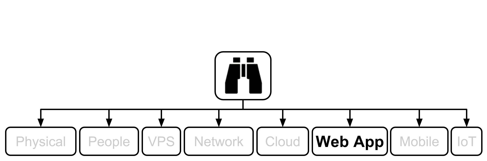
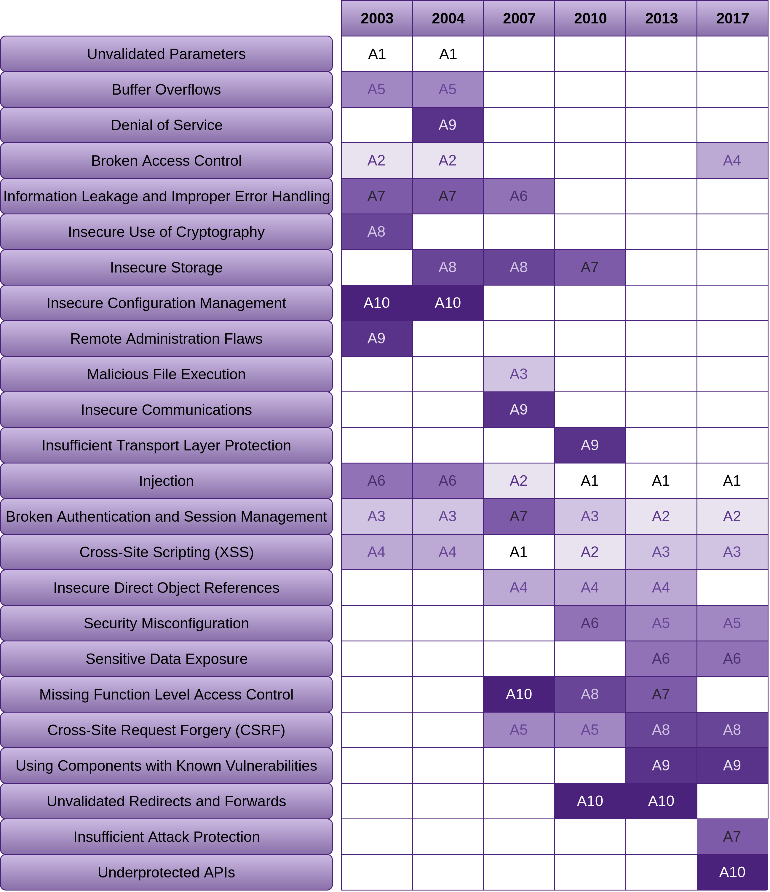
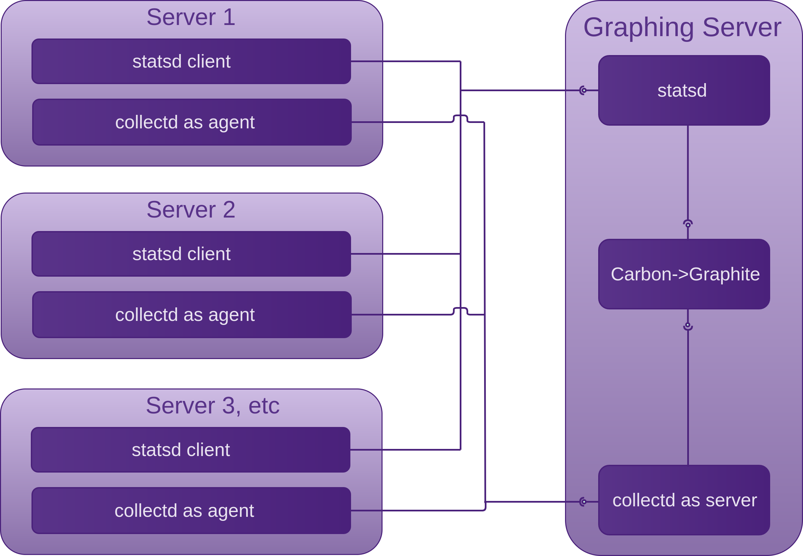
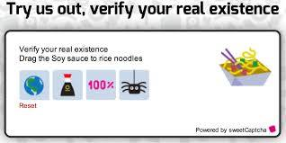
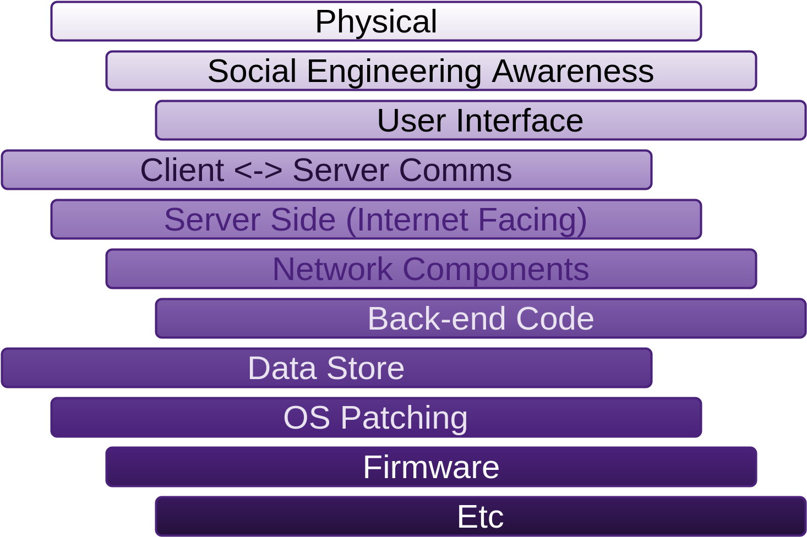
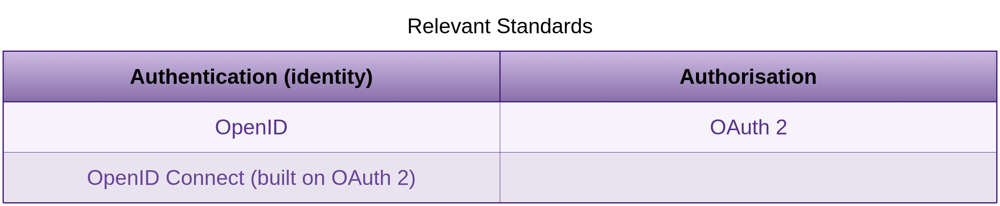
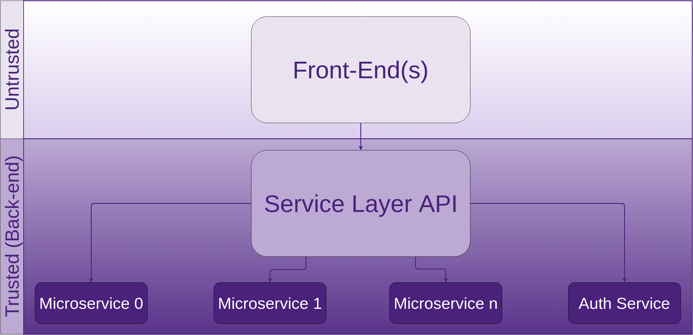
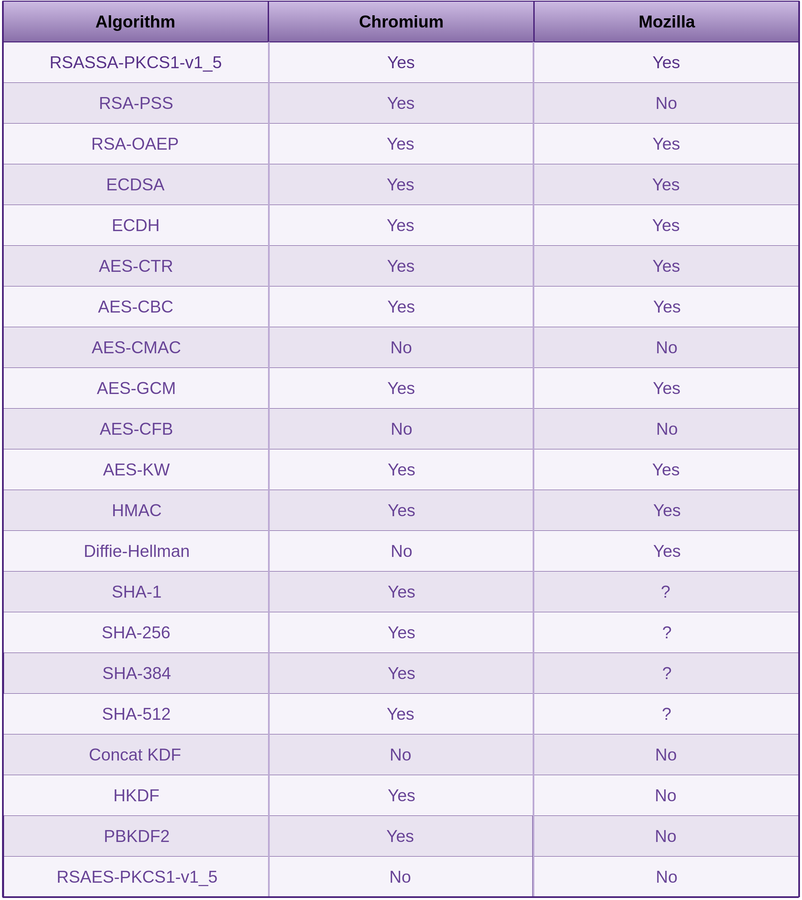

10. Web Applications
1. SSM Asset Identification
Take the results from the higher level Asset Identification in the 30,000’ View chapter of Fascicle 0. Remove any that are not applicable, add any relevant from previous chapters, add any newly discovered. Here are some to get you started:
- Ownership. Similarly as addressed in the VPS chapter, Do not assume that ownership, or at least control of your server(s) is something you will always have. Ownership is often one of the first assets an attacker will attempt to take from a target in order to execute further exploits. At first this may sound strange, but that is because of an assumption you may have that you will always own (have control of) your web application. Hopefully I dispelled this myth in the VPS chapter. If an attacker can take control of your web application (own it/steal it/what ever you want to call the act), then they have a foot hold to launch further attacks and gain other assets of greater value. The web application itself will often just be a stepping stone to other assets that you assume are safe. With this in mind, your web application is an asset. On the other hand you could think of it as a liability. Both may be correct. In any case, you need to protect your web application and in many cases take it to school and teach it how to protect itself. I cover that under the Insufficient Attack Protection section
- Similarly to the Asset Identification section in the VPS chapter, Visibility is an asset that is up for grabs
- Intellectual property or sensitive information within the code or configuration files such as email addresses and account credentials for the likes of data-stores, syslog servers, monitoring services. We address this in Management of Application Secrets
- Sensitive Client/Customer data.
- Sanity and peace of mind of people within your organisation. Those that are:
- Well informed
- Do not cut corners that should not be cut
- Passionate and driven to be their best
- Smart
- Humble yet fearless
- Recognise technical debt and are professional enough to speak up
- Engaged and love passing on their knowledge to others are truly an asset.
Some of the following risks will threaten the sanity of these people if the countermeasures are not employed.
2. SSM Identify Risks
Go through the same process as we did at the top level, in the 30,000’ View chapter of Fascicle 0, but for Web Applications. Also MS Application Threats and Countermeasures is useful.
The following is the OWASP Top 10 vulnerabilities for 2003, 2004, 2007, 2010, 2013 and 2017.
As you can see there are some vulnerabilities that we are just not getting better at removing. I’ve listed them in order of most consistent to not quite as consistent:
- Injection (and the easiest to fix)
- Broken Authentication and Session Management
- XSS
- Insecure Direct Object References
- Missing Function Level Access Control
- We have gotten a little better at reducing CSRF with using the likes of the synchroniser token pattern, and possibly using LocalStorage more than cookies
“Using Components with Known Vulnerabilities” is one that I think we are going to see get worse before it gets better, due to the fact that we are consuming a far greater amount of free and open source. With the increase of free and open source package repositories, such as NPM, NuGet and various others, we are now consuming a far greater number of packages without vetting them before including them in our projects. This is why I’ve devoted a set of sections (“Consuming Free and Open Source”) within this chapter to this problem. There are also sections devoted to this topic in the VPS and Network chapters titled “Using Components with Known Vulnerabilities”. It’s not just a problem with software. We are trying to achieve more, with less of our own work, so in many cases we are blindly trusting other sources. From the attackers perspective, this is an excellent vector to compromise for maximum exploitation.
Lack of Visibility
I see this as an indirect risk to the asset of web application ownership. The same sections in the VPS and Network chapters may also be worth reading if you have not already, as there is some crossover.
Not being able to introspect your application at any given time or being able to know how the health status is, is not a comfortable place to be in and there is no reason you should be there.
Insufficient Logging and Monitoring
Can you tell at any point in time if someone or something is:
- Using your application in a way that it was not intended to be used
- Violating policy. For example circumventing client side input sanitisation.
How easy is it for you to notice:
- Poor performance and potential DoS?
- Abnormal application behaviour or unexpected logic threads
- Logic edge cases and blind spots that stake holders, Product Owners and Developers have missed?
- Any statistics that may be helpful in diagnosing any application specific issue
Lack of Input Validation, Filtering and Sanitisation
Generic
The risks here are around accepting untrusted data and parsing it, rendering it, executing it or storing it verbatim to have the same performed on it at a later stage.
Untrusted territory is usually a location that is not close to your back-end executing code. If your back-end is in the cloud that you do not control, I.E. not your hardware, not your staff running it, then you have serious potential issues there as well that you may want to address. I’ve discussed in depth what these issues are in the previous chapters and how to mitigate the risks. Anywhere outside of your local network is untrusted. Inside your local network is semi-trusted. The amount of trust you afford depends on the relationships you have with your staff, how large your staff base is, how large your network is, how APs are managed and many of the other issues I have discussed in the previous chapters, especially Network, and Physical and People from Fascicle0. The closer data gets to the executing back-end code, the less untrustworthy the territory should be. Of course there are many exceptions to this rule as well.
So I could say, just do not trust anyone or anything, but there comes a time and a place that you have to afford trust. Just keep it as close to the back-end executing code as possible.
If you parse, render or execute data that you can not trust, that is data accepted by an unknown user, whether it be through a browser, intercepting communications somewhere along untrusted territory.
The web stack today is very complicated. We have URLs, CSS, JavaScript, XML and its derivatives, templating languages and frameworks. Most of these languages have their own encoding, quoting, commenting, escaping, and most of which can be nested inside of each other. Making the web browser a very treacherous place in terms of security. Browsers have made their living out of being insanely convoluted at interpreting all of this. All scripts have the same level of privilege within the browser.
This overly complex environment leads to confusion and a perfect haven for hiding malicious code chunks.
Below are a few techniques widely accepted that we need to use on any untrusted data before it makes its travels through your system to be stored or hydrated.
What is Validation
Decide what input is valid by way of a white list (list of input characters that are allowed to be received). Often each input field will have a different white list. Validation is binary, the data is either allowed to be received or not allowed. If it is not allowed, then it is rejected. This is usually not to complicated to work out what is good, what is not and thus rejected. There are a few strategies to use for white listing, such as the actual collection of characters or using regular expressions.
There are other criteria that you can validate against as well, such as:
- Field lengths
- Whether or not something is required
- Whether or not something is a specific type or in a specific format and many other criteria
// The NodeJS module express-form provides validation, filtering
// and some light weight sanitisation as Express middleware.
var form = require('express-form');
var fieldToValidate = form.field;
// trim is filtering.
fieldToValidate('name').trim().
// required is validation.
required().
// minLength is validation.
minLength(2).
// maxLength is validation.
maxLength(50).
// is is validation.
is(/^[a-zA-Z ']+$/)
// There is no sanitisation here.
What is Filtering
When some data can pass through (be received) and some is captured by the filter element (thou shalt not pass). OWASP has the RSnake donated seminal XSS cheat sheet which has many tests you can use to check your vulnerability stance to XSS exploitation. This is highly recommended.
What is Sanitisation
Sanitisation of input data is where the input data whether it is in your white list or not is accepted and transformed into a medium that is no longer dangerous. Now it will probably go through validation first. The reason you sanitise character signatures (may be more than single characters, character combinations) not in your white list is a defence in depth strategy. The white list may change in the future due to a change in business requirements and the developer may forget to revise the sanitisation routines. Always think of any security measure as standing on its own when you create it, but standing alongside many other security measures once done.
You need to know which contexts your input data will pass through in order to sanitise correctly for all potential execution contexts. This requires lateral thinking and following all execution paths. Both into and out of your application (once rehydrated), being pushed back to the client. We cover this in depth below in the “Example in JavaScript and C#” section in the countermeasures.
Cross-Site Scripting (XSS)
The following hands on hack demonstrates what a XSS attack is and provides a little insight into some of the damages that it can cause.
A XSS attack is one in which untrusted data enters a web application usually through a web request and is not stopped by validation, filtering or sanitisation. The data is then at some point sent to someone using the same web application without being validated, filtered or sanitised.
The data in question is executed by the browser, usually JavaScript, HTML or Flash. What the code does is up to the creativity of the initiator.
One way this can be carried out trivially is to simply buy an add and have that injected into the end users browser. The malicious code can be easily hidden by simply changing additional scripts that are fetched once live. Even fetching a script that fetches a different script under the attackers control.
The main two different types of XSS are Stored/Persistent or Type I and Reflected/Non-Persistent or Type II.
Stored attacks are where the injected code is sent to the server and stored in a medium that the web application uses to retrieve it again to send to another user.
Reflected attacks use the web application in question as a proxy. When a user makes a request, the injected code travels from another medium through the web application (hence the reflecting) and to the end user. From the browsers perspective, the injected code came form the web application that the user made a request to.

The following attack was the first one of five that I demonstrated at WDCNZ in 2015. The attack after this one was a credential harvest based on a spoofed website that hypothetically was fetched due to a spear phishing attack. That particular attack can be found in the “Spear Phishing” section of the People chapter in Fascicle 0.
Theoretically in order to get to the point where you carry out this attack, you would have already been through several stages first. If you are carrying out a penetration testing engagement, it is likely you would have been through the following:
- Information gathering (probably partly even before you signed the contract with your client)
- Vulnerability scanning
- Vulnerability searching
If you are working within a development team you may have found out some other way that your project was vulnerable to XSS.
How ever you got to this point, you are going to want to exhibit the fault. One of the most effective ways to do this is by using BeEF. BeEF clearly shows what is possible when you have an XSS vulnerability in scope and is an excellent tool for effortlessly demonstrating the severity of the fault to all team members and stakeholders.
One of BeEFs primary reasons to exist is to exploit the fact that many security philosophies seem to forget how easy it is to go straight through hardened network perimeters and attack the soft mushy insides of a sub network as discussed in the Fortress Mentality section of the Physical chapter in Fascicle 0. Exposing XSS faults is one of BeEFs attributes.
You can find the video of how this attack is played out at http://youtu.be/92AWyUfJDUw.
Cross-Site Request Forgery (CSRF)
This type of attack depends on a fraudulent web resource, be it a website, email, instant message, or program that causes the targets web browser to perform an unintentional action on a website that the target is currently authenticated with.
CSRF attacks target functionality that change state on the server (POST, PUT, DELETE) that the target is currently authenticated with, requests such as changing the targets credentials, making a purchase, moving money at their bank. Forcing the target to retrieve data does not help the attacker.
If you are using cookies (authentication that the browser automatically sends from the client) for storage of client-side session artefacts, CSRF is your main concern, but XSS is also a possible attack vector.
The target needs to submit the request either intentionally or unintentionally. The request could appear to the target as any action. For example:
- Intentionally by clicking a button on a website that does not appear to have anything in common with the website that the target is already authenticated with by way of session Id stored in a cookie
- Unintentionally by loading a page not appearing to have anything in common with the website that the target is already authenticated with by way of session Id stored in a cookie, that for example contains an
<iframe>with a form and a script block inside
For No. 1 above, the action attribute of the form for which the target submits could be to the website that the target is already authenticated with, thus a fraudulent request is issued from a web page seemingly unrelated to the website that the target is already authenticated with. This can be seen in the second example below on line 4. The browser plays its part and sends the session Id stored in the cookie. NodeGoat has an excellent example of how this plays out:
Below code can be found at https://github.com/OWASP/NodeGoat/:
1 <form role="form" method="post" action="/profile">
2 <div class="form-group">
3 <label for="firstName">First Name</label>
4 <input
5 type="text"
6 id="firstName"
7 name="firstName"
8 value="{{firstName}}"
9 placeholder="Enter first name">
10 </div>
11 <div class="form-group">
12 <label for="lastName">Last Name</label>
13 <input
14 type="text"
15 id="lastName"
16 name="lastName"
17 value="{{lastName}}"
18 placeholder="Enter last name">
19 </div>
20 <div class="form-group">
21 <label for="ssn">SSN</label>
22 <input
23 type="text"
24 id="ssn"
25 name="ssn"
26 value="{{ssn}}"
27 placeholder="Enter SSN">
28 </div>
29 <div class="form-group">
30 <label for="dob">Date of Birth</label>
31 <input
32 type="date"
33 id="dob"
34 name="dob"
35 value="{{dob}}"
36 placeholder="Enter date of birth">
37 </div>
38 <div class="form-group">
39 <label for="bankAcc">Bank Account #</label>
40 <input
41 type="text"
42 id="bankAcc"
43 name="bankAcc"
44 value="{{bankAcc}}"
45 placeholder="Enter bank account number">
46 </div>
47 <div class="form-group">
48 <label for="bankRouting">Bank Routing #</label>
49 <input
50 type="text"
51 id="bankRouting"
52 name="bankRouting"
53 value="{{bankRouting}}"
54 placeholder="Enter bank routing number">
55 <p class="help-block">
56 Must be entered as digits with a suffix of #. For example: 0198212# </p>
57 </div>
58 <div class="form-group">
59 <label for="address">Address</label>
60 <input
61 type="text"
62 id="address"
63 name="address"
64 value="{{address}}"
65 placeholder="Enter address">
66 </div>
67 <input type="hidden" name="_csrf" value="{{csrftoken}}" />
68 <button type="submit" class="btn btn-default" name="submit">Submit</button>
69 </form>
The below attack code can be found at the NodeGoat tutorial for CSRF, along with the complete example that ckarande crafted, and an accompanying tutorial video of how the attack plays out:
1 <html lang="en">
2 <head></head>
3 <body>
4 <form method="POST" action="http://TARGET_APP_URL_HERE/profile">
5 <h1> You are about to win a brand new iPhone!</h1>
6 <h2> Click on the win button to claim it...</h2>
7 <!--User is authenticated, let's force them to change some values-->
8 <input type="hidden" name="bankAcc" value="9999999"/>
9 <input type="hidden" name="bankRouting" value="88888888"/>
10 <input type="submit" value="Win !!!"/>
11 </form>
12 </body>
13 </html>
For No. 2 above, is similar to No. 1, but the target does not have to action anything once the fraudulent web page is loaded. The script block submits the form automatically, thus making the request to the website that the target is already authenticated with, the browser again playing its part in sending the session Id stored in the cookie:
<form id="theForm" action="http://TARGET_APP_URL_HERE/profile" method="post">
<input type="hidden" name="bankAcc" value="9999999"/>
<input type="hidden" name="bankRouting" value="88888888"/>
<input type="submit" value="Win !!!"/>
</form>
<script type="text/javascript">
document.getElementById('theForm').submit();
</script>
Some misnomers:
- A form is not essential to carry out CSRF successfully
- XSS is not essential to carry out CSRF successfully
- HTTPS does nothing to defend against CSRF
Injection

injection occurs when untrusted data is sent to an interpreter as part of a command or query. The attacker’s hostile data can cause the interpreter to execute commands that would otherwise not be, or accessing data without proper authorization.
In order for injection attacks to be successful, untrusted data must be unsuccessfully validated, filtered and sanitised before it reaches the interpreter.
Injection defects are often easy to discover simply by examining the code that deals with untrusted data, including internal data. These same defects are often harder to discover when black-box testing, either manually or via fuzzers. Defects can range from trivial to complete system compromise.
As part of the discovery stage, the attacker can test their queries and start to build up what they think the underlying structure looks like that they are attacking with any number of useful on-line query test tools, such as freeformatter.com. This allows the attacker to make as little noise to signal ratio as possible.
SQLi
One of the simplest and quickest vulnerabilities to fix is SQL Injection, yet it is still top of the hit lists. I am going to hammer this home some more. Also checkout the podcast I hosted with Haroon Meer as guest on Network Security for Software Engineering Radio. Haroon discussed using SQLi for data exfiltration.
There are two main problems here.
- SQL Injection
- Poor decisions around sensitive data protection. We discuss this in depth further on in this chapter in the Data-store Compromise section and even more so the Countermeasures of. Do not follow this example of a lack of well salted and quality strong key derivation functions (KDFs) used on all of the sensitive data in your own projects.
NoSQLi
NoSQL Injection is semantically very similar to SQL Injection and Command Injection with JavaScript running on the server. The main differences are in the syntax of the attack.
NoSQL data stores often provide greater performance and scaling benefits, but in terms of security, are disadvantaged due to far fewer relational and consistency checks.
There are currently over 225 types of NoSQL data stores, and each one does things differently. This of course means that if all we considered was the number of systems compared to SQL, then the likelihood of confusion around what a safe query looks like in any given NoSQL engine has increased dramatically. There is also more room for an attacker to move within NoSQL queries than with SQL due to being heavily dependent on JavaScript which is a dynamic loosely typed general purpose language rather than the far more tightly constrained declarative SQL.
Because there are so many types of NoSQL data store, crafting the attacks is often implementation specific, and because of that, the countermeasures are also implementation specific, making it even more work to provide a somewhat secure environment for your untrusted data to pass through. It often feels like there is no safe passage.
The data store queries are usually written in the programming language of the application, or buried within an API of the same language, often the ubiquitous JavaScript is used, which can be executed in the Web UI, the server side code if it is JavaScirpt, and then the particular type of NoSQL data store, so there are many more execution contexts that can be attacked.
I can not possibly cover all of the types of NoSQL data store, so the below is an example of some mongodb.
A typical SQL query used to select a user based on their username and password might look like the following:
SELECT * FROM accounts WHERE username = '$username' AND password = '$password'
If the $username and $password fields were not properly validated, filtered and sanitised, an attacker could supply
admin' --
as the username and the resulting query would look like:
-- As you can see, the password is no longer required,
-- as the rest of the query is commented out.
SELECT * FROM accounts WHERE username = 'admin' --' AND password = ''
The equivalent of a MongoDB query could be:
db.accounts.find({username: username, password: password});
One way an attacker could attempt to bypass the password if the untrusted data was not being validated would be to supply a username of:
admin
and a password of:
{$gt: ""}
The resulting query would then look like:
{username: "admin", password: {$gt: ""}}The MongoDB $gt comparison operator is used here to select those documents where the value of the password is greater than "", which always results in true because empty passwords are not permitted. Check the NodeGoat tutorial for additional information.
Command Injection
The following examples target JavaScript running on the server. If your application on the server is written in some other language, then the attacker just needs to supply code of that language to be executed.
The following functions are easily exploited by an attacker by simply supplying the code they want to execute as a string of text input:
The JavaScript eval function executes the string of code it is passed with the privileges of the caller.
The JavaScript setTimeout and setInterval functions allow you to pass a string of code as the first argument, which is compiled and executed on timer expiration (with setTimeout), and at intervals (with setInterval).
The JavaScript Function constructor takes an arbitrary number of string arguments which are used as the formal parameter names within the function body that the constructor creates. The last argument passed to the Function constructor is also a string, but it contains the statements that are to be executed as the Function object that is returned.
The purposely vulnerable Node Web Application NodeGoat, provides some simple examples in the form of executable code including some absolute bare minimum countermeasures, a tutorial with videos of exploiting Command Injection in the form of a Denial of Service (DoS), by passing
while(1)
or
process.exit()
or
process.kill(process.pid)
through some input fields of the Web UI. It also covers discovery of the names of the files on the target web servers file system:
// Read the contents of the current directory.
res.end(require('fs').readdirSync('.').toString());
// Read the contents of the parent directory.
res.end(require('fs').readdirSync('..').toString());
res.end(require('fs').readFileSync(filename));
The attacker can take this further by writing new files and executing files on the server.
Many web applications take untrusted data, often from HTTP requests and pass this data directly to the Operating System, its programs, or even other systems, often by APIs, which is now addressed by the OWASP Top 10 A10 Under protected APIs
Also check out the Additional Resources chapter for command injection attack techniques.
XML Injection
XML injection techniques usually consist of a discovery stage followed by full exploitation if successful:
- Attempting to create invalid XML document by injecting various XML metacharacters (metacharacter injection):
- Single quotes:
' - Double quotes:
" - Angle brackets:
>< - Comment tags:
<!--and--> - Ampersand:
& - CDATA section delimiters:
<![CDATA[and]]>allowing an attacker to form executable code
- Single quotes:
- Injecting an untrusted XML document which is accepted and not contextually validated, filtered or sanitised by the parser. That is if XML documents are accepted. Exploiting the XML parser that is configured to resolve, validate and process external entities in the form of Document Type Definitions (DTDs) and XML Schema Definitions (XSDs). This is known as XML External Entity (XXE) exploitation
- Attempting to modify the XML structure by injecting various XML data and Tags (tag injections)
and witnessing how the parser deals with the data.
There are a number of XML attack categories exploitable via injection that target weaknesses such as the following that Adam Bell presented at the OWASP New Zealand Day conference in 2017 that I helped to run. Adams talk was called: “XML Still Considered Dangerous:
- Parameter expansion
- XML External Entities (XXE)
- URL Invocation
Check out Adams slide-deck at the OWASP NZ Day wiki for some interesting examples.
XSLT Injection
There is a lot that can go wrong in XSLT, the following is a collection of some of the vulnerabilities to be aware of:
- Leveraging XPath to refer to parts of XML documents
- Susceptible to XXE of local and remote files, as well as include additional arbitrary XSL files
- Extract system information including file contents
- Port scanning
- Write files to file system
- Access of arbitrary databases
- Execution of arbitrary code
XPath Injection
Similarly to generic injection, when XPath incorporates untrusted data that has not been validated, filtered and sanitised based on the execution context in question, this is discussed in the “What is Sanitisation” section of the Lack of Input Validation, Filtering and Sanitisation section of Identify Risks, the intended logic of the query can be modified. This allows an attacker to inject purposely malformed data into a website, then by making educated guesses based on what is returned, including the returned data and any error messages, the attacker can build a picture of how the XML structure looks. Similar to XML Injection, the attacker will usually carry out this discovery stage followed by full exploitation if successful.
Although this attack technique is similar to SQLi, XPath has no provision for commenting out tails of expressions:
- MS SQL, MySQL and Oracle:
-- - MySQL:
# - MS Access:
%00
XPath is a standards based language, unlike SQL, its syntax is implementation independent, this allows attacks to be automated across many targets that use user input to query XML documents.
Unlike SQL where specific commands and queries are run as specific users, and thus the principle of least privilege can be applied to any given command or query based on the user running it, with XPath there is no notion of Access Control Lists (ACLs), this means that a query can access every part of the XML document. So for example, if user credentials are being stored in an XML document, they can be retrieved and allow the attacker to elevate their privileges to those of other users, perhaps administrators if the administrators credentials are stored in the XML document.
Let us use the following XML document for examples:
<?xml version="1.0" encoding="UTF-8"?>
<Users>
<User ID="1">
<FirstName>John</FirstName>
<LastName>Deer</LastName>
<UserName>jdeer</UserName>
<Password>3xp10it3d</Password>
<Type>administrator</Type>
</User>
<User ID="2">
<FirstName>Kim</FirstName>
<LastName>Carter</LastName>
<UserName>kimc</UserName>
<Password>t03457</Password>
<Type>user</Type>
</User>
</Users>
Blind injection is a technique used in many types of injection. A blind injection attack is used where the attacker does not know what the underlying query, or in the case of XPath, XML document looks like, and/or the feedback from the application reveals little detail in terms of data or error messages. Often booleanised queries and/or XML Crawling are used to facilitate blind injection attacks.
Booleanised Queries are those that return very granular true/false information based on very small amounts of data supplied by the attacker.
The following XPath query returns the first character of the first child node (no mater what it is called) of the first User:
substring((//User[1]/*[1]),1,1)
The following XPath query returns the length of the forth element (no mater what it is called) of the first User:
string-length(//User[1]/*[4])
XML Crawling allows the attacker to get to know what the XML document structure looks like.
For example, the following reveals that the number of Users is 2:
count(//Users/*)
The following reveals that the length of the value at the fourth position of the child node (no mater what it is called) of the first User is in fact 9 characters long. Is the Password nine characters long? True.
string-length(//User[position()=1]/*[position()=4])=9
The following query can be used to confirm that the first character of the fourth child node (no mater what it is called) of the first User is in fact 3:
substring((//User[1]/*[4]),1,1)="3"
Checkout the OWASP XML Crawling documentation for further details. The queries at the OWASP documentation did not work for me, hence why I have supplied ones that do.
Using booleanised queries can be very good for automated attacks, usually many of these granular tests will need to be performed, but because they are so small, an attacker can aggregate them, making them very versatile.
Continuing on: If our target application contains logic to retrieve the account type so long as the user provides their username and password, that logic may look similar to the following, once the legitimate administrator has entered their credentials:
string(//User[UserName/text()='jdeer' and Password/text()='3xp10it3d']/Type/text())
If the application does not take the countermeasures discussed, and the attacker enters the following:
Username:
' or '1'='1
Password:
' or '1'='1
Then the above query will look more like the following:
string(//User[UserName/text()='' or '1'='1' and Password/text()='' or '1'='1']/Type/text())
Which although the attacker has not supplied a valid UserName or Password, according to the XPath query, they are still authenticated, because the query will always evaluate to true. This is called authentication bypass for obvious reasons. You may notice that this attack looks very similar to many SQLi attacks.
The available XPath functions and XSLT specific additions to XPath are documented at Mozilla Developer Network (MDN)
Technically, XPath is used to select parts of an XML document, it has no provision for updating, in saying that, command injection can be used to modify data that XPath returns. Standard language libraries usually provide functionality for modifying XML documents, along with the XML Data Modification Language (DML) that we will discuss soon in the next section.
XQuery Injection
XQuery being a superset of XPath, suffers from the same vulnerabilities as XPath, plus the SQL-like FOR, LET, WHERE, ORDER BY, RETURN (FLWOR) expression abilities. Hopefully coming as no surprise, the attack vectors are a combination of those discussed in XPath Injection and SQLi. The canonical example is provided below thanks to projects.webappsec.org:
<?xml version="1.0" encoding="UTF-8"?>
<userlist>
<user category="group1">
<uname>jdeer</uname>
<fname>John</fname>
<lname>Deer</lname>
<status>active</status>
</user>
<user category="admins">
<uname>kimc</uname>
<fname>Kim</fname>
<lname>Carter</lname>
<status>active</status>
</user>
<user category="group2">
<uname>bobm</uname>
<fname>Bob</fname>
<lname>Marley</lname>
<status>deceased</status>
</user>
<user category="group1">
<uname>MSmith</uname>
<fname>Matthew</fname>
<lname>Smith</lname>
<status>terminated</status>
</user>
</userlist>
If the query to retrieve the user bobm was using a string literal from the users input (bobm), it may look similar to the following:
doc("users.xml")/userlist/user[uname="bobm"]
An attacker could exploit the query by providing:
something" or ""="
which would form the following query:
doc("users.xml")/userlist/user[uname="something" or ""=""]
which upon execution would yield all of the users.
Something else to keep in mind is that XQuery also has an extension called the XML Data Modification Language (DML), which is commonly used to update (insert, delete and replace value of) XML documents.
LDAP Injection
The same generic injection information is applicable to LDAP
Successful LDAP injection attacks could result in the granting of permissions to unauthorised queries and/or adding, deleting or modifying of entries in the LDAP tree. Because LDAP is used extensively for user authentication, this is a particularly viable area for attackers.
As we discussed the usage of metacharacters in XML Injection, LDAP search filter metacharacters can be injected into the dynamic parts of the queries and thus executed by the application.
LDAP uses Polish notation (PN), or normal Polish notation (NPN), or simply prefix notation, which has the distinguishing feature of placing operators to the left of their operands
One of the canonical examples, is a web application that takes the users credentials and verifies their authenticity, if successful, the user is authenticated and granted access to specific resources.
The LDAP filter used to check whether the supplied username and password of a user is correct, might look similar to the following:
With user input:
and:
the search filter would look similar to the following:
The (&) we used that did not contain any embedded filters is called the LDAP true filter, and will always match any target entry. This allows the attacker to compare a valid uid with true, the attacker can subsequently use any password as only the first filter is processed by the LDAP server.
Captcha
Lack of captchas are a risk, but so are captchas themselves…
What is the problem here? What are we trying to stop?
Bots submitting. What ever it is, whether advertising, creating an unfair advantage over real humans, link creation in attempt to increase SEO, malicious code insertion, you are more than likely not interested in accepting it.
What do we not want to block?
People submitting genuinely innocent input. If a person is prepared to fill out a form manually, even if it is spam, then a person can view the submission and very quickly delete the validated, filtered and possibly sanitised message.
Management of Application Secrets
Also consider reviewing the Storage of Secrets subsections in the Cloud chapter.
- Passwords and other secrets for things like data-stores, syslog servers, monitoring services, email accounts and so on can be useful to an attacker to compromise data-stores, obtain further secrets from email accounts, file servers, system logs, services being monitored, etc, and may even provide credentials to continue moving through the network compromising other machines.
- Passwords and/or their hashes travelling over the network.
Data-store Compromise
The reason I have tagged this as moderate is because if you take the countermeasures, it doesn’t have to be a disaster.
The New Zealand Intelligence Service recently told Prime Minister John Key that this was one of the 6 top threats facing New Zealand. “Cyber attack or loss of information and data, which poses financial and reputational risks.”
There are many examples of data-store compromise happening on a daily basis. If organisations took the advice I outline in the countermeasures section the millions of users would not have their identifies stolen. Sadly the advice is rarely followed. The Ashley Madison debacle is a good example. Ashley Madisons entire business relied on its commitment to keep its clients (37 million of them) data secret, provide discretion and anonymity.
“Before the breach, the company boasted about airtight data security but ironically, still proudly displays a graphic with the phrase “trusted security award” on its homepage”
“We worked hard to make a fully undetectable attack, then got in and found nothing to bypass…. Nobody was watching. No security. Only thing was segmented network. You could use Pass1234 from the internet to VPN to root on all servers.”
“Any CEO who isn’t vigilantly protecting his or her company’s assets with systems designed to track user behavior and identify malicious activity is acting negligently and putting the entire organization at risk. And as we’ve seen in the case of Ashley Madison, leadership all the way up to the CEO may very well be forced out when security isn’t prioritized as a core tenet of an organization.”
Dark Reading
Other notable data-store compromises were LinkedIn with 6.5 million user accounts compromised and 95% of the users passwords cracked in days. Why so fast? Because they used simple hashing, specifically SHA-1. EBay with 145 million active buyers. Many others coming to light regularly.
Are you using well salted and quality strong key derivation functions (KDFs) for all of your sensitive data? Are you making sure you are notifying your customers about using high quality passwords? Are you informing them what a high quality password is? Consider checking new user credentials against a list of the most frequently used and insecure passwords collected. I discussed Password Lists in the Tooling Setup chapter. You could also use wordlists targeting the most commonly used passwords, or create an algorithm that works out what an easy to guess password looks like, and inform the user that it would be easy to guess by an attacker.
Cracking
Remember we covered Password Profiling in the People chapter where we essentially made good guesses, both manually and with the use of profiling tools, around the end users passwords, and then feed the short-list to a brute forcing tool. Here we already have the password hashes. We just need to find the source passwords that created the hashes. This is where cracking comes in.
When an attacker acquires a data-store or domain controller dump of hashed passwords, they need to crack the hashes in order to get the passwords. How this works, is the attacker will find or create a suitable password list of possible passwords. The tool used will attempt to create a hash of each of these words based on the hashing algorithm used on the dump of hashes. Then compare each dumped hash with the hashes just created. When a match is found, we know that the word in our wordlist used to create the hash that matches the dumped hash is in fact a legitimate password.
A smaller wordlist is going to take less time to create the hashes. As this is often an off-line attack, a larger wordlist is often preferred over a smaller one because the number of generated hashes will be greater, which when compared to the dump of hashes means the likelihood of a greater number of matches is increased.
As part of the hands on hack in the SQLi section, we obtained the password hashes via SQL injection from the target web application DVWA (part of the OWASP Broken Web Application suite (VM)). We witnessed how an attacker could obtain the passwords from the hashed values retrieved from the database.
Lack of Authentication, Authorisation and Session Management

Also brought to light by the OWASP Top 10 risks “No. 2 Broken Authentication and Session Management”.
With this category of attacks, your attacker could be either someone you do or do not know. Possibly someone already with an account, an insider maybe, looking to take the next step which could be privilege escalation or even just alteration so that they have access to different resources by way of acquiring other accounts. Some possible attack vectors could be:
- Password acquisition: by way of data-store theft (off-line attack) or poor password hashing strategies (susceptible to off-line and on-line attacks), discussed in the Countermeasures section but in more depth in the Management of Application Secrets sections
- Passwords or sessionIds travelling over unsecured channels susceptible to Man In the Middle (MItM) attacks, discussed in the Countermeasures section but also refer to the TLS Downgrade sections of the Network chapter
- Buggy Session Management, SessionIds exposed in URLs
- Faulty logout (not invalidating authentication tokens)
- Faulty remember me functionality
- Long session time-outs can exacerbate other weak areas of defence
- Secret questions
- Updating account details
In the Countermeasures section I go through some mature and well tested libraries and other technologies, and details around making them fit into a specific business architecture.
Consider what data could be exposed from any of the accounts and how this could be used to gain a foot hold to launch further alternative attacks. Each step allowing the attacker to move closer to their ultimate target, the ultimate target being something hopefully discussed during the Asset Identification phase or taking another iteration of it as you learn and think of additional possible targeted assets.
Often the line between the following two concepts gets blurred, sometimes because where one starts and one ends is often not absolute or clear, and sometimes intentionally. Neither help new comers and even those used to working with the concepts get to grips with which is which and what the responsibilities of each include.
What is Authentication
The process of determining whether an entity (be it person or something else) is who or what it claims to be.
Being authenticated, means the entity is known to be who or what it/he/she claims to be.
What is Authorisation
The process of verifying that an entity (usually requesting)(be it person or something else) has the right to a resource or to carry out an action, then granting permission requested.
Being authorised, means the entity has the power or right to certain privileges.
Don’t build your own authentication, authorisation or session management system unless it’s your core business. It’s too easy to get things wrong and you only need one defect in order to be compromised. Leave it to those that have already done it or do it as part of their core business and have already worked through the defects.
Cryptography on the Client (AKA Untrusted Crypto)

The things I see that seem to get many developers into trouble:
- Lack of understanding of what the tool is, where and how it should be used
- Use of low-level primitives with no to little knowledge of which are most suitable for which purposes. How to make them work together. How to use and configure them, so as to not introduce security defects, usually due to not understanding how the given primitive is designed and its purpose of use
- Many libraries have either:
- To many options which just helps to create confusion for developers as to what to use for which purpose. The options they do have are not the best for their intended purpose
- The creators may be developers, but are not cryptographers
There are so many use cases with the wider cryptography topic. There is no substitute for learning about your options, which to use in any given situation and how to use them.
JavaScript crypto is wrought with problems.
For example, there is nothing safe about having JavaScript in the browser store, read or manage an entropy pool. This gets a little better with the Web Cryptography APIs (discussed in the Countermeasures section) window.crypto.getRandomValues().
Little trust should be placed in the browser and how it generally fails to manage attacks due to the complexities discussed in both Risks and Countermeasures sections of “Lack of Input Validation, Filtering and Sanitisation”. The browser has enough trouble getting all the technologies to work together and inside of each other, let-a-lone stopping malicious code fragments that do work from working. As most web developers have worked out, the browser is purposely designed to make even syntactically incorrect code work correctly.
The browser was designed to download and run potentially malicious, untrusted code from arbitrary locations on the fly. The browser in most cases doesn’t know what malicious code is, and often the first payload is not malicious, but simply fetches other code that may fetch other code that eventually will be malicious.
The JavaScript engines are constantly changing, meaning that the developers expectations of relying on implementation details of the execution environments to stay somewhat stable, will be constantly let down.
Web development is hard. Web security is harder still.
The following is a list of the best JavaScript crypto libraries we have available to us. I purposely left many out, as I don’t want to muddy the waters and add more lower quality options:
-
Stanford JavaScript Crypto Library (SJCL)
- Home page: http://bitwiseshiftleft.github.io/sjcl/ The default key stretching factor appears to be 1000. This should probably be adaptive to match the advances in hardware technology, as discussed under the MembershipReboot section.
- SJCL demo page: http://bitwiseshiftleft.github.io/sjcl/demo/ which helps to explain some of the creators reasoning.
- Source Code: https://github.com/bitwiseshiftleft/sjcl/
- NPM package: https://www.npmjs.com/package/sjcl. Yes the download count is way less than Forge, but SJCL is first in my list for a reason. SJCL provides minimal options of algorithms and cipher modes, etc. Just the best, to help ease the burden of having to research many algorithms and cipher modes to find out which are now broken.
What’s also really good to see is SJCL pushing consumers down the right path and issuing warnings around primitives that have issues. For example the warning against using CBC. I discuss this further in the risks that solution causes section.
Other than the countermeasure, This is probably the best offering we have for crypto in the browser. It has sensible defaults, good warnings, not to many options to understand in order to make good choices. This is one of those libraries that guides the developer down the right path.
Encrypts your plain text using the AES block cypher with a choice of cipher modes CCM or OCB2. AES is the industry-standard block-cipher for this purpose, one of the better choices for crypto in the browser if it must be done. AES comes in three forms. 128 bit (very efficient), 192 bit and 256 bit. The modes of operation that SJCL have provided for use with AES are the following two Authenticated Encryption with Associated Data (AEAD) ciphers:
- AES-CCM. Counter with CBC-MAC (CCM) is a mode of operation for cryptographic block ciphers of 128 bits in length. It is an authenticated encryption algorithm designed to provide both authentication and confidentiality
- AES-OCB2. Offset CodeBook (OCB) is also a mode of operation for cryptographic block ciphers of 128 bits in length. OCB2 is an authenticated encryption algorithm designed to provide both authentication and confidentiality. OCB1 didn’t allow associated data to be included with the message. Integrity verification is now part of the decryption step with OCB2. GCM is similar to OCB, but GCM and CCM don’t have any patents. Although exemptions have been granted so that OCB can be used in software licensed under the GNU General Public License
- Uses PBKDF2 for One way hashing of passwords. More details around password hashing in the Data-store Compromise section.
-
Forge
- Source Code: https://github.com/digitalbazaar/forge
- NPM package: https://www.npmjs.com/package/node-forge
- Forge is a JavaScript library that provides a native implementation of TLS and a large toolbox containing utilities and implementations (although many considered insecure now) for:
- Transports: TLS, HTTP, SSH, XHR, Sockets
- Ciphers: AES, 3DES, DES and RC2
- Cipher Modes: GCM, ECB, CBC, CFB, OFB, and CTR
- Asymmetric cryptography: RSA, RSA-KEM, X.509, PKCS#5, PKCS#7, PKCS#8, PKCS#10, PKCS#12 and ASN.1
- Message Digests: SHA1, SHA256, SHA384, SHA512, MD5 and HMAC
- Utilities: Prime number generator, pseudo-random number generator
-
OpenPGPjs
- Home page: https://openpgpjs.org/
- Source Code: https://github.com/openpgpjs/openpgpjs
-
SecurityDriven.Inferno
Although it’s not a client side library, it’s still worth mentioning, because it’s opinionated and from the looks of it, Stan Drapkin is making good decisions and focussing on the best of bread components.- Source Code: https://github.com/sdrapkin/SecurityDriven.Inferno
- Documentaion: http://securitydriven.net/inferno/
- NuGet package: https://www.nuget.org/packages/Inferno/
Consuming Free and Open Source
This is where A9 (Using Components with Known Vulnerabilities) of the 2017 OWASP Top 10 comes in.
We are consuming far more free and open source libraries than we have ever before. Much of the code we are pulling into our projects is never intentionally used, but is still adding surface area for attack. Much of it:
- Is not thoroughly tested for what it should do and what it should not do. We are often relying on developers we do not know a lot about to have not introduced defects. As I discussed in the “Code Review” section of the Process and Practises chapter of Fascicle 0, most developers are more focused on building than breaking, they do not even see the defects they are introducing.
- Is not reviewed evaluated. That is right, many of the packages we are consuming are created by solo developers with a single focus of creating and little to no focus of how their creations can be exploited. Even some teams with a security champion are not doing a lot better.
- Is created by amateurs that could and do include vulnerabilities. Anyone can write code and publish to an open source repository. Much of this code ends up in our package management repositories which we consume.
- Does not undergo the same requirement analysis, defining the scope, acceptance criteria, test conditions and sign off by a development team and product owner that our commercial software does.
There are some very sobering statistics, also detailed in “the morning paper” by Adrian Colyer, on how many defective libraries we are depending on. We are all trying to get things done faster, and that in many cases means consuming someone else’s work rather than writing our own code.
Many vulnerabilities can hide in these external dependencies. It is not just one attack vector any more, it provides the opportunity for many vulnerabilities to be sitting waiting to be exploited. If you do not find and deal with them, I can assure you, someone else will.
Running any type of scripts from non local sources without first downloading and inspecting them, and checking for known vulnerabilities, has the potential to cause massive damage, for example, destroy or modify your systems and any other that may be reachable, send sensitive information to an attacker, or many other types of other malicious activity.
Insufficient Attack Protection

There is a good example of what the Insecure Direct Object References risk looks like in the NodeGoat web application. Check out the tutorial, along with the video of how the attack is played out, along with the sample code and recommendations of how to fix.
Lack of Active Automated Prevention
The web application is being attacked with unusual requests.
Attackers probe for many types of weaknesses within the application, when they think they find a flaw, they attempt to learn from this and refine their attack technique.
Attackers have budgets just like application developers/defenders. As they get closer to depleting their budget without gaining a foothold, they become more impulsive, start making more noise, and mistakes creep into their techniques, which makes it even more obvious that their probes are of a malicious nature.
3. SSM Countermeasures
Every decision made in a project needs to factor in security. Just as with other non functional requirements, retrofitting means undoing what you’ve already done and rebuilding. Maintaining the mindset of going back later and bolting on security doesn’t work.
Often I’ll hear people say “well we haven’t been hacked so far”. This shows a lack of understanding. I usually respond with “That you are aware of”. Many of the most successful attacks go unnoticed. Even if you or your organisation haven’t been compromised, business’s are changing all the time, along with the attack surface and your assets. It’s more so a matter of when, than if.
One of the additional resources useful at this stage is the MS Application Threats and Countermeasures.
Lack of Visibility
Also refer to the “Lack of Visibility” section in the VPS chapter, where I discuss a number of tried and tested solutions. Much of what we discuss here will also make use of, and in some cases, such as the logging and monitoring depend on components being set-up from the VPS chapter’s Countermeasures sections within the Lack of Visibility sections.
As Bruce Schneier said: “Detection works where prevention fails and detection is of no use without response”. This leads us to application logging.
With good visibility we should be able to see anticipated and unanticipated exploitation of vulnerabilities as they occur and also be able to go back and review/audit the events. Of course you’re still going to need someone engaged enough (discussed in the People chapter of Fascicle 0) to be reviewing logs and alerts.
Insufficient Logging

When it comes to logging in NodeJS, you can’t really go past winston. It has a lot of functionality and what it does not have is either provided by extensions, or you can create your own. It is fully featured, reliable and easy to configure like NLog in the .NET world.
I also looked at express-winston, but could not see why it needed to exist.
{
...
"dependencies": {
...,
"config": "^1.15.0",
"express": "^4.13.3",
"morgan": "^1.6.1",
"//": "nodemailer not strictly necessary for this example,",
"//": "but used later under the node-config section.",
"nodemailer": "^1.4.0",
"//": "What we use for logging.",
"winston": "^1.0.1",
"winston-email": "0.0.10",
"winston-syslog-posix": "^0.1.5",
...
}
}
winston-email also depends on nodemailer.
Opening UDP port
with winston-syslog, it seems to be what a lot of people are using. I think it may be due to the fact that winston-syslog is the first package that works well for winston and syslog.
If going this route, you will need the following in your /etc/rsyslog.conf:
$ModLoad imudp
# Listen on all network addresses. This is the default.
$UDPServerAddress 0.0.0.0
# Listen on localhost.
$UDPServerAddress 127.0.0.1
$UDPServerRun 514
# Or the new style configuration.
Address <IP>
Port <port>
# Logging for your app.
local0.* /var/log/yourapp.log
I Also looked at winston-rsyslog2 and winston-syslogudp, but they did not measure up for me.
If you do not need to push syslog events to another machine, and I don’t mean pushing logs, then it does not make much sense to push through a local network interface when you can use your posix syscalls as they are faster and safer. Line 7 below shows the open port.
1 root@kali:~# nmap -p514 -sU -sV <target IP> --reason
2
3 Starting Nmap 6.47 ( http://nmap.org )
4 Nmap scan report for kali (<target IP>)
5 Host is up, received arp-response (0.0015s latency).
6 PORT STATE SERVICE REASON VERSION
7 514/udp open|filtered syslog no-response
8 MAC Address: 34:25:C9:96:AC:E0 (My Computer)
Using Posix
The winston-syslog-posix package was inspired by blargh. winston-syslog-posix uses node-posix.
If going this route, you will need the following in your /etc/rsyslog.conf instead of the above, you will still be able to push logs off-site, as discussed in the VPS chapter under the Logging and Alerting section in Countermeasures:
# Logging for your app.
local0.* /var/log/yourapp.log
Now you can see on line 7 below that the syslog port is no longer open:
1 root@kali:~# nmap -p514 -sU -sV <target IP> --reason
2
3 Starting Nmap 6.47 ( http://nmap.org )
4 Nmap scan report for kali (<target IP>)
5 Host is up, received arp-response (0.0014s latency).
6 PORT STATE SERVICE REASON VERSION
7 514/udp closed syslog port-unreach
8 MAC Address: 34:25:C9:96:AC:E0 (My Computer)
Logging configuration should not be in the application startup file. It should be in the configuration files. This is discussed further under the “Store Configuration in Configuration files” section.
Notice the syslog transport in the configuration below starting on line 39.
1 module.exports = {
2 logger: {
3 colours: {
4 debug: 'white',
5 info: 'green',
6 notice: 'blue',
7 warning: 'yellow',
8 error: 'yellow',
9 crit: 'red',
10 alert: 'red',
11 emerg: 'red'
12 },
13 // Syslog compatible protocol severities.
14 levels: {
15 debug: 0,
16 info: 1,
17 notice: 2,
18 warning: 3,
19 error: 4,
20 crit: 5,
21 alert: 6,
22 emerg: 7
23 },
24 consoleTransportOptions: {
25 level: 'debug',
26 handleExceptions: true,
27 json: false,
28 colorize: true
29 },
30 fileTransportOptions: {
31 level: 'debug',
32 filename: './yourapp.log',
33 handleExceptions: true,
34 json: true,
35 maxsize: 5242880, //5MB
36 maxFiles: 5,
37 colorize: false
38 },
39 syslogPosixTransportOptions: {
40 handleExceptions: true,
41 level: 'debug',
42 identity: 'yourapp_winston'
43 //facility: 'local0' // default
44 // /etc/rsyslog.conf also needs: local0.* /var/log/yourapp.log
45 // If non posix syslog is used, then /etc/rsyslog.conf or one
46 // of the files in /etc/rsyslog.d/ also needs the following
47 // two settings:
48 // $ModLoad imudp // Load the udp module.
49 // $UDPServerRun 514 // Open the standard syslog port.
50 // $UDPServerAddress 127.0.0.1 // Interface to bind to.
51 },
52 emailTransportOptions: {
53 handleExceptions: true,
54 level: 'crit',
55 from: 'yourusername_alerts@fastmail.com',
56 to: 'yourusername_alerts@fastmail.com',
57 service: 'FastMail',
58 auth: {
59 user: "yourusername_alerts",
60 pass: null // App specific password.
61 },
62 tags: ['yourapp']
63 }
64 }
65 }
In development I have chosen here to not use syslog. You can see this on line 3 below. If you want to test syslog in development, you can either remove the logger object override from the devbox1-development.js file or modify it to be similar to the above. Then add one line to the /etc/rsyslog.conf file to turn on. As mentioned in a comment above in the default.js config file on line 44.
1 module.exports = {
2 logger: {
3 syslogPosixTransportOptions: null
4 }
5 }
In production we log to syslog and because of that we do not need the file transport you can see configured starting on line 30 above in the default.js configuration file, so we set it to null as seen on line 6 below in the prodbox-production.js file.
I have gone into more depth about how we handle syslogs in the VPS chapter under the Logging and Alerting section, where all of our logs including these ones get streamed to an off-site syslog server. Thus providing easy aggregation of all system logs into one user interface that DevOpps can watch on their monitoring panels in real-time and also easily go back in time to visit past events. This provides excellent visibility as one layer of defence.
There were also some other options for those using Papertrail as their off-site syslog and aggregation PaaS, but the solutions were not as clean as simply logging to local syslog from your applications and then sending off-site from there. Again this is discussed in more depth in the “Logging and Alerting” section in the VPS chapter.
1 module.exports = {
2 logger: {
3 consoleTransportOptions: {
4 level: {},
5 },
6 fileTransportOptions: null,
7 syslogPosixTransportOptions: {
8 handleExceptions: true,
9 level: 'info',
10 identity: 'yourapp_winston'
11 }
12 }
13 }
// Build creates this file.
module.exports = {
logger: {
emailTransportOptions: {
auth: {
pass: 'Z-o?(7GnCQsnrx/!-G=LP]-ib' // App specific password.
}
}
}
}
The logger.js file wraps and hides extra features and transports applied to the logging package we are consuming.
var winston = require('winston');
var loggerConfig = require('config').logger;
require('winston-syslog-posix').SyslogPosix;
require('winston-email').Email;
winston.emitErrs = true;
var logger = new winston.Logger({
// Alternatively: set to winston.config.syslog.levels
exitOnError: false,
// Alternatively use winston.addColors(customColours); There are many ways
// to do the same thing with winston
colors: loggerConfig.colours,
levels: loggerConfig.levels
});
// Add transports. There are plenty of options provided and you can add your own.
logger.addConsole = function(config) {
logger.add (winston.transports.Console, config);
return this;
};
logger.addFile = function(config) {
logger.add (winston.transports.File, config);
return this;
};
logger.addPosixSyslog = function(config) {
logger.add (winston.transports.SyslogPosix, config);
return this;
};
logger.addEmail = function(config) {
logger.add (winston.transports.Email, config);
return this;
};
logger.emailLoggerFailure = function (err /*level, msg, meta*/) {
// If called with an error, then only the err param is supplied.
// If not called with an error, level, msg and meta are supplied.
if (err) logger.alert(
JSON.stringify(
'error-code:' + err.code + '. '
+ 'error-message:' + err.message + '. '
+ 'error-response:' + err.response + '. logger-level:'
+ err.transport.level + '. transport:' + err.transport.name
)
);
};
logger.init = function () {
if (loggerConfig.fileTransportOptions)
logger.addFile( loggerConfig.fileTransportOptions );
if (loggerConfig.consoleTransportOptions)
logger.addConsole( loggerConfig.consoleTransportOptions );
if (loggerConfig.syslogPosixTransportOptions)
logger.addPosixSyslog( loggerConfig.syslogPosixTransportOptions );
if (loggerConfig.emailTransportOptions)
logger.addEmail( loggerConfig.emailTransportOptions );
};
module.exports = logger;
module.exports.stream = {
write: function (message, encoding) {
logger.info(message);
}
};
When the app first starts it initialises the logger on line 15 below.
1 var http = require('http');
2 var express = require('express');
3 var path = require('path');
4 var morganLogger = require('morgan');
5 // Due to bug in node-config the next line is needed before config
6 // is required: https://github.com/lorenwest/node-config/issues/202
7 if (process.env.NODE_ENV === 'production')
8 process.env.NODE_CONFIG_DIR = path.join(__dirname, 'config');
9 // Yes the following are hoisted, but it's OK in this situation.
10 var logger = require('./util/logger'); // Or use requireFrom module so no relative paths.
11 //...
12 var errorHandler = require('errorhandler');
13 var app = express();
14 //...
15 logger.init();
16 app.set('port', process.env.PORT || 3000);
17 app.set('views', __dirname + '/views');
18 app.set('view engine', 'jade');
19 //...
20 // In order to utilise connect/express logger module in our third party logger,
21 // Pipe the messages through.
22 app.use(morganLogger('combined', {stream: logger.stream}));
23 app.use(methodOverride());
24 app.use(bodyParser.json());
25 app.use(bodyParser.urlencoded({ extended: true }));
26 app.use(express.static(path.join(__dirname, 'public')));
27 //...
28 require('./routes')(app);
29
30 if ('development' == app.get('env')) {
31 app.use(errorHandler({ dumpExceptions: true, showStack: true }));
32 //...
33 }
34 if ('production' == app.get('env')) {
35 app.use(errorHandler());
36 //...
37 }
38
39 http.createServer(app).listen(app.get('port'), function(){
40 logger.info(
41 "Express server listening on port " + app.get('port') + ' in '
42 + process.env.NODE_ENV + ' mode'
43 );
44 });
- You can also optionally log JSON metadata
- You can provide an optional callback to do any work required, which will be called once all transports have logged the specified message.
Here are some examples of how you can use the logger. The logger.log(level can be replaced with logger.<level>( where level is any of the levels defined in the default.js configuration file above:
// With string interpolation also.
logger.log('info', 'test message %s', 'my string');
logger.log('info', 'test message %d', 123);
logger.log('info', 'test message %j', {aPropertyName: 'Some message details'}, {});
logger.log(
'info', 'test message %s, %s', 'first', 'second',
{aPropertyName: 'Some message details'}
);
logger.log(
'info', 'test message', 'first', 'second', {aPropertyName: 'Some message details'}
);
logger.log(
'info', 'test message %s, %s', 'first', 'second',
{aPropertyName: 'Some message details'}, logger.emailLoggerFailure
);
logger.log(
'info', 'test message', 'first', 'second',
{aPropertyName: 'Some message details'}, logger.emailLoggerFailure
);
As an architectural concern, also consider hiding cross cutting concerns like logging using Aspect Oriented Programming (AOP).
Insufficient Monitoring

There are a couple of ways of approaching monitoring. You may want to see and be notified of the health of your application only when it is not fine (sometimes called the dark cockpit approach), or whether it is fine or not. Personally I like to have both
Dark Cockpit
As discussed in the VPS chapter, Monit is an excellent tool for the dark cockpit approach. It’s easy to configure. Monit Has excellent easy to read, short documentation which is easy to understand, the configuration file has lots of examples commented out ready for you to take as is and modify to suite your environment. Remember I provided examples of monitoring a VPS and NodeJS web application in the VPS chapter. I’ve personally had excellent success with Monit. Check the VPS chapter Monitoring section for a refresher. Monit doesn’t just give you monitoring, it can also perform pre-defined actions based on current states of many VPS resources and their applications.
Statistics Graphing
Continuing on with the Statistics Graphing section in the VPS chapter, we look at adding statsd as application instrumentation to our existing collectd -> graphite set-up.
Just as collectd can collect and send data to graphite directly if collectd agent and server are on the same machine, or indirectly via a collectd server on another machine to provide continual system visibility, statsd can play a similar role as collectd agent/server but for our applications.
Statsd is a lightweight NodeJS daemon that collects and stores the statistics sent to it for a configurable amount of time (10 seconds by default) by listening for UDP packets containing them. Statsd then aggregates the statistics and flushes a single value for each statistic to its backends (graphite in our case) using a TCP connection. The flushInterval needs to be the same as the retentions interval in the Carbon /etc/carbon/storage-schemas.conf file. This is how statsd gets around the Carbon limitation of only accepting a single value per interval. The protocol that statsd expects to receive looks like the following, expecting a type in the third position instead of the timestamp that Carbon expects:
Where <type> is one of the following:
This tells statsd to add up all of these values that it receives for a particular statistic during the flush interval and send the total on flush. A sample rate can also be provided from the statsd client as a decimal of the number of samples per event count:
<metric-name>:<actual-value>|c[|@<sample-rate>]
So if the statistic is only being sampled 1/10th of the time:
<metric-name>:<actual-value>|c|@0.1
This value needs to be the timespan in milliseconds between a start and end time. This could be for example, the timespan that it took to hash a piece of data to be stored such as a password, or how long it took to pre-render an isomorphic web view. Just as with the count type, you can also provide a sample rate for timing as well. Statsd does quite a lot of work with timing data, it works out percentiles, mean, standard deviation, sum, lower and upper bounds for the flush interval. This can be very useful for when you are making changes to your application and want to know if those changes are slowing it down.
A gauge is a snap-shot of a reading in your application code, like your cars fuel gauge for example. As opposed to the count type which is calculated by statsd, a gauge is calculated at the statsd client.
Sets allow you to send the number of unique occurrences of events between flushes, so for example you could send the source address of every request to your web application and statsd would workout the number of unique source requests per flush interval.
So for example if you have statsd running on a server called graphing-server with the default port, you can test sending a count metric with the following command:
The server and port are specified in the config file that you create for yourself. You can create this from the exampleConfig.js as a starting point. In exampleConfig.js you will see the server and port properties. The current options for server are tcp or udp, with udp being the default. The server file must exist in the ./servers/ directory.
One of the ways we can generate statistics to send to our listening statsd daemon is by using one of the many language specific statsd clients, which make it trivially easy to collect and send application statistics via a single routine call.
Lack of Input Validation, Filtering and Sanitisation
Generic
What ever you can do to help establish clean lines of separation of concerns in terms of both domain and technology, and keep as much as possible as simple as possible, the harder it will be for defects and malicious code to hide.
Your staple practises when it comes to defending against potentially dangerous input are validation and filtering. There are cases though when the business requires that input must be accepted that is dangerous yet still valid. This is where you will need to implement sanitisation. There is a lot more research and thought involved when you need to perform sanitisation, so the first cause of action should be to confirm that the specific dangerous yet valid input is in-fact essential.
Recommendations:
Research:
- Libraries
- The execution contexts that your data will flow through and / or be placed in
- Which character signatures need to be sanitised
Attempt to use well tested, battle hardened language specific libraries that know how to validate, filter and sanitise.
Create enough “Evil Test Conditions” as discussed in the Process and Practises chapter of Fascicle 0 to verify that:
-
Validation
- Only white listed characters can be received (both client and server side)
- Maximum and minimum field lengths are enforced
- Constrain fields to well structured data, like: credit card numbers, dates, social security numbers, area codes, e-mail addresses, etc. The more you can define and constrain the types of data that is permitted in any given field, the easier it is to apply a white list and validate effectively.
WebComponents have come a long way and I think thy are perfect for this task.
With WebComponents, you get to create your own custom elements, an HTML tag. The browser will understand these natively, so they will work with any framework or library you are using. In order to define your own custom element, the tag name you define must be all lower case and must contain at least one hyphen used for separating name-spaces. No elements will be added to HTML, SVG or MathML that contain hyphens.
Each Custom Element (
my-passwordfor example) has a corresponding HTML Import (my-password.htmlfor example) that provides the definition of the Custom Element, behaviour (JavaScript), DOM structure and styling. Nothing in the Custom Elements HTML Import can leak out, it is a component, encapsulated. Styles can also not leak in. So as our applications continue to grow, Custom Elements are a great tool for modularising concerns.Custom Elements are currently only natively supported in Chrome and Opera, but we have the webcomponents.js set of polyfills which means we can all use WebComponents.
Polymer is a library that helps you write WebComponents and mediates with the browser on your behalf, it also polyfills.
Custom Element authors can also expose Custom CSS properties that they think consumers may want to apply values to, these styles are prefixed with
--and are essentially an interface to a backing (CSS property) field, which would otherwise be inaccessible.The Custom Element author can also decide to define a set of CSS properties as a single Custom CSS property, called a Custom CSS mixin, and then allow all of the properties within the set to be applied to a specific CSS rule in an elements local DOM. This is done using the CSS @apply rule. This allows consumers to mix in any styles within the single Custom CSS property, but only intentionally by using the
--prefix.Polymer also has a large collection of Custom Elements already created for you out of the box. Some of these Custom Elements are perfect for constraining and providing validation and filtering of input types, credit card details for example.
- You have read, understood and implemented Validation as per Identify Risks section
-
Filtering
- Your filtering routines are doing as expected with valid and non valid input (both client and server side)
- You have read, understood and implemented Filtering as per Identify Risks section
-
Sanitisation
- All valid characters that need some modification are modified. Modifying could simply be a case of for example rounding a float down (removing precision), or changing the case of an alpha character. Not usually a security issue.
- Sanitising or transforming the character signatures known to be dangerous in the execution contexts you have discovered you have in your code that these character signatures pass through / are placed in; are transformed into their safe counterparts. If your libraries cover all cases, which from my experience I have not seen yet, that is great, but often there will be edge cases that stop the libraries being useful in every case. I provide an example of this below where the available libraries did not cover the edge cases I had in a project I worked on a few years ago. When this happens you may need to create some sanitisation logic. At this point, you are really going to have to gain good understanding of the execution contexts that will affect you and the different types of escaping you need to know about.
- You have read, understood and implemented Sanitisation as per Identify Risks section
Types of Escaping:
Escaping is a technique used to sanitise. Escaped data will still render in the browser properly. Escaping simply lets the interpreter know that the data is not intended to be executed and thus prevents the attack.
There are a number of types of escaping you need to know about depending on where you may be intending on inserting untrusted data. Work through the following set of rules in order:
- HTML Escape
- Attribute Escape
- JavaScript Escape
- HTML Escape JSON values in HTML context
- CSS Escape
- URL Escape
- Sanitise HTML
- Prevent DOM-based XSS
All of the above points are covered in depth in the OWASP XSS (Cross Site Scripting) Prevention Cheat Sheet. Familiarise yourself with the rules before completing any custom sanitisation work.
Example in JavaScript and C#
The following example was taken from a project I worked on a few years ago.
Client side validation, filtering and sanitisation is more about UX (User Experience) helping the honest user by saving round trip communications to the server than stopping an attacker, as an attacker will simply by-pass any client side defences.
We needed to apply a white list to all characters being entered into the value attribute of input elements of type="text" and also textarea elements. The requirement was that the end user could not insert invalid characters into one of these fields and by insert we mean:
- type the characters in
- [ctrl]+[v] a clipboard full of characters in
- right click -> Paste
The following was the strategy that evolved. Performance was measured and even with an interval much lower than the 300 milliseconds, the performance impact was negligible. As soon as any non white list character(s) was entered, it was immediately deleted within 300 milliseconds.
$ references jQuery.
var userInputValidationIntervalId = 0;
setupUserInputValidation = function () {
var textAreaMaxLength = 400;
var elementsToValidate;
var whiteList = /[^A-Za-z_0-9\s.,]/g;
var elementValue = {
textarea: '',
textareaChanged: function (obj) {
var initialValue = obj.value;
var replacedValue = initialValue.
replace(whiteList, "").
slice(0, textAreaMaxLength);
if (replacedValue !== initialValue) {
this.textarea = replacedValue;
return true;
}
return false;
},
inputtext: '',
inputtextChanged: function (obj) {
var initialValue = obj.value;
var replacedValue = initialValue.replace(whiteList, "");
if (replacedValue !== initialValue) {
this.inputtext = replacedValue;
return true;
}
return false;
}
};
elementsToValidate = {
textareainputelements: (function () {
var elements = $('#page' + currentPage).find('textarea');
if (elements.length > 0) {
return elements;
}
return 'no elements found';
} ()),
textInputElements: (function () {
var elements = $('#page' + currentPage).find('input[type=text]');
if (elements.length > 0) {
return elements;
}
return 'no elements found';
} ())
};
// store the intervals id in outer scope
// so we can clear the interval when we change pages.
userInputValidationIntervalId = setInterval(function () {
var element;
// Iterate through each one and remove any characters not in the whitelist.
// Iterate through each one and trim any that are longer than 400.
for (element in elementsToValidate) {
if (elementsToValidate.hasOwnProperty(element)) {
elementsToValidate
if (elementsToValidate[element] === 'no elements found')
continue;
$.each(elementsToValidate[element], function () {
$(this).attr('value', function () {
var name = $(this).prop('tagName').toLowerCase();
name = name === 'input' ? name + $(this).prop('type') : name;
if (elementValue[name + 'Changed'](this))
this.value = elementValue[name];
});
});
}
}
}, 300); // Milliseconds.
};
Each time we changed the page, we cleared the interval and reset it for the new page.
clearInterval(userInputValidationIntervalId);
setupUserInputValidation();
HTML5 provides the pattern attribute on the input tag, which allows us to specify a regular expression that the text received is checked against. Although this does not apply to textareas. Also when validation occurs is not specified in the HTML specification, so this may not provide enough control.
Now what we do here is extend the String prototype with a function called htmlEscape.
if (typeof Function.prototype.method !== "function") {
Function.prototype.method = function (name, func) {
this.prototype[name] = func;
return this;
};
}
String.method('htmlEscape', function () {
// Escape the following characters with HTML entity encoding
// to prevent switching into any execution context,
// such as script, style, or event handlers.
// Using hex entities is recommended in the spec.
// In addition to the 5 characters significant in XML (&, <, >, ", '),
// the forward slash is included as it helps to end an HTML entity.
var character = {
'&': '&',
'<': '<',
'>': '>',
'"': '"',
// Double escape character entity references. Why?
// The XmlTextReader that is setup in XmlDocument.LoadXml on the service considers
// the character entity references (&#xxxx;) to be the character they represent.
// All XML is converted to unicode on reading and any such entities are
// removed in favour of the unicode character they represent.
// So we double escape character entity references.
// These now get read to the XmlDocument and saved to the database as
// double encoded Html entities.
// Now when these values are pulled from the database and sent to the browser,
// it decodes the & and displays #x27; and/or #x2F.
// This isn't what we want to see in the browser, so on the way out,
// we use the below SingleDecodeDoubleEncodedHtml extension method.
"'": '&#x27;', // ' is not recommended
'/': '&#x2F;' // forward slash is included as it helps end an HTML entity
};
return function () {
return this.replace(/[&<>"'/]/g, function (c) {
return character[c];
});
};
}());
Just before any user input was sent back to the server, we would check each of the fields that we were receiving input from by doing the following:
element.value.htmlEscape();
“HTML entity encoding is okay for untrusted data that you put in the body of the HTML document, such as inside a <div> tag. It even sort of works for untrusted data that goes into attributes, particularly if you’re religious about using quotes around your attributes.”
OWASP XSS Prevention Cheat Sheet
For us, this would be enough, as we would be HTML escaping our textarea elements and we were happy to make sure we were religious about using quotes around the value attribute on input of type="text".
“But HTML entity encoding doesn’t work if you’re putting untrusted data inside a <script> tag anywhere, or an event handler attribute like onmouseover, or inside CSS, or in a URL. So even if you use an HTML entity encoding method everywhere, you are still most likely vulnerable to XSS. You MUST use the escape syntax for the part of the HTML document you’re putting untrusted data into.”
OWASP XSS Prevention Cheat Sheet
The escaping rules discussed above detail this. Check out the OWASP resource for full details.
Rule #2 of the OWASP XSS Prevention Cheat Sheet discusses attribute escaping. Now because we were only using value attributes and we had the luxury of being able to control the fact that we would always be using properly quoted attributes, we didn’t have to take this extra step of escaping all (other than alphanumeric) ASCII characters that is values less than 256 with the &#xHH format to prevent switching out of the attribute context.
Because I wanted to be sure about not being able to escape out of the attributes context if it was properly quoted I tested it. I created a collection of injection attacks, none of which worked. If you enter something like the following into the attribute value of an input element where type="text", then the first double quote will be interpreted as the corresponding quote and the end double quote will be interpreted as the end quote of the onmouseover attribute value.
" onmouseover="alert(2)
All the legitimate double quotes are interpreted as the double quote HTML entity " and all illegitimate double quotes are interpreted as the character value. This is what you end up with:
value=" " onmouseover="alert(2)"
Now in regards to the code comments in the block of code above titled “Sanitisation using escaping”, I mentioned having to double escape character references. We were using XSL for the HTML because we needed to perform transformations before delivering to the browser. Because we were sending the strings to the browser, it was easiest to single decode the double encoded HTML on the service side only. Now because we were still focused on the client side sanitisation and we would soon be shifting our focus to making sure we cover the server side, we knew we were going to have to create some sanitisation routines for our .NET service. Because the routines are quite likely going to be static and we were pretty much just dealing with strings, we created an extensions class in a new project in a common library we already had. This would provide the widest use from our sanitisation routines. It also allowed us to wrap any existing libraries or parts of them that we wanted to get use of.
namespace Common.Security.Encoding {
/// <summary>
/// Provides a series of extension methods that perform sanitisation.
/// Escaping, unescaping, etc.
/// Usually targeted at user input, to help defend against the likes of XSS attacks.
/// </summary>
public static class Extensions {
/// <summary>
/// Returns a new string in which all occurrences of a double escaped html character
/// (that's an html entity immediatly prefixed with another html entity)
/// in the current instance are replaced with the single escaped character.
/// </summary>
/// <param name="source"></param>
/// <returns>The new string.</returns>
public static string SingleDecodeDoubleEncodedHtml(this string source) {
return source.Replace("&#x", "&#x");
}
}
}
Now when we ran our xslt transformation on the service, we chain our new extension method on the end. Which gives us back a single encoded string that the browser is happy to display as the decoded value.
return Transform().SingleDecodeDoubleEncodedHtml();
Now turning our attention to the server side… Untrusted data (data entered by a user), should always be treated as though it may contain attack code. This data should not be sent anywhere without taking the necessary steps to detect and neutralise the malicious code depending on which execution contexts it will pass through.
With applications becoming more interconnected, attacks being buried in user input and decoded and/or executed by a downstream interpreter is common. Input validation, that is restricting user input to allow only certain white listed characters and restricting field lengths are only two forms of defence. Any decent attacker can get around client side validation, so you need to employ defence in depth. If you need to validate, filter and sanitise, at the very least, it needs to be done on the server side.
I found System.Net.WebUtility from the System.Web.dll assembly to do most of what we needed other than provide us with fine grained information of what had been tampered with. So I took it and extended it slightly. We had not employed AOP at this stage, so there was some copy past modifying.
First up, the exceptions we used:
namespace Common.WcfHelpers.ErrorHandling.Exceptions {
public abstract class WcfException : Exception {
/// <summary>
/// In order to set the message for the client, set it here,
/// or via the property directly in order to over ride default value.
/// </summary>
/// <param name="message">
/// The message to be assigned to the Exception's Message.
/// </param>
/// <param name="innerException">
/// The exception to be assigned to the Exception's InnerException.
/// </param>
/// <param name="messageForClient">
/// The client friendly message. This parameter is optional, but should be set.
/// </param>
public WcfException(
string message, Exception innerException = null, string messageForClient = null
) : base(message, innerException) {
MessageForClient = messageForClient;
}
/// <summary>
/// This is the message that the services client will see.
/// Make sure it is set in the constructor. Or here.
/// </summary>
public string MessageForClient {
get {
return string.IsNullOrEmpty(_messageForClient) ?
"The MessageForClient property of WcfException was not set" :
_messageForClient;
}
set { _messageForClient = value; }
}
private string _messageForClient;
}
}
And the more specific SanitisationWcfException:
using System;
using System.Configuration;
namespace Common.WcfHelpers.ErrorHandling.Exceptions {
/// <summary>
/// Exception class that is used when the user input sanitisation fails,
/// and the user needs to be informed.
/// </summary>
public class SanitisationWcfException : WcfException {
private const string _defaultMessageForClient =
"Answers were NOT saved. User input validation was unsuccessful.";
public string UnsanitisedAnswer { get; private set; }
/// <summary>
/// In order to set the message for the client, set it here,
/// or via the property directly in order to over ride default value.
/// </summary>
/// <param name="message">
/// The message to be assigned to the Exception's Message.
/// </param>
/// <param name="innerException">
/// The Exception to be assigned to the base class instance's inner exception.
/// This parameter is optional.
/// </param>
/// <param name="messageForClient">
/// The client friendly message. This parameter is optional, but should be set.
/// </param>
/// <param name="unsanitisedAnswer">
/// The user input string before service side sanitisatioin is performed.
/// </param>
public SanitisationWcfException (
string message,
Exception innerException = null,
string messageForClient = _defaultMessageForClient,
string unsanitisedAnswer = null
) : base (
message,
innerException,
messageForClient +
" If this continues to happen, please contact " +
ConfigurationManager.AppSettings["SupportEmail"] + Environment.NewLine
) {
UnsanitisedAnswer = unsanitisedAnswer;
}
}
}
Now we defined whether our requirements were satisfied by way of executable requirements (unit tests(in their rawest form)):
using NUnit.Framework;
using Common.Security.Sanitisation;
namespace Common.Security.Encoding.UnitTest {
[TestFixture]
public class ExtensionsTest {
private readonly string _inNeedOfEscaping =
@"One #x2F / two amp & three #x27 ' four lt < five quot "" six gt >.";
private readonly string _noNeedForEscaping =
@"One x2F two amp three x27 four lt five quot six gt .";
[Test]
public void SingleDecodeDoubleEncodedHtml_ShouldSingleDecodeDoubleEncodedHtml() {
string doubleEncodedHtml = @" &#x27; some text &#x2F; ";
string singleEncodedHtmlShouldLookLike = @" ' some text / ";
string singleEncodedHtml = doubleEncodedHtml.SingleDecodeDoubleEncodedHtml();
Assert.That(singleEncodedHtml, Is.EqualTo(singleEncodedHtmlShouldLookLike));
}
[Test]
public void Extensions_CompliesWithWhitelist_ShouldNotComply() {
Assert.That(
_inNeedOfEscaping.CompliesWithWhitelist(whiteList: @"^[\w\s\.,]+$"),
Is.False
);
}
[Test]
public void Extensions_CompliesWithWhitelist_ShouldComply() {
Assert.That(
_noNeedForEscaping.CompliesWithWhitelist(whiteList: @"^[\w\s\.,]+$"),
Is.True
);
Assert.That(
_inNeedOfEscaping.CompliesWithWhitelist(whiteList: @"^[\w\s\.,#/&'<"">]+$"),
Is.True
);
}
}
}
Now the code that satisfies the above executable specifications, and more:
1 using System;
2 using System.Collections.Generic;
3 using System.Globalization;
4 using System.IO;
5 using System.Text.RegularExpressions;
6
7 namespace Common.Security.Sanitisation {
8 /// <summary>
9 /// Provides a series of extension methods that perform sanitisation.
10 /// Escaping, unescaping, etc.
11 /// Usually targeted at user input,
12 /// to help defend against the likes of XSS and other injection attacks.
13 /// </summary>
14 public static class Extensions {
15
16 private const int CharacterIndexNotFound = -1;
17
18 /// <summary>
19 /// Returns a new string in which all occurrences of a double escaped html character
20 /// (that's an html entity immediatly prefixed with another html entity)
21 /// in the current instance are replaced with the single escaped character.
22 /// </summary>
23 /// <param name="source">
24 /// The target text used to strip one layer of Html entity encoding.
25 /// </param>
26 /// <returns>The singly escaped text.</returns>
27 public static string SingleDecodeDoubleEncodedHtml(this string source) {
28 return source.Replace("&#x", "&#x");
29 }
30
31 /// <summary>
32 /// Filter a text against a regular expression whitelist of specified characters.
33 /// </summary>
34 /// <param name="target">The text that is filtered using the whitelist.</param>
35 /// <param name="alternativeTarget"></param>
36 /// <param name="whiteList">
37 /// Needs to be be assigned a valid whitelist, otherwise nothing gets through.
38 /// </param>
39 public static bool CompliesWithWhitelist(
40 this string target, string alternativeTarget = "", string whiteList = ""
41 ) {
42 if (string.IsNullOrEmpty(target))
43 target = alternativeTarget;
44
45 return Regex.IsMatch(target, whiteList);
46 }
47
48 // Warning!
49 // The following code is not pretty, it came from System.Net.WebUtility.
50
51 /// <summary>
52 /// Takes a string and returns another with a single layer of
53 /// Html entity encoding replaced with it's Html entity literals.
54 /// </summary>
55 /// <param name="encodedUserInput">
56 /// The text to perform the opperation on.
57 /// </param>
58 /// <param name="numberOfEscapes">
59 /// The number of Html entity encodings that were replaced.
60 /// </param>
61 /// <returns>
62 /// The text that's had a single layer of Html entity encoding
63 /// replaced with it's Html entity literals.
64 /// </returns>
65 public static string HtmlDecode(
66 this string encodedUserInput, ref int numberOfEscapes
67 ) {
68 const int NotFound = -1;
69
70 if (string.IsNullOrEmpty(encodedUserInput))
71 return string.Empty;
72
73 StringWriter output = new StringWriter(CultureInfo.InvariantCulture);
74
75 if (encodedUserInput.IndexOf('&') == NotFound) {
76 output.Write(encodedUserInput);
77 } else {
78 int length = encodedUserInput.Length;
79 for (int index1 = 0; index1 < length; ++index1) {
80 char ch1 = encodedUserInput[index1];
81 if (ch1 == 38) {
82 int index2 = encodedUserInput.IndexOfAny(
83 _htmlEntityEndingChars, index1 + 1
84 );
85 if (index2 > 0 && encodedUserInput[index2] == 59) {
86 string entity = encodedUserInput.Substring(
87 index1 + 1, index2 - index1 - 1
88 );
89 if (entity.Length > 1 && entity[0] == 35) {
90 ushort result;
91 if (entity[1] == 120 || entity[1] == 88)
92 ushort.TryParse(
93 entity.Substring(2),
94 NumberStyles.AllowHexSpecifier,
95 NumberFormatInfo.InvariantInfo,
96 out result
97 );
98 else
99 ushort.TryParse(
100 entity.Substring(1),
101 NumberStyles.AllowLeadingWhite |
102 NumberStyles.AllowTrailingWhite |
103 NumberStyles.AllowLeadingSign,
104 NumberFormatInfo.InvariantInfo,
105 out result
106 );
107 if (result != 0) {
108 ch1 = (char)result;
109 numberOfEscapes++;
110 index1 = index2;
111 }
112 } else {
113 index1 = index2;
114 char ch2 = HtmlEntities.Lookup(entity);
115 if ((int)ch2 != 0) {
116 ch1 = ch2;
117 numberOfEscapes++;
118 } else {
119 output.Write('&');
120 output.Write(entity);
121 output.Write(';');
122 continue;
123 }
124 }
125 }
126 }
127 output.Write(ch1);
128 }
129 }
130 string decodedHtml = output.ToString();
131 output.Dispose();
132 return decodedHtml;
133 }
134
135 /// <summary>
136 /// Escapes all character entity references (double escaping where necessary).
137 /// Why? The XmlTextReader that is setup in XmlDocument.LoadXml on the service
138 /// considers the character entity references (&#xxxx;)
139 /// to be the character they represent.
140 /// All XML is converted to unicode on reading and any such entities are removed
141 /// in favor of the unicode character they represent.
142 /// </summary>
143 /// <param name="unencodedUserInput">The string that needs to be escaped.</param>
144 /// <param name="numberOfEscapes">The number of escapes applied.</param>
145 /// <returns>The escaped text.</returns>
146 public static unsafe string HtmlEncode(
147 this string unencodedUserInput,
148 ref int numberOfEscapes
149 ) {
150 if (string.IsNullOrEmpty(unencodedUserInput))
151 return string.Empty;
152
153 StringWriter output = new StringWriter(CultureInfo.InvariantCulture);
154
155 if (output == null)
156 throw new ArgumentNullException("output");
157 int num1 = IndexOfHtmlEncodingChars(unencodedUserInput);
158 if (num1 == -1) {
159 output.Write(unencodedUserInput);
160 } else {
161 int num2 = unencodedUserInput.Length - num1;
162 fixed (char* chPtr1 = unencodedUserInput) {
163 char* chPtr2 = chPtr1;
164 while (num1-- > 0)
165 output.Write(*chPtr2++);
166 while (num2-- > 0) {
167 char ch = *chPtr2++;
168 if (ch <= 62) {
169 switch (ch) {
170 case '"':
171 output.Write(""");
172 numberOfEscapes++;
173 continue;
174 case '&':
175 output.Write("&");
176 numberOfEscapes++;
177 continue;
178 case '\'':
179 output.Write("&#x27;");
180 numberOfEscapes = numberOfEscapes + 2;
181 continue;
182 case '<':
183 output.Write("<");
184 numberOfEscapes++;
185 continue;
186 case '>':
187 output.Write(">");
188 numberOfEscapes++;
189 continue;
190 case '/':
191 output.Write("&#x2F;");
192 numberOfEscapes = numberOfEscapes + 2;
193 continue;
194 default:
195 output.Write(ch);
196 continue;
197 }
198 }
199 if (ch >= 160 && ch < 256) {
200 output.Write("&#");
201 output.Write(((int)ch).ToString(NumberFormatInfo.InvariantInfo));
202 output.Write(';');
203 numberOfEscapes++;
204 }
205 else
206 output.Write(ch);
207 }
208 }
209 }
210 string encodedHtml = output.ToString();
211 output.Dispose();
212 return encodedHtml;
213 }
214
215 private static unsafe int IndexOfHtmlEncodingChars(string searchString) {
216 int num = searchString.Length;
217 fixed (char* chPtr1 = searchString) {
218 char* chPtr2 = (char*)((UIntPtr)chPtr1);
219 for (; num > 0; --num) {
220 char ch = *chPtr2;
221 if (ch <= 62) {
222 switch (ch) {
223 case '"':
224 case '&':
225 case '\'':
226 case '<':
227 case '>':
228 case '/':
229 return searchString.Length - num;
230 }
231 }
232 else if (ch >= 160 && ch < 256)
233 return searchString.Length - num;
234 ++chPtr2;
235 }
236 }
237 return CharacterIndexNotFound;
238 }
239
240 private static char[] _htmlEntityEndingChars = new char[2] {
241 ';',
242 '&'
243 };
244
245 private static class HtmlEntities {
246 private static string[] _entitiesList = new string[253] {
247 "\"-quot",
248 "&-amp",
249 "'-apos",
250 "<-lt",
251 ">-gt",
252 " -nbsp",
253 "¡-iexcl",
254 "¢-cent",
255 "£-pound",
256 "¤-curren",
257 "¥-yen",
258 "¦-brvbar",
259 "§-sect",
260 "¨-uml",
261 "©-copy",
262 "ª-ordf",
263 "«-laquo",
264 "¬-not",
265 "\x00AD-shy",
266 "®-reg",
267 "¯-macr",
268 "°-deg",
269 "±-plusmn",
270 "\x00B2-sup2",
271 "\x00B3-sup3",
272 "´-acute",
273 "µ-micro",
274 "¶-para",
275 "·-middot",
276 "¸-cedil",
277 "\x00B9-sup1",
278 "º-ordm",
279 "»-raquo",
280 "\x00BC-frac14",
281 "\x00BD-frac12",
282 "\x00BE-frac34",
283 "¿-iquest",
284 "À-Agrave",
285 "Á-Aacute",
286 "Â-Acirc",
287 "Ã-Atilde",
288 "Ä-Auml",
289 "Å-Aring",
290 "Æ-AElig",
291 "Ç-Ccedil",
292 "È-Egrave",
293 "É-Eacute",
294 "Ê-Ecirc",
295 "Ë-Euml",
296 "Ì-Igrave",
297 "Í-Iacute",
298 "Î-Icirc",
299 "Ï-Iuml",
300 "Ð-ETH",
301 "Ñ-Ntilde",
302 "Ò-Ograve",
303 "Ó-Oacute",
304 "Ô-Ocirc",
305 "Õ-Otilde",
306 "Ö-Ouml",
307 "×-times",
308 "Ø-Oslash",
309 "Ù-Ugrave",
310 "Ú-Uacute",
311 "Û-Ucirc",
312 "Ü-Uuml",
313 "Ý-Yacute",
314 "Þ-THORN",
315 "ß-szlig",
316 "à-agrave",
317 "á-aacute",
318 "â-acirc",
319 "ã-atilde",
320 "ä-auml",
321 "å-aring",
322 "æ-aelig",
323 "ç-ccedil",
324 "è-egrave",
325 "é-eacute",
326 "ê-ecirc",
327 "ë-euml",
328 "ì-igrave",
329 "í-iacute",
330 "î-icirc",
331 "ï-iuml",
332 "ð-eth",
333 "ñ-ntilde",
334 "ò-ograve",
335 "ó-oacute",
336 "ô-ocirc",
337 "õ-otilde",
338 "ö-ouml",
339 "÷-divide",
340 "ø-oslash",
341 "ù-ugrave",
342 "ú-uacute",
343 "û-ucirc",
344 "ü-uuml",
345 "ý-yacute",
346 "þ-thorn",
347 "ÿ-yuml",
348 "Œ-OElig",
349 "œ-oelig",
350 "Š-Scaron",
351 "š-scaron",
352 "Ÿ-Yuml",
353 "ƒ-fnof",
354 "\x02C6-circ",
355 "˜-tilde",
356 "Α-Alpha",
357 "Β-Beta",
358 "Γ-Gamma",
359 "Δ-Delta",
360 "Ε-Epsilon",
361 "Ζ-Zeta",
362 "Η-Eta",
363 "Θ-Theta",
364 "Ι-Iota",
365 "Κ-Kappa",
366 "Λ-Lambda",
367 "Μ-Mu",
368 "Ν-Nu",
369 "Ξ-Xi",
370 "Ο-Omicron",
371 "Π-Pi",
372 "Ρ-Rho",
373 "Σ-Sigma",
374 "Τ-Tau",
375 "Υ-Upsilon",
376 "Φ-Phi",
377 "Χ-Chi",
378 "Ψ-Psi",
379 "Ω-Omega",
380 "α-alpha",
381 "β-beta",
382 "γ-gamma",
383 "δ-delta",
384 "ε-epsilon",
385 "ζ-zeta",
386 "η-eta",
387 "θ-theta",
388 "ι-iota",
389 "κ-kappa",
390 "λ-lambda",
391 "μ-mu",
392 "ν-nu",
393 "ξ-xi",
394 "ο-omicron",
395 "π-pi",
396 "ρ-rho",
397 "ς-sigmaf",
398 "σ-sigma",
399 "τ-tau",
400 "υ-upsilon",
401 "φ-phi",
402 "χ-chi",
403 "ψ-psi",
404 "ω-omega",
405 "ϑ-thetasym",
406 "ϒ-upsih",
407 "ϖ-piv",
408 " -ensp",
409 " -emsp",
410 " -thinsp",
411 "\x200C-zwnj",
412 "\x200D-zwj",
413 "\x200E-lrm",
414 "\x200F-rlm",
415 "–-ndash",
416 "—-mdash",
417 "‘-lsquo",
418 "’-rsquo",
419 "‚-sbquo",
420 "“-ldquo",
421 "”-rdquo",
422 "„-bdquo",
423 "†-dagger",
424 "‡-Dagger",
425 "•-bull",
426 "…-hellip",
427 "‰-permil",
428 "′-prime",
429 "″-Prime",
430 "‹-lsaquo",
431 "›-rsaquo",
432 "‾-oline",
433 "⁄-frasl",
434 "€-euro",
435 "ℑ-image",
436 "℘-weierp",
437 "ℜ-real",
438 "™-trade",
439 "ℵ-alefsym",
440 "←-larr",
441 "↑-uarr",
442 "→-rarr",
443 "↓-darr",
444 "↔-harr",
445 "↵-crarr",
446 "⇐-lArr",
447 "⇑-uArr",
448 "⇒-rArr",
449 "⇓-dArr",
450 "⇔-hArr",
451 "∀-forall",
452 "∂-part",
453 "∃-exist",
454 "∅-empty",
455 "∇-nabla",
456 "∈-isin",
457 "∉-notin",
458 "∋-ni",
459 "∏-prod",
460 "∑-sum",
461 "−-minus",
462 "∗-lowast",
463 "√-radic",
464 "∝-prop",
465 "∞-infin",
466 "∠-ang",
467 "∧-and",
468 "∨-or",
469 "∩-cap",
470 "∪-cup",
471 "∫-int",
472 "∴-there4",
473 "∼-sim",
474 "≅-cong",
475 "≈-asymp",
476 "≠-ne",
477 "≡-equiv",
478 "≤-le",
479 "≥-ge",
480 "⊂-sub",
481 "⊃-sup",
482 "⊄-nsub",
483 "⊆-sube",
484 "⊇-supe",
485 "⊕-oplus",
486 "⊗-otimes",
487 "⊥-perp",
488 "⋅-sdot",
489 "⌈-lceil",
490 "⌉-rceil",
491 "⌊-lfloor",
492 "⌋-rfloor",
493 "〈-lang",
494 "〉-rang",
495 "◊-loz",
496 "♠-spades",
497 "♣-clubs",
498 "♥-hearts",
499 "♦-diams"
500 };
501
502 private static Dictionary<string, char> _lookupTable = GenerateLookupTable();
503
504 private static Dictionary<string, char> GenerateLookupTable() {
505 Dictionary<string, char> dictionary =
506 new Dictionary<string, char>(StringComparer.Ordinal);
507 foreach (string str in _entitiesList)
508 dictionary.Add(str.Substring(2), str[0]);
509 return dictionary;
510 }
511
512 public static char Lookup(string entity) {
513 char ch;
514 _lookupTable.TryGetValue(entity, out ch);
515 return ch;
516 }
517 }
518 }
519 }
To drive the development of the Sanitisation API, we wrote the following tests. We created a MockedOperationContext, code not included here. We also used RhinoMocks as our mocking framework which is no longer being maintained. I would recommend NSubstitute instead if you were looking for a mocking framework for .NET. We also used NLog and wrapped it in Common.Wrapper.Log
using System;
using System.ServiceModel;
using System.ServiceModel.Channels;
using NUnit.Framework;
using System.Configuration;
using Rhino.Mocks;
using Common.Wrapper.Log;
using Common.WcfMock;
using Common.WcfHelpers.ErrorHandling.Exceptions;
namespace Sanitisation.UnitTest {
[TestFixture]
public class SanitiseTest {
private const string _myTestIpv4Address = "My.Test.Ipv4.Address";
private readonly int _maxLengthHtmlEncodedUserInput =
int.Parse(ConfigurationManager.AppSettings["MaxLengthHtmlEncodedUserInput"]);
private readonly int _maxLengthHtmlDecodedUserInput =
int.Parse(ConfigurationManager.AppSettings["MaxLengthHtmlDecodedUserInput"]);
private readonly string _encodedUserInput_thatsMaxDecodedLength =
@"One #x2F &#x2F; two amp & three #x27 &#x27; four lt < five quot &qu\
ot; six gt >.
One #x2F &#x2F; two amp & three #x27 &#x27; four lt < five quot " six gt \
>.
One #x2F &#x2F; two amp & three #x27 &#x27; four lt < five quot " six gt \
>.
One #x2F &#x2F; two amp & three #x27 &#x27; four lt < five quot " six gt \
>.
One #x2F &#x2F; two amp & three #x27 &#x27; four lt < five quot " six gt \
>.
One #x2F &#x2F; two amp & three #x27 &#x27; four lt < five quot " six gt \
>.";
private readonly string _decodedUserInput_thatsMaxLength =
@"One #x2F / two amp & three #x27 ' four lt < five quot "" six gt >.
One #x2F / two amp & three #x27 ' four lt < five quot "" six gt >.
One #x2F / two amp & three #x27 ' four lt < five quot "" six gt >.
One #x2F / two amp & three #x27 ' four lt < five quot "" six gt >.
One #x2F / two amp & three #x27 ' four lt < five quot "" six gt >.
One #x2F / two amp & three #x27 ' four lt < five quot "" six gt >.";
[Test]
public void Sanitise_UserInput_WhenGivenNull_ShouldReturnEmptyString() {
Assert.That(new Sanitise().UserInput(null), Is.EqualTo(string.Empty));
}
[Test]
public void Sanitise_UserInput_WhenGivenEmptyString_ShouldReturnEmptyString() {
Assert.That(new Sanitise().UserInput(string.Empty), Is.EqualTo(string.Empty));
}
[Test]
public void Sanitise_UserInput_WhenGivenSanitisedString_ShouldReturnSanitisedString(
) {
// Open the whitelist up in order to test the encoding without restriction.
Assert.That(
new Sanitise(whiteList: @"^[\w\s\.,#/&'<"">]+$").
UserInput(_encodedUserInput_thatsMaxDecodedLength),
Is.EqualTo(_encodedUserInput_thatsMaxDecodedLength)
);
}
[Test]
[ExpectedException(typeof(SanitisationWcfException))]
public void Sanitise_UserInput_ShouldThrowExceptionIfEscapedInputToLong() {
// Truncated just for display. Create a string of 4001 characters.
string fourThousandAndOneCharacters =
"Four thousand characters.";
string expectedError =
"The un-modified string received from the client with " +
"the following IP address: " +
'"' + _myTestIpv4Address + "\" " +
"exceeded the allowed maximum length of an escaped Html user input string. " +
"The maximum length allowed is: " +
_maxLengthHtmlEncodedUserInput +
". The length was: " +
(_maxLengthHtmlEncodedUserInput+1) + ".";
using(new MockedOperationContext(StubbedOperationContext)) {
try {
new Sanitise().UserInput(fourThousandAndOneCharacters);
}
catch(SanitisationWcfException e) {
Assert.That(e.Message, Is.EqualTo(expectedError));
Assert.That(e.UnsanitisedAnswer, Is.EqualTo(fourThousandAndOneCharacters));
throw;
}
}
}
[Test]
[ExpectedException(typeof(SanitisationWcfException))]
public void Sanitise_UserInput_DecodedUserInputShouldThrowException_WhenMaxLengthHtmlDe\
codedUserInputIsExceeded() {
char oneCharOverTheLimit = '.';
string expectedError =
"The string received from the client with the following IP address: " +
"\"" + _myTestIpv4Address + "\" " +
"after Html decoding exceded the allowed maximum length of" +
" an un-escaped Html user input string." +
Environment.NewLine +
"The maximum length allowed is: " +
_maxLengthHtmlDecodedUserInput +
". The length was: " +
(_decodedUserInput_thatsMaxLength + oneCharOverTheLimit).Length +
oneCharOverTheLimit;
using(new MockedOperationContext(StubbedOperationContext)) {
try {
new Sanitise().UserInput(
_encodedUserInput_thatsMaxDecodedLength + oneCharOverTheLimit
);
}
catch(SanitisationWcfException e) {
Assert.That(e.Message, Is.EqualTo(expectedError));
Assert.That(
e.UnsanitisedAnswer,
Is.EqualTo(_encodedUserInput_thatsMaxDecodedLength + oneCharOverTheLimit)
);
throw;
}
}
}
[Test]
public void Sanitise_UserInput_ShouldLogAndSendEmail_IfNumberOfDecodedHtmlEntitiesDoesN\
otMatchNumberOfEscapes() {
string encodedUserInput_with6HtmlEntitiesNotEscaped =
_encodedUserInput_thatsMaxDecodedLength.Replace("&#x2F;", "/");
string errorWeAreExpecting =
"It appears as if someone has circumvented the client side Html entity " +
"encoding." + Environment.NewLine +
"The requesting IP address was: " +
"\"" + _myTestIpv4Address + "\" " +
"The sanitised input we receive from the client was the following:" +
Environment.NewLine +
"\"" + encodedUserInput_with6HtmlEntitiesNotEscaped + "\"" +
Environment.NewLine +
"The same input after decoding and re-escaping on the server side was " +
"the following:" +
Environment.NewLine +
"\"" + _encodedUserInput_thatsMaxDecodedLength + "\"";
string sanitised;
// setup _logger
ILogger logger = MockRepository.GenerateMock<ILogger>();
logger.Expect(lgr => lgr.logError(errorWeAreExpecting));
Sanitise sanitise = new Sanitise(@"^[\w\s\.,#/&'<"">]+$", logger);
using (new MockedOperationContext(StubbedOperationContext)) {
// Open the whitelist up in order to test the encoding etc.
sanitised = sanitise.UserInput(encodedUserInput_with6HtmlEntitiesNotEscaped);
}
Assert.That(sanitised, Is.EqualTo(_encodedUserInput_thatsMaxDecodedLength));
logger.VerifyAllExpectations();
}
private static IOperationContext StubbedOperationContext {
get {
IOperationContext operationContext =
MockRepository.GenerateStub<IOperationContext>();
int port = 80;
RemoteEndpointMessageProperty remoteEndpointMessageProperty =
new RemoteEndpointMessageProperty(_myTestIpv4Address, port);
operationContext.Stub(
oc => oc.IncomingMessageProperties[RemoteEndpointMessageProperty.Name]
).Return(remoteEndpointMessageProperty);
return operationContext;
}
}
}
}
And finally the API code we used to perform the sanitisation:
1 using System;
2 using System.Configuration;
3 // Todo : Ideally we should be using Dependency Injection.
4 // Researched best candidate was Simple Injector.
5 using OperationContext = System.ServiceModel.Web.MockedOperationContext;
6 using System.ServiceModel.Channels;
7 using Common.Security.Sanitisation;
8 using Common.WcfHelpers.ErrorHandling.Exceptions;
9 using Common.Wrapper.Log;
10
11 namespace Sanitisation {
12
13 public class Sanitise {
14 private readonly string _whiteList;
15 private readonly ILogger _logger;
16
17 private string RequestingIpAddress {
18 get {
19 RemoteEndpointMessageProperty remoteEndpointMessageProperty =
20 OperationContext.Current.IncomingMessageProperties[
21 RemoteEndpointMessageProperty.Name
22 ] as RemoteEndpointMessageProperty;
23 return (
24 (remoteEndpointMessageProperty != null) ?
25 remoteEndpointMessageProperty.Address :
26 string.Empty
27 );
28 }
29 }
30
31 /// <summary>
32 /// Provides server side escaping of Html entities, and runs the supplied
33 /// whitelist character filter over the user input string.
34 /// </summary>
35 /// <param name="whiteList">Should be provided by DI from the ResourceFile.</param>
36 /// <param name="logger">
37 /// Should be provided by DI. Needs to be an asynchronous logger.
38 /// </param>
39 /// <example>
40 /// The whitelist can be obtained from a ResourceFile like so...
41 /// <code>
42 /// private Resource _resource;
43 /// _resource.GetString("WhiteList");
44 /// </code>
45 /// </example>
46 public Sanitise(string whiteList = "", ILogger logger = null) {
47 _whiteList = whiteList;
48 _logger = logger ?? new Logger();
49 }
50
51 /// <summary>
52 /// 1) Check field lengths. Client side validation may have been negated.
53 /// 2) Check against white list. Client side validation may have been negated.
54 /// 3) Check Html escaping. Client side validation may have been negated.
55
56 /// Generic Fail actions: * Drop the payload.
57 /// No point in trying to massage and save,
58 /// as it won't be what the user was expecting,
59 /// * Add full error to a WCFException Message and throw.
60 /// * WCF interception reads WCFException.MessageForClient,
61 /// and sends it to the user.
62 /// * On return, log the WCFException's Message.
63 ///
64 /// Escape Fail actions: * Asynchronously Log and email full error to support.
65
66
67 /// 1) BA confirmed 50 for text, and 400 for textarea.
68 /// As we don't know the field type, we'll have to go for 400."
69 ///
70 /// First we need to check that we haven't been sent some huge string.
71 /// So we check that the string isn't longer than 400 * 10 = 4000.
72 /// 10 is the length of our double escaped character references.
73 /// Or, we ask the business for a number."
74 /// If we fail here,
75 /// perform Generic Fail actions and don't complete the following steps.
76 ///
77 /// Convert all Html Entity Encodings back to their equivalent characters,
78 /// and count how many occurrences.
79 ///
80 /// If the string is longer than 400,
81 /// perform Generic Fail actions and don't complete the following steps.
82 ///
83 /// 2) check all characters against the white list
84 /// If any don't match,
85 /// perform Generic Fail actions and don't complete the following steps.
86 ///
87 /// 3) re html escape (as we did in JavaScript), and count how many escapes.
88 /// If cnt > cnt of Html Entity Encodings back to their equivalent characters,
89 /// Perform Escape Fail actions. Return sanitised string.
90 ///
91 /// If we haven't returned, return sanitised string.
92
93
94 /// Performs checking on the text passed in,
95 /// to verify that client side escaping and whitelist validation
96 /// has already been performed.
97 /// Performs decoding, and re-encodes.
98 /// Counts that the number of escapes was the same,
99 /// otherwise we log and send email with the details to support.
100 /// Throws exception if the client side validation failed to restrict the
101 /// number of characters in the escaped string we received.
102 /// This needs to be intercepted at the service.
103 /// The exceptions default message for client needs to be passed back to the user.
104 /// On return, the interception needs to log the exception's message.
105 /// </summary>
106 /// <param name="sanitiseMe"></param>
107 /// <returns></returns>
108 public string UserInput(string sanitiseMe) {
109 if (string.IsNullOrEmpty(sanitiseMe))
110 return string.Empty;
111
112 ThrowExceptionIfEscapedInputToLong(sanitiseMe);
113
114 int numberOfDecodedHtmlEntities = 0;
115 string decodedUserInput =
116 HtmlDecodeUserInput(sanitiseMe, ref numberOfDecodedHtmlEntities);
117
118 if(!decodedUserInput.CompliesWithWhitelist(whiteList: _whiteList)) {
119 string error =
120 "The answer received from client with the following IP address: " +
121 "\"" + RequestingIpAddress + "\" " +
122 "had characters that failed to match the whitelist.";
123 throw new SanitisationWcfException(error);
124 }
125
126 int numberOfEscapes = 0;
127 string sanitisedUserInput = decodedUserInput.HtmlEncode(ref numberOfEscapes);
128
129 if(numberOfEscapes != numberOfDecodedHtmlEntities) {
130 AsyncLogAndEmail(sanitiseMe, sanitisedUserInput);
131 }
132
133 return sanitisedUserInput;
134 }
135
136 /// <note>
137 /// Make sure the logger is setup to log asynchronously
138 /// </note>
139 private void AsyncLogAndEmail(string sanitiseMe, string sanitisedUserInput) {
140 // no need for SanitisationException
141
142 _logger.logError(
143 "It appears as if someone has circumvented the client side " +
144 "Html entity encoding." +
145 Environment.NewLine +
146 "The requesting IP address was: " +
147 "\"" + RequestingIpAddress + "\" " +
148 "The sanitised input we receive from the client was the following:" +
149 Environment.NewLine +
150 "\"" + sanitiseMe + "\"" +
151 Environment.NewLine +
152 "The same input after decoding and re-escaping on the " +
153 "server side was the following:" +
154 Environment.NewLine +
155 "\"" + sanitisedUserInput + "\""
156 );
157 }
158
159 /// <summary>
160 /// This procedure may throw a SanitisationWcfException.
161 /// If it does, ErrorHandlerBehaviorAttribute will need to pass the
162 /// "messageForClient" back to the client from within the
163 /// IErrorHandler.ProvideFault procedure.
164 /// Once execution is returned,
165 /// the IErrorHandler.HandleError procedure of ErrorHandlerBehaviorAttribute
166 /// will continue to process the exception that was thrown in the way of
167 /// logging sensitive info.
168 /// </summary>
169 /// <param name="toSanitise"></param>
170 private void ThrowExceptionIfEscapedInputToLong(string toSanitise) {
171 int maxLengthHtmlEncodedUserInput =
172 int.Parse(ConfigurationManager.AppSettings["MaxLengthHtmlEncodedUserInput"]);
173 if (toSanitise.Length > maxLengthHtmlEncodedUserInput) {
174 string error =
175 "The un-modified string received from the client " +
176 "with the following IP address: " +
177 "\"" + RequestingIpAddress + "\" " +
178 "exceeded the allowed maximum length of " +
179 "an escaped Html user input string. " +
180 "The maximum length allowed is: " +
181 maxLengthHtmlEncodedUserInput +
182 ". The length was: " +
183 toSanitise.Length + ".";
184 throw new SanitisationWcfException(error, unsanitisedAnswer: toSanitise);
185 }
186 }
187
188 private string HtmlDecodeUserInput(
189 string doubleEncodedUserInput,
190 ref int numberOfDecodedHtmlEntities
191 ) {
192 string decodedUserInput =
193 doubleEncodedUserInput.HtmlDecode(
194 ref numberOfDecodedHtmlEntities
195 ).HtmlDecode(ref numberOfDecodedHtmlEntities) ??
196 string.Empty;
197
198 // if the decoded string is longer than MaxLengthHtmlDecodedUserInput throw
199 int maxLengthHtmlDecodedUserInput =
200 int.Parse(ConfigurationManager.AppSettings["MaxLengthHtmlDecodedUserInput"]);
201 if(decodedUserInput.Length > maxLengthHtmlDecodedUserInput) {
202 throw new SanitisationWcfException(
203 "The string received from the client with the following IP address: " +
204 "\"" + RequestingIpAddress + "\" " +
205 "after Html decoding exceded the allowed maximum length " +
206 "of an un-escaped Html user input string." +
207 Environment.NewLine +
208 "The maximum length allowed is: " +
209 maxLengthHtmlDecodedUserInput +
210 ". The length was: " +
211 decodedUserInput.Length + ".",
212 unsanitisedAnswer: doubleEncodedUserInput
213 );
214 }
215 return decodedUserInput;
216 }
217 }
218 }
As you can see, there is a lot more work on the server side than the client side.
Example in JavaScript and NodeJS
For the next example we use a single page app. Switching to jQuery.validator on the client side and express-form on the server side. Our example is a simple contact form. I have only shown the parts relevant to validation and filtering.
Once the jQuery plugin (which is a module) validate is loaded, jQuery is passed to it. The plugin extends the jQuery prototype with its validate method. Our contact.js script then loads in the browser. We then call ContactForm.initContactForm();. ContactForm is immediately invoked and returns an object, of which we call initContactForm() on.
We add a custom validation function to our validator by way of addMethod. This function will take the value being tested, the element itself and a regular expression to test against. You can see we use this function when we pass our rules within the options object to validate which internally passes them to its validator.
The validate documentation explains the sequence of events that your custom rules will be applied in.
We pass options containing:
rulesmessages-
submitHandlerwhich is bound to the nativesubmitevent
There are many other options you can provide. I think the code is fairly self explanatory:
var ContactForm = function () {
return {
//Contact Form
initContactForm: function () {
// Validation
$.validator.addMethod('fieldValidated', function (value, element, regexpr) {
return regexpr.test(value);
},
'No dodgy characters thanks.');
$("#sky-form3").validate({
// Rules for form validation
rules: {
name: {
required: true,
minlength: 2,
maxlength: 50,
fieldValidated: /^[a-zA-Z ']+$/
},
email: {
required: true,
email: true
},
message: {
required: true,
minlength: 10,
maxlength: 1000,
fieldValidated: /^[a-zA-Z0-9-_ \?.,]+$/
}
},
// Messages for form validation
messages: {
name: {
required: 'Please enter your name'
},
email: {
required: 'Please enter your email address',
email: 'Please enter a VALID email address'
},
message: {
required: 'Please enter your message'
}
},
// Ajax form submition. For details see jQuery Form Plugin:
// http://malsup.com/jquery/form/
submitHandler: function (form) {
$(form).ajaxSubmit({
beforeSend: function () {
// Useful for doing things like adding wait spinners
// or any work you want to do before sending.
// Todo: I think we need a wait spinner here.
},
// type: 'POST' // Default;
dataType: 'json',
success: function (responseText, statusText) {
// Handle success
},
error: function (error) {
// Handle error
}
});
},
// Do not change code below
errorPlacement: function(error, element) {
error.insertAfter(element.parent());
}
});
}
};
}();
Shifting our attention to the server side now. First up we have got the home route of the single page app. Within the home route, we have also got the /contact route which uses the express-form middleware. You can see the middleware first in action on line 82.
1 var logger = require('../util/logger');
2 var form = require('express-form');
3 var fieldToValidate = form.field;
4 var os = require('os');
5
6 function home(req, res) {
7 res.redirect('/');
8 }
9
10 function index(req, res) {
11 res.render('home', { title: 'Home', id: 'home', brand: 'your brand' });
12 }
13
14 function validate() {
15 return form(
16 // trim is filtering. toBoolean is some simple sanitisation. The rest is validation.
17 fieldToValidate('name').
18 trim().
19 required().
20 minLength(2).
21 maxLength(50).
22 is(/^[a-zA-Z ']+$/), // Regex same as cleint side.
23 fieldToValidate('email').
24 trim().
25 required().
26 isEmail(),
27 fieldToValidate('message').
28 trim().
29 required().
30 minLength(10).
31 maxLength(1000).
32 is(/^[a-zA-Z0-9-_ \?.,]+$/), // Regex same as cleint side.
33 fieldToValidate('subscribe-to-mailing-list').toBoolean(),
34 // I discuss the next line of code as part of a solution to what
35 // captchas are trying to solve below in the Captcha section.
36 // Bots love to populate everything.
37 fieldToValidate('bot-pot').maxLength(0)
38 );
39 }
40
41 // Using express-form: req.form is the validated req.body
42 function contact(req, res) {
43
44 if(req.form.isValid)
45 sendEmail(req, res);
46 else {
47 (function alertEmail() {
48 var reqBody =
49 'Body of contact request (server-side unvalidated): ' +
50 JSON.stringify(req.body);
51 var reqForm =
52 'Form of contact request (server-side validated): ' +
53 JSON.stringify(req.form);
54 var validationErrors =
55 'Errors produced by express-form validation: ' +
56 req.form.errors;
57 var details =
58 os.EOL +
59 reqBody +
60 os.EOL +
61 os.EOL +
62 reqForm +
63 os.EOL +
64 os.EOL +
65 validationErrors +
66 os.EOL;
67 // Logger.emailLoggerFailure shown in the Insufficient Logging section
68 logger.crit(
69 '',
70 'Validation error for my website contact form. ',
71 {details: details},
72 logger.emailLoggerFailure
73 );
74 }());
75 res.status(418).send({error: 'User input was not valid. Try teliporting instead.'});
76 }
77 }
78
79 module.exports = function (app) {
80 app.get('/', index);
81 app.get('/home', home);
82 app.post('/contact', validate(), contact);
83 };
Following is the routing module that loads all other routes
// This module loads dynamically all routes modules located in the routes/ directory.
'use strict';
var fs = require('fs');
var path = require('path');
module.exports = function (app) {
fs.readdirSync(path.join(__dirname)).forEach(function (file) {
// Avoid to read this current file.
if (file === path.basename(__filename)) { return; }
// Load the route file.
require('./' + file)(app);
});
};
Now our entry point into the application. We load routes on line 30.
1 var http = require('http');
2 var express = require('express');
3 var path = require('path');
4 var morganLogger = require('morgan');
5 // Due to bug in node-config the next line is needed before config is required.
6 if (process.env.NODE_ENV === 'production')
7 process.env.NODE_CONFIG_DIR = path.join(__dirname, 'config');
8 // Yes the following are hoisted, but it's OK in this situation.
9 var logger = require('./util/logger'); // Or use requireFrom module so no relative paths.
10 var methodOverride = require('method-override');
11 // body-parser needs to be added in the middleware stack before using
12 // express-form: https://github.com/freewil/express-form/issues/21
13 var bodyParser = require('body-parser');
14 var errorHandler = require('errorhandler');
15 var app = express();
16 //...
17 logger.init();
18 app.set('port', process.env.PORT || 3000);
19 app.set('views', __dirname + '/views');
20 app.set('view engine', 'jade');
21 //...
22 // In order to utilise connect/express logger module in our third party logger,
23 // Pipe the messages through.
24 app.use(morganLogger('combined', {stream: logger.stream}));
25 app.use(methodOverride());
26 app.use(bodyParser.json());
27 app.use(bodyParser.urlencoded({ extended: true }));
28 app.use(express.static(path.join(__dirname, 'public')));
29 //...
30 require('./routes')(app);
31
32 if ('development' == app.get('env')) {
33 app.use(errorHandler({ dumpExceptions: true, showStack: true }));
34 //...
35 }
36 if ('production' == app.get('env')) {
37 app.use(errorHandler());
38 //...
39 }
40
41 http.createServer(app).listen(app.get('port'), function(){
42 logger.info(
43 "Express server listening on port " + app.get('port') + ' in '
44 + process.env.NODE_ENV + ' mode'
45 );
46 });
As I mentioned previously in the “What is Validation” section, some of the libraries seem confused about the differences between the practises of validation, filtering and sanitisation. For example express-form has sanitisation functions that are under their “Filter API”.
entityEncode, entityDecode, even the Type Coercion functions are actually sanitisation rather than filtering.
Maybe it is semantics, but toFloat, toInt, … ifNull are sanitisation functions.
trim, … is filtering, but toLower, … is sanitisation again. These functions listed in the documentation under the Filter API should be in their specific sections.
Refer to the section above for a refresher on validation, filtering and sanitisation if you need it.
Other things to think about
- Try and make all of your specific input fields conform to well structured semantic types. Like dates, social security numbers, zip codes, email addresses, etc. This way the developer should be able to define a very strong validation, filtering and sanitisation (if needed) specification for each one. Thus making the task of assuring all input is safe before it reaches any execution contexts easier.
- If the input field comes from a fixed set of options, like a drop down list or radio buttons, then the input needs to match exactly one of the values offered to the user in the first place.
- Database accounts (in fact all accounts) should use least privilege
- Well structured data, like dates, social security numbers, zip codes, email addresses, etc. then the developer should be able to define a very strong validation pattern
Cross-Site Scripting (XSS)
This is a place holder section. The countermeasures are covered in the Lack of Input Validation, Filtering and Sanitisation section.
Cross-Site Request Forgery (CSRF)
CSRF syncroniser/challenge tokens are one approach commonly used to help defend against CSRF. This approach should also be used with other techniques like Identifying the source origin by checking the Origin and Referer headers, along with other useful techniques that have been well documented by the OWASP CSRF Prevention Cheat Sheet. Also the OWASP CSRF page has links to many useful resources, and do not forget to check the Additional Resources chapter.
With the CSRF syncroniser/challenge token pattern, a token (often called the CSRF syncroniser/challenge token) is sent as part of a response to a legitimate request from a client browser. The application on the client side holds this syncroniser/challenge token and sends it on subsequent requests to the legitimate website.
The specific server side web application is responsible for generating a unique token per session and adding it to the responses. The application in the browser, or users device, is responsible for storing the syncroniser/challenge token, then issuing it with each request where CSRF is a concern.
When an attacker tricks a target into issuing a fraudulent request to the same website, the request has no knowledge of the syncroniser/challenge token, so it is not sent.
The legitimate website will only regard a request as being legitimate if the request also carries the valid matching syncroniser/challenge token as is contained in the targets session on the server.
For the examples from the Identify Risks section:
The NodeGoat application deals with CSRF attacks by using an Express CSRF middleware named _csrf which should be added to all requests that mutate state such as discussed in the Identify Risks section. You can see this on line 67 of the profile.html snippet in the Identify Risks section within a hidden field. Repeated below:
<input type="hidden" name="_csrf" value="{{csrftoken}}" />
When the form is submitted, the middleware checks for existence of the token, and validates it by matching to the generated token in the targets session. If the CSRF syncroniser/challenge token fails validation, the server rejects the requested action.
To enable this CSRF middleware, simply uncomment the CSRF fix in the NodeGoat server.js file. The CSRF middleware is initialised immediately after the applications session middleware is initialised,
var csrf = require("csurf");
// Enable Express csrf protection.
app.use(csrf());
app.use(function(req, res, next) {
// Expose the csrfToken to the view.
res.locals.csrftoken = req.csrfToken();
next();
});
You can see and play with all this at https://nodegoat.herokuapp.com/tutorial/
Also check the “Securing Sessions” countermeasures section along with the “Lack of Authentication, Authorisation and Session Management” Risks that Solution Causes section for pertinent information.
Other techniques such as requiring the user to reauthenticate, or even providing CAPTCHA’s are often used, although I am not a fan of those techniques. I fail to see why we as developers should make our problem the users. We just need to make sure we make it hard enough for the attackers that the end user is not affected.
As an end user, if you make sure you invalidate your authentication by logging out or deleting your session cookies when you finish working with a website that requires authentication or move away from the browser, then the browser will be unable to send authentication as part of a CSRF attack.
Injection
Usually the most effective technique for determining if/where your application is vulnerable to injection attacks is to review your code for all calls out to external resources, including interpreters, and determine whether the data you are passing is untrusted.
If you can avoid external interpreters altogether, then they can no longer be tricked into executing untrusted data, whether directly or indirectly from untrusted actors or even stored.
Use a parametrised API for the specific technology you are working with, whether it be SQL, NoSQL, execution of Operating System commands, XML, XPath, XSLT, XQuery, LDAP, etc.
Similarly to the Lack of Input Validation, Filtering and Sanitisation section, validation, filtering, sanitisation, and constraining all untrusted data to well structured semantic types is also necessary. Granularly isolating and semantic typing each piece of untrusted data from the command or query allows you to tightly define constraints on what you expect each specific piece of data to conform to.
Keep the principle of least privilege in mind and implementation. When any attacks are successful, how much damage can they currently do? By enforcing the least amount of privileges possible for the given operation, you are minimising the possible risk.
Make sure the feedback and error messages that are provided on invalid input only provide the necessary detail that the user needs in order to provide correct input. Don’t provide unnecessary details on internal workings: exceptions, stack traces, etc. Make sure you capture and handle internal errors in software, rather than letting them bubble to the user interface.
SQLi
There are a few options here:
- Use prepared statements and/or parameterised queries with bind variables to take untrusted data if you have to deal with dynamic queries. Using bind variables not only help to diffuse SQL injection, but also improve performance by 20 to 30 percent by allowing the same execution plan to be used even though the arguments supplied may be different.
- Consider using parameterised Stored Procedures, but also review the code within to ensure that the parameters are being handled with semantic typing at a minimum. Concatenating parameters and the use of
exec()within stored procedures can be prone to SQLi exploitation - Read up on the OWASP SQLi Prevention Cheat Sheet
- And even before any of these points above, make sure you have the generic input Validation, Filtering and Sanitisation that we have already discussed covered, so all user input is validated, filtered and sanitised, both client and server side, before it gets anywhere near your queries
- ORMs, such as Hibernate with its Query Language (HQL) is not safe unless you use named parameters
There are plenty of easy to find and understand resources on the inter-webs around SQLi mitigations and the countermeasures are generally very easy to implement. So now you have no excuse.
NoSQLi
Take the advice from the generic Injection section.
For any dynamic queries, rather than piecing together strings with unvalidated user input, use prepared statements with strongly defined semantic types allowing you to use as short as possible white list of allowed characters, then follow up with filtering and sanitisation of any characters that must be allowed through.
Queries can be formatted in many different types of conventions depending on the type of NoSQL data store, such as XML, JSON, LINQ, etc. As well as these execution contexts, there will also be the execution contexts of the application itself before the untrusted data reaches the particular type of NoSQL data store API. This means, as discussed in the “What is Sanitisation” section of the Lack of Input Validation, Filtering and Sanitisation section of Identify Risks, you must validate, filter and sanitise based on all of the execution contexts that the untrusted data may pass through. With NoSQL this is usually far more tedious.
Countermeasures will need to be carefully thought about once the type of NoSQL data store syntax, data model, and programming language(s) used throughout the application are thoroughly understood.
Ideally the NoSQL client library you decide to use will provide the logic to perform validation on characters that are dangerous in the execution context of the NoSQL library, it may also provide some filtering, but you will often have to provide some configuration to help it know what you want. Ideally the NoSQL client library will also provide sanitisation for its own execution context. As discussed above, you will still need to define your own semantic types, white lists for the semantic types, filtering and sanitisation for your application specific execution contexts that the NoSQL client library has no knowledge of.
In regards to MongoDB (one of the 225 + types of NoSQL data stores):
Server-side execution of JavaScript can be disabled by passing the --noscripting option on the command line or setting security.javascriptEnabled to false in the configuration file, which stops you executing legitimate JavaScript operations, these are not defaults, so you must read the documentation of the type of NoSQL data store you are working with. Turning JavaScript off in this manner may be quite debilitating.
MongoDB attempts to address injection by using Binary JSON (BSON)
Just as the MongoDB docs say: You need to exercise care in these cases to prevent users submitting malicious JavaScript. Most queries can be expressed without JavaScript, and for those that require JavaScript, both JavaScript and non-JavaScript can be mixed into a query, placing the untrusted data into BSON fields and trusted JavaScript into the $where property value.
So in essence, make sure you read and understand your NoSQL data store documentation before building your queries.
Looking at the MongoDB query example from the Risks section, the untrusted users password should be inserted to the query only after being processed by your Key Derivation Function (KDF), this would mitigate any JavaScript being inserted into the password property. The username should only permit alphanumeric characters.
Command Injection
On top of the points mentioned above under Lack of Input Validation, Filtering and Sanitisation, your greatest defence is to think through the path of where untrusted data flows, carefully considering each execution context you encounter.
Untrusted data should never be inserted to eval, setTimeout, setInterval or as the last argument to Function without properly validating, filtering, and sanitising if required. It is generally not good practise to use the Function constructor anyway. I have written about this on several occasions.
The NodeGoat Web Application also provides a very minimal countermeasure example
If you are still constrained to using ES5 and earlier, then add use strict mode to the beginning of your function bodies, MDN provides details of how it helps secure your JavaScirpt environment.
XML Injection
First of all, as discussed in the generic Injection section above, your application should validate, filter and sanitise all untrusted data before incorporating it into an XML document. If you can:
- Validate out as many XML metacharacters as possible, and sanitise those that must be accepted depending on their execution contexts. All discussed in the Lack of Input Validation, Filtering and Sanitisation Countermeasures section
- Constrain untrusted data to well structured semantic types, as discussed in the Lack of Input Validation, Filtering and Sanitisation Countermeasures section
Use local static: Document Type Definitions (DTDs) or better, XML Schemas. This will mitigate XXE attacks.
If the XML parser you are using is vulnerable to XXE attacks by default, investigate disabling the XML parsers ability to follow all external resource inclusions, often available by flags. If the ability to disable the following of external resource inclusions is not available, consider using an alternative library. Failing that, make sure your untrusted data is validated, filtered and sanitised by a secure parser before passing to the defective parser.
OWASP also has an XML External Entity (XXE) Prevention Cheat Sheet that is quite useful.
XSLT Injection
All mitigations discussed and explored in the excellent paper by Emanuel Duss and Roland Bischofberger presented at an OWASP Switzerland meeting.
XPath Injection
Follow the precautions discussed in the generic Injection countermeasures section, when handling dynamically constructed queries. A little validation of untrusted data will go a long way. For example, the username should only contain alphanumeric characters, filtering to a maximum length sometimes helps. In the case of usernames, because we have created a semantic type, it is easy to apply the white list of allowed characters to the untrusted data before inserting to your XPath query. In regards to the password, it should be the result of the untrusted user input password once processed by your Key Derivation Function (KDF), only then should it be inserted to your XPath query.
By performing some simple validation, the attacker is no longer able to escape the quotes and modify the intended logic of the query.
Try to use a language library that supports parameterised queries. If the language you are coding in does not have any support or libraries available that have a parameterised XPath interface, you will need to sanitise the untrusted data being inserted to any dynamically constructed queries. What ever type of quote you are using to delimit the untrusted input, you need to sanitise the same type of quote with the XML encoded derivative, I discussed this in the Sanitisation using escaping code sample in the Types of Escaping section of Countermeasures. The OWASP XPath Injection Defences also provides some coverage on this.
Also check the Additional Resources chapter for both identifying risks and countermeasures in regards to XPath injection.
XQuery Injection
Because XQuery is a superset of XPath with the SQL-like FLWOR expression abilities, it enjoys the same countermeasures as XPath and SQLi.
LDAP Injection
The same generic injection countermeasures as well as many of the more specific that we have already discussed, are applicable to LDAP also.
As part of your validation, define your semantic types for each dynamic section, this will help you define what is accepted as the white list of allowed characters for each untrusted section. If you can tightly constrain what is an allowable character for your given semantic types, then this alone in many cases (such as a username where you would only allow alphanumeric characters for example) will stop any potential characters being able to break out of the intended context and change the logic of the LDAP query. This is why we always put the validation -> filtering -> sanitisation in this order, because often the first step will catch everything.
For each semantic type of untrusted data, for any characters that pass the white list validation, define filters, and sanitise all of the following validated characters:
- comma:
, - back slash:
\ - forward slash (when used in Distinguished Names):
/ - hash:
# - plus:
+ - less than:
< - greater than:
> - semicolon:
; - double quote:
" - equals:
= - Leading or trailing spaces
with their unicode hexidesimal number, such as
comma: \2C, back slash: \5C
Respect and implement the principle of least privilege as discussed in the generic injection countermeasures. Do not use administrative bind accounts in your execution environment, and apply the least privileges to the domain user service account.
The framework and/or libraries you use to interact with LDAP servers should sanitise untrusted data and not allow application code to directly interact with LDAP servers.
Captcha

Types
Text Recognition
recaptcha uses this technique. See below for details.
Image Recognition
Uses images which users have to perform certain operations on, like dragging them to another image. For example: “Please drag all cat images to the cat mat.”, or “Please select all images of things that dogs eat.” sweetcaptcha is an example of this type of captcha. This type completely rules out the visually impaired users.
Friend Recognition
Pioneered by… you guessed it. Facebook. This type of captcha focusses on human hackers, the idea being that they will not know who your friends are.
“Instead of showing you a traditional captcha on Facebook, one of the ways we may help verify your identity is through social authentication. We will show you a few pictures of your friends and ask you to name the person in those photos. Hackers halfway across the world might know your password, but they don’t know who your friends are.”
I disagree with that statement. A determined hacker will usually be able to find out who your friends are. There is another problem, do you know who all of your friends are? Every acquaintance? I am terrible with names and so are many people. This is supposed to be used to authenticate you. So you have to be able to answer the questions before you can log in.
Logic Questions
This is what textcaptcha uses. Simple logic questions designed for the intelligence of a seven year old child. These are more accessible than image and textual image recognition, but they can take longer than image recognition to answer, unless the user is visually impared. The questions are usually language specific also, usually targeting the English language.
User Interaction
This is a little like image recognition. Users have to perform actions that virtual intelligence can not work out… yet. Like dragging a slider a certain number of notches.
If an offering gets popular, creating some code to perform the action may not be that hard and would definitely be worth the effort for bot creators.
This is obviously not going to work for the visually impaired or for people with handicapped motor skills.
In NPM land, as usual there are many options to choose from. The following were the offerings I evaluated. None of which really felt like a good fit:
Offerings
- total-captcha. Depends on node-canvas. Have to install cairo first, but why? No explanation. Very little of anything here. Move on. How does this work? Do not know. What type is it? Presume text recognition.
- easy-captcha is a text recognition offering generating images
- simple-captcha looks like another text recognition offering. I really do not want to be writing image files to my server.
- node-captcha Depends on canvas. By the look of the package this is another text recognition in a generated image.
-
re-captcha was one of the first captcha offerings, created at the Carnegie Mellon University by Luis von Ahn, Ben Maurer, Colin McMillen, David Abraham and Manuel Blum who invented the term captcha. Google later acquired it in September 2009. recaptcha is a text recognition captcha that uses scanned text that optical character recognition (OCR) technology has failed to interpret, which has the added benefit of helping to digitise text for The New York Times and Google Books.

-
sweetcaptcha uses the sweetcaptcha cloud service of which you must abide by their terms and conditions, requires another node package, and requires some integration work. sweetcaptcha is an image recognition type of captcha.
 - textcaptcha is a logic question captcha relying on an external service for the questions and md5 hashes of the correct lower cased answers. This looks pretty simple to set up, but again expects your users to use their brain on things they should not have to.
After some additional research I worked out why the above types and offerings didn’t feel like a good fit. It pretty much came down to user experience. Why should genuine users/customers of your web application be disadvantaged by having to jump through hoops because you have decided you want to stop bots spamming you? Would it not make more sense to make life harder for the bots rather than for your genuine users?
Some other considerations I had. Ideally I wanted a simple solution requiring few or ideally no external dependencies, no JavaScript required, no reliance on the browser or anything out of my control, no images and it definitely should not cost any money.
Alternative Approaches
- Services like Disqus can be good for commenting. Obviously the comments are all stored somewhere in the cloud out of your control and this is an external dependency. For simple text input, this is probably not what you want. Similar services such as all the social media authentication services can take things a bit too far I think. They remove freedoms from your users. Why should your users be disadvantaged by leaving a comment or posting a message on your web application? Disqus tracks users activities from hosting website to website whether you have an account, are logged in or not. Any information they collect such as IP address, web browser details, installed add-ons, referring pages and exit links may be disclosed to any third party. When this data is aggregated it is useful for de-anonymising users. If users choose to block the Disqus script, the comments are not visible. Disqus has also published its registered users entire commenting histories, along with a list of connected blogs and services on publicly viewable user profile pages. Disqus also engage in add targeting and blackhat SEO techniques from the websites in which their script is installed.
- Services like Akismet and Mollom which take user input and analyse for spam signatures. Mollom sometimes presents a captcha if it is unsure. These two services learn from their mistakes if they mark something as spam and you unmark it, but of course you are going to have to be watching for that. Matt Mullenweg created Akismet so that his mother could blog in safety. “His first attempt was a JavaScript plugin which modified the comment form and hid fields, but within hours of launching it, spammers downloaded it, figured out how it worked, and bypassed it. This is a common pitfall for anti-spam plugins: once they get traction”. My advice to this is not to use a common plugin, but to create something custom. I discuss this soon.
The above solutions are excellent targets for creating exploits that will have a large pay off due to the fact that so many websites are using them. There are exploits discovered for these services regularly.
Still Not Cutting it
“Given the fact that many clients count on conversions to make money, not receiving 3.2% of those conversions could put a dent in sales. Personally, I would rather sort through a few SPAM conversions instead of losing out on possible income.”
Casey Henry: Captchas’ Effect on Conversion Rates
“Spam is not the user’s problem; it is the problem of the business that is providing the website. It is arrogant and lazy to try and push the problem onto a website’s visitors.”
Tim Kadlec: Death to Captchas
User Time Expenditure
Recording how long it takes from fetch to submit. This is another technique, in which the time is measured from fetch to submit. For example if the time span is under five seconds it is more than likely a bot, so handle the message accordingly.
Bot Pot
Spamming bots operating on custom mechanisms will in most cases just try, then move on. If you decide to use one of the common offerings from above, exploits will be more common, depending on how wide spread the offering is. This is one of the cases where going custom is a better option. Worse case is you get some spam and you can modify your technique, but you get to keep things simple, tailored to your web application, your users needs, no external dependencies and no monthly fees. This is also the simplest technique and requires very little work to implement.
Spam bots:
- Love to populate form fields
- Usually ignore CSS. For example, if you have some CSS that hides a form field and especially if the CSS is not inline on the same page, they will usually fail at realising that the field is not supposed to be visible.
So what we do is create a field that is not visible to humans and is supposed to be kept empty. On the server once the form is submitted, we check that it is still empty. If it is not, then we assume a bot has been at it.
This is so simple, does not get in the way of your users, yet very effective at filtering bot spam.
Client side:
form .bot-pot {
display: none;
}
<form>
<!--...-->
<div><input type="text" name="bot-pot" class="bot-pot"></div>
<!--...-->
</form>
Server side:
This is also shown above in a larger example in the Lack of Input Validation, Filtering and Sanitisation section. I show the validation code middle ware of the route on line 28 below. The validation is performed on line 14
1 //...
2
3 function home(req, res) {
4 res.redirect('/');
5 }
6
7 function index(req, res) {
8 res.render('home', { title: 'Home', id: 'home', brand: 'your brand' });
9 }
10
11 function validate() {
12 return form(
13 // Bots love to populate everything.
14 fieldToValidate('bot-pot').maxLength(0)
15 );
16 }
17
18 function contact(req, res) {
19
20 if(req.form.isValid)
21 // We know the bot-pot is of zero length. So no bots.
22 //...
23 }
24
25 module.exports = function (app) {
26 app.get('/', index);
27 app.get('/home', home);
28 app.post('/contact', validate(), contact);
29 };
So as you can see, a very simple solution. You could even consider combining the above two techniques.
Testing
Check out the “Testing for Captcha (OWASP-AT-008” in v3 of the OWASP Testing Guide for summary and description of the issue and testing examples. The Offensive Web Testing Framework (OWTF) also has a plugin for it.
Management of Application Secrets
Secure password management within applications is a case of doing what you can, often relying on obscurity and leaning on other layers of defence to make it harder for compromise. Like many of the layers already discussed in the previous chapters. Review the Storage of Secrets subsections in the Cloud chapter for some ideas and tooling options to help with this.
Find out how secret the data that is supposed to be secret that is being sent over the network actually is and consider your internal network just as malicious as the internet. Then you will be starting to get the idea of what defence in depth is about. That way when one defence breaks down, you will still be in good standing.
You may read in many places that having data-store passwords and other types of secrets in configuration files in clear text is an insecurity that must be addressed. Then when it comes to mitigation, there seems to be a few techniques for helping, but most of them are based around obscuring the secret rather than securing it. Essentially just making discovery a little more inconvenient like using an alternative port to SSH to other than the default of 22. Maybe surprisingly though, obscurity does significantly reduce the number of opportunistic type attacks from bots and script kiddies.
Store Configuration in Configuration files
Do not hard code passwords in source files for all developers to see. Doing so also means the code has to be patched when services are breached. At the very least, store them in configuration files and use different configuration files for different deployments and consider keeping them out of source control.
Here are some examples using the node-config module.
node-config
is a fully featured, well maintained configuration package that I have used on a good number of projects.
To install: From the command line within the root directory of your NodeJS application, run:
npm install node-config --save
Now you are ready to start using node-config. An example of the relevant section of an app.js file may look like the following:
// Due to bug in node-config the if statement is required before config is required
// https://github.com/lorenwest/node-config/issues/202
if (process.env.NODE_ENV === 'production')
process.env.NODE_CONFIG_DIR = path.join(__dirname, 'config');
Where ever you use node-config, in your routes for example:
var config = require('config');
var nodemailer = require('nodemailer');
var enquiriesEmail = config.enquiries.email;
// Setting up email transport.
var transporter = nodemailer.createTransport({
service: config.enquiries.service,
auth: {
user: config.enquiries.user,
pass: config.enquiries.pass // App specific password.
}
});
A good collection of different formats can be used for the config files: .json, .json5, .hjson, .yaml, .js, .coffee, .cson, .properties, .toml
There is a specific file loading order which you specify by file naming convention, which provides a lot of flexibility and which caters for:
- Having multiple instances of the same application running on the same machine
- The use of short and full host names to mitigate machine naming collisions
- The type of deployment. This can be anything you set the
$NODE_ENVenvironment variable to for example:development,production,staging,whatever. - Using and creating config files which stay out of source control. These config files have a prefix of
local. These files are to be managed by external configuration management tools, build scripts, etc. Thus providing even more flexibility about where your sensitive configuration values come from.
The config files for the required attributes used above may take the following directory structure:
OurApp/
|
+-- config/
| |
| +-- default.js (usually has the most in it)
| |
| +-- devbox1-development.js
| |
| +-- devbox2-development.js
| |
| +-- stagingbox-staging.js
| |
| +-- prodbox-production.js
| |
| +-- local.js (creted by build)
|
+-- routes
| |
| +-- home.js
| |
| +-- ...
|
+-- clients
| |
| +-- ...
|
+-- app.js (entry point)
|
+-- ...
The contents of the above example configuration files may look like the following:
module.exports = {
enquiries: {
// Supported services:
// https://github.com/andris9/nodemailer-wellknown#supported-services
// supported-services actually use the best security settings by default.
// I tested this with a wire capture, because it is always the most fool proof way.
service: 'FastMail',
email: 'yourusername@fastmail.com',
user: 'yourusername',
pass: null
}
// Lots of other settings.
// ...
}
module.exports = {
enquiries: {
// Test password for developer on devbox1
pass: 'D[6F9,4fM6?%2ULnirPVTk#Q*7Z+5n' // App specific password.
}
}
module.exports = {
enquiries: {
// Test password for developer on devbox2
pass: 'eUoxK=S9<,`@m0T1=^(EZ#61^5H;.H' // App specific password.
}
}
{}
{}
// Build creates this file.
module.exports = {
enquiries: {
// Password created by the build.
pass: '10lQu$4YC&x~)}lUF>3pm]Tk>@+{N]' // App specific password.
}
}
The Logging section shows more configuration options to provide a slightly bigger picture.
node-config also:
- Provides command line overrides, thus allowing you to override configuration values at application start from command
- Allows for the overriding of environment variables with custom environment variables from a
custom-environment-variables.jsonfile
Encrypting/decrypting credentials in code may provide some obscurity, but not much more than that.
There are different answers for different platforms. None of which provide complete security, if there is such a thing, but instead focusing on different levels of obscurity.
Windows
Store database credentials as a Local Security Authority (LSA) secret and create a DSN with the stored credential. Use a SqlServer connection string with Trusted_Connection=yes
The hashed credentials are stored in the SAM file and the registry. If an attacker has physical access to the storage, they can easily copy the hashes if the machine is not running or can be shut-down. The hashes can be sniffed from the wire in transit. The hashes can be pulled from the running machines memory (specifically the Local Security Authority Subsystem Service (LSASS.exe)) using tools such as Mimikatz, WCE, Metasploits hashdump or fgdump.
The NTDS.dit database file, along with the DBLayer that is running inside the NTDSAI.DLL (DSA), is directly managed by the Extensible Storage Engine (ESE), which tries to read as much as possible into the LSASS.exe memory.
An attacker generally only needs the hash. Trusted tools like psexec (as we discussed in the VPS chapter) take care of this for us. Also discussed in my “0wn1ng The Web” presentation.
Encrypt sections of a web, executable, machine-level, application-level configuration files with aspnet_regiis.exe with the -pe option and name of the configuration element to encrypt and the configuration provider you want to use. Either DataProtectionConfigurationProvider (uses DPAPI) or RSAProtectedConfigurationProvider (uses RSA). the -pd switch is used to decrypt or programatically:
string connStr = ConfigurationManager.ConnectionString["MyDbConn1"].ToString();
Of course there is a problem with this also. DPAPI uses LSASS, which again an attacker can extract the hash from its memory. If the RSAProtectedConfigurationProvider has been used, a key container is required. Mimikatz will force an export from the key container to a .pvk file.
Which can then be read using OpenSSL or tools from the Mono.Security assembly.
I have looked at a few other ways using PSCredential and SecureString. They all seem to rely on DPAPI which as mentioned uses LSASS which is open for exploitation.
Credential Guard and Device Guard leverage virtualisation-based security. By the look of it still using LSASS. Bromium have partnered with Microsoft and coined it Micro-virtualization. The idea is that every user task is isolated into its own micro-VM. There seems to be some confusion as to how this is any better. Tasks still need to communicate outside of their VM, so what is to stop malicious code doing the same? I have seen lots of questions but no compelling answers yet. Credential Guard must run on physical hardware directly. Can not run on virtual machines. This alone rules out many deployments.
“Bromium vSentry transforms information and infrastructure protection with a revolutionary new architecture that isolates and defeats advanced threats targeting the endpoint through web, email and documents”
“vSentry protects desktops without requiring patches or updates, defeating and automatically discarding all known and unknown malware, and eliminating the need for costly remediation.”
This is marketing talk. Please don’t take this literally.
“vSentry empowers users to access whatever information they need from any network, application or website, without risk to the enterprise”
“Traditional security solutions rely on detection and often fail to block targeted attacks which use unknown “zero day” exploits. Bromium uses hardware enforced isolation to stop even “undetectable” attacks without disrupting the user.”
Bromium
“With Bromium micro-virtualization, we now have an answer: A desktop that is utterly secure and a joy to use”
Bromium
These seem like bold claims.
Also worth considering is that Microsofts new virtualization-based security also relies on UEFI Secure Boot, which has been proven insecure.
Linux
Containers also help to provide some form of isolation. Allowing you to only have the user accounts to do what is necessary for the application.
I usually use a deployment tool that also changes the permissions and ownership of the files involved with the running web application to a single system user, so unprivileged users can not access the web applications files at all. The deployment script is executed over SSH in a remote shell. Only specific commands on the server are allowed to run and a very limited set of users have any sort of access to the machine. If you are using Linux or Docker Containers then you can reduce this even more if it is not already.
One of the beauties of GNU/Linux is that you can have as much or little security as you decide. No one has made that decision for you already and locked you out of the source. You are not feed lies like all of the closed source OS vendors trying to pimp their latest money spinning product. GNU/Linux is a dirty little secrete that requires no marketing hype. It just provides complete control if you want it. If you do not know what you want, then someone else will probably take that control from you. It is just a matter of time if it hasn’t happened already.
Least Privilege
An application should have the least privileges possible in order to carry out what it needs to do. Consider creating accounts for each trust distinction. For example where you only need to read from a data store, then create that connection with a users credentials that is only allowed to read, and so on for other privileges. This way the attack surface is minimised. Adhering to the principle of least privilege. Also consider removing table access completely from the application and only provide permissions to the application to run stored queries. This way if/when an attacker is able to compromise the machine and retrieve the password for an action on the data-store, they will not be able to do a lot anyway.
Location
Put your services like data-stores on network segments that are as sheltered as possible and only contain similar services.
Maintain as few user accounts on the servers in question as possible and with the least privileges as possible.
Data-store Compromise
As part of your defence in depth strategy, you should expect that your data-store is going to get stolen, but hope that it does not. What assets within the data-store are sensitive? How are you going to stop an attacker that has gained access to the data-store from making sense of the sensitive data?
As part of developing the application that uses the data-store, a strategy also needs to be developed and implemented to carry on business as usual when this happens. For example, when your detection mechanisms realise that someone unauthorised has been on the machine(s) that host your data-store, as well as the usual alerts being fired off to the people that are going to investigate and audit, your application should take some automatic measures like:
- All following logins should be instructed to change passwords
If you follow the recommendations below, data-store theft alone will be an inconvenience, but not a disaster.
Consider what sensitive information you really need to store. Consider using the following key derivation functions (KDFs) for all sensitive data. Not just passwords. Also continue to remind your customers to always use unique passwords that are made up of alphanumeric, upper-case, lower-case and special characters. It is also worth considering pushing the use of high quality password vaults. Do not limit password lengths. Encourage long passwords.
PBKDF2, bcrypt and scrypt are KDFs that are designed to be slow. Used in a process commonly known as key stretching. The process of key stretching in terms of how long it takes can be tuned by increasing or decreasing the number of cycles used. Often 1000 cycles or more for passwords. “The function used to protect stored credentials should balance attacker and defender verification. The defender needs an acceptable response time for verification of users’ credentials during peak use. However, the time required to map <credential> -> <protected form> must remain beyond threats’ hardware (GPU, FPGA) and technique (dictionary-based, brute force, etc) capabilities.”
OWASP Password Storage
PBKDF2, bcrypt and the newer scrypt, apply a Pseudorandom Function (PRF) such as a cryptographic hash, cipher or keyed-Hash Message Authentication Code (HMAC) to the data being received along with a unique salt. The salt should be stored with the hashed data.
Do not use MD5, SHA-1 or the SHA-2 family of cryptographic one-way hashing functions by themselves for cryptographic purposes like hashing your sensitive data. In-fact do not use hashing functions at all for this unless they are leveraged with one of the mentioned KDFs. Why? Because they were not designed for passwords (to be slow), the hashing speed can not be slowed as hardware continues to get faster. Many organisations that have had their data-stores stolen and continue to on a weekly basis could avoid their secrets being compromised simply by using a decent KDF with salt and a decent number of iterations. “Using four AMD Radeon HD6990 graphics cards, I am able to make about 15.5 billion guesses per second using the SHA-1 algorithm.”
Per Thorsheim
In saying that, PBKDF2 can use MD5, SHA-1 and the SHA-2 family of hashing functions. Bcrypt uses the Blowfish (more specifically the Eksblowfish) cipher. Scrypt does not have user replaceable parts like PBKDF2. The PRF can not be changed from SHA-256 to something else.
Which KDF to use?
This depends on many considerations. I am not going to tell you which is best, because there is no best. Which to use depends on many things. You should gain understanding into at least all three of the following best of breed KDFs often used for password hashing.
PBKDF2 is the oldest so it is the most battle tested, but there has also been lessons learnt from it that have been taken to the latter two, like the fact that its utilised hashing functions (MD5, SHA) are CPU intensive only and easily parallelised on GPUs and Application Specific Integrated Circuts, using very little RAM, we see this in crypto-currency mining.
The next oldest is bcrypt which uses the Eksblowfish cipher, which was designed specifically for bcrypt from the blowfish cipher, to be very slow to initiate thus boosting protection against dictionary attacks which were often run on custom Application-specific Integrated Circuits (ASICs) with low gate counts, often found in GPUs of the day (1999).
The hashing functions that PBKDF2 uses were a lot easier to get speed increases on GPUs due to ease of parallelisation as opposed to the Eksblowfish cipher attributes such as:
- Far greater memory required for each hash
- Small and frequent pseudo-random memory accesses and modifications, making it harder to cache the data into faster memory and breaking parallelisation on GPUs.
GPUs are good at carrying out the exact same instruction set concurrently, but when a branch in the logic occurs (which is how the blowfish algorithm works) on one of the sets, all others stop thus destroying parallelisation on GPUs.
The Arithmetic Logic Units (ALUs), or shaders of a GPU are partitioned into groups, and each group of ALUs shares management, so members of the group cannot be made to work on separate tasks. They can either all work on nearly identical variations of one single task, in perfect sync with one another, or nothing at all.
Bcrypt was specifically designed to be non GPU friendly, this is why it used the existing blowfish cipher.
Now with hardware utilising large Field-programmable Gate Arrays (FPGAs), bcrypt brute-forcing is becoming more accessible due to easily obtainable cheap hardware such as the Xeon+FPGA. We also have the likes of the Xeon Phi which has 60 1GHz cores (- several used by the system), each with 4 hardware threads. The Phi is pretty close to being a general purpose, many core CPU. The FPGAs are not easy to programme for and neither is the Xeon Phi, as it has its own embedded Linux SOC which runs BusyBox, that you need to SSH into. The following board and chip are also worth considering, although you won’t get the brute-forcing throughput of the Xeon+FPGA or Phi:
Scrypt uses PBKDF2-HMAC-SHA-256 (PBKDF2 of HMAC-SHA256) as its PRF, and the Salsa20/8 core function, which is not a cryptographic hash function as it is not collision resistant, to help make pseudo-random writes to RAM, then repeatedly read them in a pseudo-random sequence, FPGAs do not generally have a lot of RAM, so this makes leveraging both FPGAs and GPUs a lot less feasible, thus narrowing down the field of potential hardware cracking options to many core multi-purpose CPUs, such as the Xeon Phi, ZedBoard, Haswell and others.
The sensitive data stored within a data-store should be the output of using one of the three key derivation functions we have just discussed. Feed with the data you want protected and a unique salt. All good frameworks will have at least PBKDF2 and bcrypt APIs.
Possibly also worth considering if you like the bleeding edge, is the new Argon2.
Caching of Sensitive Data
Logging out from an application obviously does not clear the browser cache of any sensitive information that might have been stored. Test that any sensitive data responses have Cache-Control and Expires headers set appropriately.
Use an HTTP intercepting proxy such as ZAP, Burp, etc, to search through the server responses that belong to the session, checking that the server instructed the browser not to cache any data for all responses containing sensitive information.
Use the following headers on such responses:
Cache-Control: no-cache, no-store
Expires: 0, or past date
Pragma: no-cache
You can also add the following flags to the Cache-Control header in order to better prevent persistently linked files on the filesystem:
must-revalidate, pre-check=0, post-check=0, max-age=0, and s-maxage=0
To check that the browsers are respecting the headers, check the cache stores. For example:
For Mozilla Firefox:
- Unix/Linux:
~/.mozilla/firefox/<profile-id>/Cache/ - Windows:
C:\Documents and Settings\<user_name>\Local Settings\Application Data\
Mozilla\Firefox\Profiles\<profile-id>\Cache>
For Internet Explorer:
C:\Documents and Settings\<user_name>\Local Settings\Temporary Internet Files>
Don’t forget to plug all your changes into your Zap Regression Test suite as discussed in the Process and Practises chapter of Fascicle 0.
Cracking
Slowing down and rendering cracking infeasible is addressed by the type of KDF and number of rounds you configure. We dealt with this in the “Which KDF to use” section.
Lack of Authentication, Authorisation and Session Management

I’m going to walk you through some of the important parts of what a possible authentication and authorisation solution might look like that will address the points raised in the Identify Risks section from above.
The following code is one example of how we can establish authentication and authorisation of individuals desiring to work with a system comprised of any number of front-ends (web, mobile, etc), a service layer API that provides an abstraction to, and communicates with the underlying back-end micro-services. The example uses the Resource Owner Password Credentials (ROPC) flow which is quite a common flow with todays front-end -> service API -> back-end micro-service architectures.
It’s also worth checking out the following sections in the OAuth 2.0 specification around the ROPC flow:
- Resource Owner Password Credentials
- Resource Owner Password Credentials Grant
- Security Considerations
All the flows are detailed in the OAuth 2.0 and OpenID Connect specifications.
We’ll also discuss integrating external identity providers (The Facebooks, Twitters and Googles) of our world.
Chosen technologies:

Getting to grips with and understanding enough to create a solution like this can be quite a steep learning experience. The folks from IdentityServer which do this for the love of it have created an outstanding Open Source Software (OSS) project and in all my dealings with them have always gone out of their way to help. In all the projects I’ve worked on, with all the edge cases, there has always been a way to create the solution that satisfied the requirements.
Technology and Design Decisions
Reference Token vs JSON Web Token (JWT)
Ideally reference access tokens should be used between front-end(s) and the service layer, which they are in this case. Then JWT, which contains a signed list of the users claims, from the service layer to the back-end micro-services.
JWTs can not be revoked as they are self contained (contain everything about a user that is necessary to make a decision about what the user should be authorised to access)
Reference tokens on the other hand simply contain a reference to the user account which is managed by identity server via MembershipReboot in this case. Thus enabling revocation (logging out of the user for example).
Identity server does not currently support both types of token at once, being able to switch between one or the other (reference for front-end, JWT for back-end), although it is on the road map. Until this configuration is supported, the service layer can get the users claims by using the reference token. One of those claims being the user GUID. The claims could then be propagated to the micro-services.
IdentityServer3
IdentityServer2 was focussed around authentication with some OAuth2 support to assist with authentication.
AuthorizationServer was more focused on OAuth2 for delegated authorisation.
IdentityServer3 is a C#.NET library that focusses on both authentication and authorisation. You don’t have to have your surrounding out of process components (service layer, micro-services) in .NET for IdentityServer3 to be a viable option. They could be written in another language, so long as they speak HTTP.
MembershipReboot
Is a user identity management library with a similar name to the ASP.NET Membership Provider, inspired by it due to frustrations that Brock Allen (MembershipReboot creator) had from it such as:
- A misguided false perception of security, which I agree with
- A leaky abstraction due to the 27 abstract methods that may or may not be pertinent to your applications needs. Any custom provider you build will need to implement all of these methods whether they are useful to your application or not, otherwise consumers of your custom provider will receive a NotImplementedException. If you choose to only implement the methods that make sense for your application, then the consumers need to know to much about your custom providers internals. Hence encapsulation has broken down and abstraction is leaking.
- The lockout feature, where as when a certain number of incorrect login attempts occurred, the account would be locked, preventing any further attempts. Also preventing the legitimate account owner from logging in, thus a denial of service (DoS), as there is no ability to unlock the account after a certain period of time. With MembershipReboot we have the
AccountLockoutFailedLoginAttemptsand the much neededAccountLockoutDurationon theMembershipRebootConfigurationclass which does what you expect it to do. - Others
Some note worthy benefits I’ve found with MembershipReboot are:
- From a project I was working on a few years back, MembershipUser was not providing the properties we needed, so having to hide MembershipUser as an Adaptee within an Adapter pattern implementation, a bit like this:
MembershipUser.cs namespaceMy.MembershipAPI{/// <summary>/// Utilising the Adapter pattern, gives us control over the Target (MembershipUser)/// interface. The adapter interface (CustomMembershipUser) provides members that/// our client (that's our call sites) can use./// The MembershipUser interface can't be used by our clients as it is, because/// we have a different set of parameters to pass./// Hence we provide an adapter (CustomMembershipUser)/// The Adaptee (User) becomes part of the Target (MembershipUser) by way of/// Adapter (CustomMembershipUser)/// </summary>publicclassCustomMembershipUser:MembershipUser{publicCustomMembershipUser(MembershipUsermembershipUser,stringfirstName,stringlastName,longsecurityQuestionId,boolisBusinessAStartup,stringbusinessName):base(membershipUser.ProviderName,membershipUser.UserName,membershipUser.ProviderUserKey,membershipUser.Email,membershipUser.PasswordQuestion,membershipUser.Comment,membershipUser.IsApproved,membershipUser.IsLockedOut,membershipUser.CreationDate,membershipUser.LastLoginDate,membershipUser.LastActivityDate,membershipUser.LastPasswordChangedDate,membershipUser.LastLockoutDate){UserAccount=newUser{FirstName=firstName,LastName=lastName,SecurityQuestionId=securityQuestionId,isBusinessAStartup=isBusinessAStartup,MembershipUserId=(Guid)membershipUser.ProviderUserKey,BusinessName=businessName};}publicCustomMembershipUser(MembershipUsermembershipUser):base(membershipUser.ProviderName,membershipUser.UserName,membershipUser.ProviderUserKey,membershipUser.Email,membershipUser.PasswordQuestion,membershipUser.Comment,membershipUser.IsApproved,membershipUser.IsLockedOut,membershipUser.CreationDate,membershipUser.LastLoginDate,membershipUser.LastActivityDate,membershipUser.LastPasswordChangedDate,membershipUser.LastLockoutDate){}/// <summary>/// Provides get and set access to our User/// </summary>publicUserUserAccount{get;set;}}}Where as going down the path of MembershipReboot and IdentityServer3.MembershipReboot which is a “User Service plugin for IdentityServer v3 that uses MembershipReboot as its identity management library. In other words, you’re using IdentityServer v3 and you want to use MembershipReboot as your database for user passwords…” provides the ability to customise, out of the box. All you need to do is add the properties you require to the already provided
CustomUserand the data store schema which is also provided in an Entity Framework project that comes with MembershipReboot.IdentityServer3.MembershipReboot\source\WebHost\MR\CustomUser.cs namespaceWebHost.MR{publicclassCustomUser:RelationalUserAccount{publicvirtualstringFirstName{get;set;}publicvirtualstringLastName{get;set;}publicvirtualint?Age{get;set;}}publicclassCustomUserAccountService:UserAccountService<CustomUser>{publicCustomUserAccountService(CustomConfigconfig,CustomUserRepositoryrepo):base(config,repo){}}publicclassCustomUserRepository:DbContextUserAccountRepository<CustomDatabase,CustomUser>{publicCustomUserRepository(CustomDatabasectx):base(ctx){}}} - The security focussed configuration. You can choose to set this within code or config.
Password storage (as discussed above under the Data-store Compromise section is addressed by using the mature PBKDF2 and providing a config setting in the form ofpasswordHashingIterationCounton theMembershipRebootConfigurationclass to dial in the number of iterations (stretching), as seen below on line 29. This provides us with what’s known as an adaptive one-way function. Adaptive because the workload increases each year to keep up with advances in hardware technology. You now have control of how slow you want it to be to crack those passwords. What’s more, the iteration count can be set to change each year automatically. If the developer chooses not to touch the iteration count at all (or more likely, forgets), then the default of 0 is inferred. 0 means to automatically calculate the number based on the OWASP recommendations for the current year. In the year 2000 it should be 1000 iterations. The count should be doubled each subsequent two years, so in 2016 we should be using 256000 iterations and that’s what MembershipReboot does if the setting is not changed.backend\Auth\AuthService.WebApi\app.config 1<!--Lives in Auth Service of Architecture diagram below.-->2<?xml version="1.0" encoding="utf-8"?>3<configuration>4<configSections>5<section6name="membershipReboot"7type="BrockAllen.MembershipReboot.SecuritySettings,8BrockAllen.MembershipReboot"/>9<section10name="entityFramework"11type="System.Data.Entity.Internal.ConfigFile.EntityFrameworkSection,12EntityFramework,13Version=6.0.0.0,14Culture=neutral,15PublicKeyToken=b77a5c561934e089"16requirePermission="false"/>17<connectionStrings>18<add19name="MembershipReboot"20connectionString=21"Data Source=(LocalDb)\v11.0;InitialCatalog=AuthServiceDb;Integrated Security=True"22providerName="System.Data.SqlClient"/>23</connectionStrings>24<membershipReboot25requireAccountVerification="true"26emailIsUsername="false"27multiTenant="false"28allowAccountDeletion="true"29passwordHashingIterationCount="0"30accountLockoutDuration="00:01:00"31passwordResetFrequency="0"/>32<!--33Test user bob with password secret was created with 10 iterations of the PBKDF2 KDF3435"secret" 10 iterations:36A.ABP7I2M56JTnekBoUjUtG7G4poxMO3Br+cAPgXqYx//0KKxqILb7uYjuE9ofBr7amQ==37"secret" 10000 iterations:383E800.AN02zizsHZG45IlCu0/8UjPZuwcopaSSBkU/d6VHq3pknf2BE7ExiLL38clIKn575g==3940Some more details on how the hash is constructed can be found here:41https://github.com/brockallen/BrockAllen.MembershipReboot/issues/60342-->43</configSections>44</configuration>The iteration count of each users password is stored with the hashed password, as can be seen above on lines 36 and 38. This means each password can have a different number of iterations applied over time as required. Beautifully thought out!
With the ASP.NET Membership Provider you can have salted SHA1 which as already mentioned was not designed for what it was chosen to be used for in this case and there doesn’t appear to be any thought to (Moore’s Law) the fact that machines keep getting faster. MD5 and SHA were designed to be fast, not slow and able to be slowed down. So storing passwords by SHA-1 hashing means they are incredibly fast to crack.
Sadly the next offering in this space (ASP.NET Identity) that Microsoft produced also seems inferior. Brock Allen blogged about some of the short comings in his post titled “The good, the bad and the ugly of ASP.NET Identity” in which MembershipReboot caters for, such as the following:
- Email account verification
- Password reset
- Username reminder
- Account lockout
- Password guessing prevention
- Close/Delete account
- Modern password storage strategies (as already discussed)
- Mobile phone verification
- Two factor authentication
- Certificate based authentication
- Auditing
- Tracing
External Identity Providers
Microsoft Katana provides support for
- WS-Federation
- OpenID Connect
- Microsoft Account
There are also many other community provided OWIN OAuth middleware providers
The OWIN startup or config file could look like the following. You can see in the second half of the code file is the configuration of the external identity providers:
// Lives in Auth Service of Architecture diagram below.
using System;
using System.Collections.Generic;
using System.Security.Cryptography.X509Certificates;
using System.Web.Http;
using AuthService.WebApi.IdSvr;
using IdentityManager.Logging;
using IdentityManager.Core.Logging;
using IdentityServer3.Core.Configuration;
using Infrastructure.IOC;
using Infrastructure.WebApi.Owin;
using Microsoft.Owin.Security.Facebook;
using Microsoft.Owin.Security.Google;
using Microsoft.Owin.Security.Twitter;
using Owin;
using Serilog;
namespace AuthService.WebApi.Owin {
public class OwinConfig : IOwinConfig {
// Todo: Add to config file
public string Name => "Auth Service OWIN Self-Host";
public string Protocol => "https";
public string HostName => "localtest.me";
public int Port => 44334;
public List<string> Subdomains => new List<string> { "identity" };
public HttpConfiguration BuildConfiguration(IAppBuilder app) {
// Unhandled exception logger.
app.Use<GlobalExceptionMiddleware>();
LogProvider.SetCurrentLogProvider(new DiagnosticsTraceLogProvider());
// TODO: Needs to use IoC to initialise the api controllers.
Log.Logger = Ioc.Get<Infrastructure.Logging.ILog>().Logger;
IdentityServerServiceFactory idSvrFactory =
Factory.Configure(AuthServiceWebApiConstants.ConnectionString);
idSvrFactory.ConfigureCustomUserService(
AuthServiceWebApiConstants.ConnectionString
);
IdentityServerOptions options = new IdentityServerOptions {
SiteName = "Auth Service",
SigningCertificate = LoadCertificate(),
Factory = idSvrFactory,
AuthenticationOptions = new AuthenticationOptions {
IdentityProviders = ConfigureAdditionalIdentityProviders,
},
RequireSsl = true // Default = true.
};
app.UseIdentityServer(options);
return new HttpConfiguration();
}
public static void ConfigureAdditionalIdentityProviders(
IAppBuilder app,
string signInAsType
) {
GoogleOAuth2AuthenticationOptions google = new GoogleOAuth2AuthenticationOptions {
AuthenticationType = "Google",
SignInAsAuthenticationType = signInAsType,
ClientId =
"767400843187-8boio83mb57ruogr9af9ut09fkg56b27.apps.googleusercontent.com",
ClientSecret = "5fWcBT0udKY7_b6E3gEiJlze"
};
app.UseGoogleAuthentication(google);
FacebookAuthenticationOptions fb = new FacebookAuthenticationOptions {
AuthenticationType = "Facebook",
SignInAsAuthenticationType = signInAsType,
AppId = "676607329068058",
AppSecret = "9d6ab75f921942e61fb43a9b1fc25c63"
};
app.UseFacebookAuthentication(fb);
TwitterAuthenticationOptions twitter = new TwitterAuthenticationOptions {
AuthenticationType = "Twitter",
SignInAsAuthenticationType = signInAsType,
ConsumerKey = "N8r8w7PIepwtZZwtH066kMlmq",
ConsumerSecret = "df15L2x6kNI50E4PYcHS0ImBQlcGIt6huET8gQN41VFpUCwNjM"
};
app.UseTwitterAuthentication(twitter);
}
private X509Certificate2 LoadCertificate() => new X509Certificate2(
$@"{AppDomain.CurrentDomain.BaseDirectory}\idsrv3test.pfx", "idsrv3test"
);
}
}
Architecture
// Lives in Auth Service of Architecture diagram above.
namespace AuthService.WebApi {
public class AuthServiceWebApiConstants {
public const string AccessTokenValidationUrl =
"https://identity.localtest.me:44334/connect/accesstokenvalidation?token=";
public const string ClientConnectTokenUrl =
"https://identity.localtest.me:44334/connect/token";
public const string ConnectionString = "AuthServiceDb";
// 1 day of seconds. Make sure this is equivalent to what the service layer
// API is specifying.
public const int UserAccessLifetime = 86400;
public const string ServiceLayerClientSecret =
"9b28b73e-9f66-42bf-ba87-189569136b20";
public const string ServiceLayerClientId = "ServiceLayerClient";
public const string CookieName = "sessionId";
public const int TokenCleanupIntervalSeconds = 60;
}
}
// Lives in Service Layer APIs of Architecture diagram above.
namespace ServiceLayer {
public class ServiceLayerConstants {
public const string AccessTokenValidationUrl =
"https://identity.localtest.me:44334/connect/accesstokenvalidation?token=";
public const string ClientConnectTokenUrl =
"https://identity.localtest.me:44334/connect/token";
// Days. Make sure this is equivalent to what the auth service is specifying.
public const double UserAccessLifetime = 1;
public const string ServiceLayerClientSecret =
"9b28b73e-9f66-42bf-ba87-189569136b20";
public const string ServiceLayerClientId = "ServiceLayerClient";
public const string CookieName = "sessionId";
}
}
// Lives in Auth Service of Architecture diagram above.
using System.Collections.Generic;
using IdentityServer3.Core;
using IdentityServer3.Core.Models;
namespace AuthService.WebApi.IdSvrApi {
public static class Clients {
public static List<Client> Get() {
return new List<Client> {
// human is involved
new Client {
ClientName = "Silicon on behalf of Carbon Client",
ClientId = AuthServiceWebApiConstants.ServiceLayerClientId,
Enabled = true,
AccessTokenType = AccessTokenType.Reference,
AccessTokenLifetime = AuthServiceWebApiConstants.UserAccessLifetime,
Flow = Flows.ResourceOwner,
RedirectUris = new List<string> {
"https://localtest.me:44334"
},
AllowedScopes = new List<string> {
Constants.StandardScopes.OpenId,
Constants.StandardScopes.Profile,
Constants.StandardScopes.Roles,
Constants.StandardScopes.OfflineAccess, // For refresh tokens
"microservice1",
"microservice2",
// Etc.
},
ClientSecrets = new List<Secret> {
new Secret(AuthServiceWebApiConstants.ServiceLayerClientSecret.Sha256())
},
/*
identityserver.github.io/Documentation/docs/configuration/clients.html
Docs on how the config for the refresh token life-cycle works:
identityserver.github.io/Documentation/docs/advanced/refreshTokens.html
*/
AbsoluteRefreshTokenLifetime = 2592000, // Seconds: default of 30 days.
SlidingRefreshTokenLifetime = 1296000, // Seconds: default of 15 days.
RefreshTokenUsage = TokenUsage.OneTimeOnly,
RefreshTokenExpiration = TokenExpiration.Sliding
}
};
}
}
}
// Lives in Service Layer API of Architecture diagram above.
using System.Linq;
using System.Net.Http;
using System.Net.Http.Headers;
namespace ServiceLayer.Authentication {
/// <summary>Reads any cookie value from the request</summary
public static class CookieRequestReader {
public static string GetCookieValue(HttpRequestMessage request, string cookieName) {
CookieHeaderValue cookie =
request.Headers.GetCookies(cookieName).FirstOrDefault();
if (cookie != null) return cookie[cookieName].Value;
return null;
}
}
}
// Lives in Service Layer API of Architecture diagram above.
using System.Collections.Generic;
using System.IO;
using System.Net;
using System.Net.Http;
using System.Text;
using System.Threading.Tasks;
using Infrastructure.Logging;
namespace ServiceLayer.Authentication {
public class AuthServiceValidator : IIdentityValidator {
private readonly ILog _log;
public AuthServiceValidator(ILog log) {
_log = log;
}
// Called on each resource request other than login/outs.
public string GetTokenClaims(string token) {
// There's no cookie so no point checking with the auth service.
if (string.IsNullOrEmpty(token)) return null;
string url = ServiceLayerConstants.AccessTokenValidationUrl + token;
HttpWebRequest outgoingRequest = (HttpWebRequest)WebRequest.Create(url);
try {
using (HttpWebResponse response =
(HttpWebResponse)outgoingRequest.GetResponse()) {
if (response.StatusCode == HttpStatusCode.OK) {
using (Stream stream = response.GetResponseStream()) {
StreamReader reader = new StreamReader(stream, Encoding.UTF8);
string accessTokenValidationJson = reader.ReadToEnd();
return accessTokenValidationJson;
}
}
_log.Warning(
$"Received HTTP status code {response.StatusCode} when calling " +
"Identity Server token validation service."
);
return null;
}
} catch (WebException e)
when (((HttpWebResponse)e.Response).StatusCode == HttpStatusCode.BadRequest) {
return null;
}
}
// This addresses the faulty logout risk.
// Called by SecureController.
public async Task<bool> LogMeOut(string token) {
string tokenRevocationEndpoint =
"https://identity.localtest.me:44334/connect/revocation";
Dictionary<string, string> postBody = new Dictionary<string, string> {
{ "token", token },
{ "token_type_hint", "access_token" }
};
HttpClient client = new HttpClient();
client.SetBasicAuthentication(
ServiceLayerConstants.ServiceLayerClientId,
ServiceLayerConstants.ServiceLayerClientSecret
);
HttpResponseMessage response = await client.PostAsync(
tokenRevocationEndpoint,
new FormUrlEncodedContent(postBody)
);
return response.StatusCode == HttpStatusCode.OK;
}
}
}
// Lives in Service Layer API of Architecture diagram above.
using System;
using System.Collections.Generic;
using System.Web.Http;
using System.Net.Http;
using System.Net.Http.Headers;
using System.Threading.Tasks;
using ServiceLayer.Authentication;
using IdentityModel.Client;
using Infrastructure.IOC;
using Infrastructure.Logging;
namespace ServiceLayer.ApiControllers {
[RoutePrefix("api/secure")]
public class SecureController : ApiController {
public class LoginDto {
public string Username { get; set; }
public string Password { get; set; }
}
// TokenClient is an Identity Server component.
private TokenClient _tokenClient;
private readonly IIdentityValidator _identityValidator;
public SecureController() {
// TODO: Needs to use IoC to initialise the api controllers.
_identityValidator = new AuthServiceValidator(Ioc.Get<ILog>());
_tokenClient = new TokenClient(
ServiceLayerConstants.ClientConnectTokenUrl,
ServiceLayerConstants.ServiceLayerClientId,
ServiceLayerConstants.ServiceLayerClientSecret
);
}
[HttpPost]
[Route("login")]
public HttpResponseMessage Login(LoginDto login) {
TokenResponse tokenResponse = GetUserAccessToken(
// Must include offline_access scope for refresh token.
new Dictionary<string, string>() {
{ "userName", login.Username },
{ "passWord", login.Password },
{ "scope", "TaskService offline_access" }
}
);
return CreateLoginResponse(tokenResponse);
}
[HttpGet]
[Route("logout")]
public async Task<HttpResponseMessage> Logout() {
CookieHeaderValue cookie = new CookieHeaderValue(
ServiceLayerConstants.CookieName,
string.Empty
);
const int yesterday = -1;
HttpResponseMessage response = new HttpResponseMessage();
string token = CookieRequestReader.GetCookieValue(
Request,
ServiceLayerConstants.CookieName
);
bool loggedOut = await _identityValidator.LogMeOut(token);
cookie.MaxAge = TimeSpan.Zero;
cookie.Expires = DateTimeOffset.Now.AddDays(yesterday);
cookie.HttpOnly = true;
cookie.Domain = ".localtest.me";
cookie.Path = "/";
response.Headers.AddCookies(new CookieHeaderValue[] { cookie });
response.Content = new StringContent($"{{\"LoggedOut\":\"{loggedOut}\"}}");
return response;
}
// Used as part of the "remember me" strategy.
// Front-end calls when new access token is required.
[HttpGet]
[Route("refreshsession")]
public HttpResponseMessage RefreshSession(string refreshToken) {
TokenResponse response = _tokenClient.RequestRefreshTokenAsync(
refreshToken
).Result;
HttpResponseMessage message = CreateLoginResponse(response);
return message;
}
private TokenResponse GetUserAccessToken(Dictionary<string, string> credsAndScope) {
var req = _tokenClient.RequestResourceOwnerPasswordAsync(
credsAndScope["userName"],
credsAndScope["passWord"],
credsAndScope["scope"]
);
return req.Result;
}
private HttpResponseMessage CreateLoginResponse(TokenResponse tokenResponse) {
CookieHeaderValue cookie = new CookieHeaderValue(
ServiceLayerConstants.CookieName,
tokenResponse.AccessToken
);
/*
owasp.org/index.php/Session_Management_Cheat_Sheet#Expire_and_Max-Age_Attributes
*/
cookie.Expires = DateTimeOffset.Now.AddDays(
ServiceLayerConstants.UserAccessLifetime
);
cookie.MaxAge = new TimeSpan(
hours: ((int)ServiceLayerConstants.UserAccessLifetime) * 24,
minutes: 0,
seconds: 0
);
cookie.HttpOnly = true;
cookie.Secure = true;
/*
www.owasp.org/index.php/Session_Management_Cheat_Sheet#Domain_and_Path_Attributes
Cosider prefixing with the host.
*/
cookie.Domain = ".localtest.me";
cookie.Path = "/";
HttpResponseMessage response = new HttpResponseMessage();
response.Headers.AddCookies(new CookieHeaderValue[] { cookie });
response.Content = new StringContent(
$"{{\"refreshToken\":\"{tokenResponse.RefreshToken}\"}}"
);
return response;
}
}
}
MembershipReboot supports adding secret questions and answers along with the ability to update user account details. Details on how this can be done is in the sample code kindly provided by Brock Allen and documentation on their github wiki.
Securing Sessions
In the above example we (were constrained by a business requirement) chose to use cookies to carry the access token. Alternatively the access token could be transported within the end users HTTP response and request bodies and stored in local storage.
Using local storage means there is less to be concerned about in terms of protecting the token than with using cookies. LocalStorag is only concerned with XSS, where as cookies are susceptible to both CSRF and XSS attacks (although XSS to a lesser degree). If you decided to use local storage, You’re anti XSS strategy needs to be water-tight.
Even with the HttpOnly flag set on your cookie, it is possible to compromise the cookie contents if the values of the Domain and/or Path cookie attributes are too permissive. For example if you have the Domain value set to .localtest.me, an attacker can attempt to launch attacks on the cookie token between other hosts with the same domain name. Some of these hosts may contain vulnerabilities, thus increasing the attack surface.
Set the Secure attribute on the cookie. This instructs web browsers to only send the cookie over a TLS (HTTPS) connection, thus removing this MItM attack vector.
You can and should test this by inspecting the headers with an HTTP intercepting proxy. While you’re at it, you may as well add this as a test to your Zap Regression Test suite as discussed in the Process and Practises chapter of Fascicle 0.
Turn the HttpOnly cookie flag on. This instructs web browser to not allow access to the cookie via JavaScript. The Secure flag must also be enabled as mentioned above, in order to mitigate Session Id theft.
CSRF is the most common attack used to leverage cookies containing authentication details. In order to mitigate this attack vector, the use of the synchroniser token pattern is recommended. Each server side technology will implement this type of protection differently. CSRF is discussed in more depth in the Cross-Site Request Forgery (CSRF) sections.
As for the Expires and Max-Age cookie attributes from
client\ServiceLayer\APIControllers\SecureController.cs (seen above), these will need to be set to the maximum values that the business is prepared to accept along with the Client.AccessTokenLifetime from backend\Auth\AuthService.WebApi\IdSvr\Clients.cs (seen above) (which need to line up) for the IdentityServer.
The OWASP Session Management Cheat Sheet has more details around securing cookies.
Cryptography on the Client (AKA Untrusted Crypto)
There are fundamental principles that we need to examine, understand and embrace before we dive into some details.
The attackers will always target the easiest to compromise point of any given encryption protocol.
Cryptography is one small ingredient that may go into creating a system that is aiming to be secure to a degree. Usually it’s just easier to step around or by-pass any crypto. So think of crypto as one defence. Unless all of your other areas of security are better than your crypto solutions, then an attacker will more than likely be targeting the other weaker areas.
Web Cryptography API
Has been implemented across browser vendors now.
Above image from http://caniuse.com/cryptography
Licensed under CC by 4.0
Removed part of the unsupported versions for Firefox, Chrome and Opera.
For those browsers still not playing ball, you can use a polyfill, Although those are dropping off due to all good browsers now supporting the Web Crypto API. Plus the whole point of the Web Crypto API was to remove JavaScript crypto, so that the underlying key(s) are not accessible to JavaScript.
The browser is insecure and should never be trusted. HTML5 has added a lot of extra attack surface without adding much in the way of security.
From the W3C Web Cryptography API
“The Web Crypto API defines a low-level interface to interacting with cryptographic key material that is managed or exposed by user agents.” but not exposed to the JavaScript application environment.
For starters:
- The user is untrusted, therefore their agent is untrusted
- The key is the only thing that needs to be, and should be secret and trustworthy. Everything else should be public
- If the key is managed by something that is untrusted (from the servers perspective), then the Web Crypto API is untrusted (from the servers perspective). Therefore crypto in the browser can not be trusted by the server, that is, if the server needs to trust it.
The usual perspective in client/server relationships is that the server holds the single source of truth (the key). Where crypto in the browser comes into the picture is that the client holds the single source of truth. If the key is accessible to the JavaScript application environment, which it is if you are using your own JavaScript crypto or someone else’s crypto libraries, then we’re on very shaky ground. If however we can hide this key away from the JavaScript application environment and have the browser expose an API, then we have a little more privacy.
Relying on the Web Cryptography API as opposed to using low-level primitives provides a slightly better and more secure starting point. Why it’s only slightly better is discussed in the Risks that Solution Causes section.
In order, from the lower level to higher level, the following Web Crypto API concepts need to be understood:
user agent
“The specification assumes, but does not require, that conforming user agents do not and will not be directly implementing cryptographic operations within the user agent itself” Often user agents will defer cryptographic operations to existing APIs available as part of the underlying operating system or to third-party modules not directly managed by the user agent. As you can see, the responsibility doesn’t belong to the server, but rather to the client or more specifically the end user.
[[handle]]
Internal slots and methods in the ECMA-262 (3, 5 and 6) standards are usually represented within “[[”, “]]” in the ECMA-262 specifications. Internal slots and methods are pseudo-properties/pseudo-methods that the specification uses to define required state (for internal slots), behaviour (for internal methods). Internal slots and methods are hidden from user code, never exposed to applications. They may or may not correspond to properties of objects used by the engine and/or exposed via the implementation of the public API. The internal slot named [[handle]], just as all other internal slots and methods, represents an opaque, implementation specific type. The [[handle]] slot contains whatever data the underlying cryptographic implementation uses to represent a logical key. So in theory, the key material is never exposed to the JavaScript application environment, but rather via a user agent which manages or exposes to the internal [[handle]] slot.
CryptoKey (Web API interface)
“The CryptoKey object represents an opaque reference to keying material that is managed by the user agent”
“All CryptoKey objects have internal slots named [[type]], [[extractable]], [[algorithm]], [[algorithm_cached]], [[usages]], [[usages_cached]], and [[handle]].” The CryptoKey object represents the bridge between the JavaScript execution environment and the underlying libraries, through the use of the internal slot named [[handle]]
A CryptoKey object can be obtained by using SubtleCrypto.generateKey(), SubtleCrypto.deriveKey() or SubtleCrypto.importKey(). See below for details on SubtleCrypto
Check the specification for further details.
The other two Web Crypto API interfaces
Crypto (Web API interface)
The Crypto interface was implemented in some browsers without it being well defined or cryptographically sound. Browsers implementing the Web Crypto API have removed the Crypto methods and properties other than Crypto.subtle which provides access to the below SubtleCrypto interface, which provides all of the Web Crypto API methods.
Check the specification for further details.
SubtleCrypto (Web API interface)
SubtleCrypto provides all the methods to work with the Web Crypto API.
Check the specification for further details.
Cryptography on the client does have its place. Use it in its designated place and in accordance with the standard. We know the server should never trust the client, but if the application is entirely on the client with no server needing to afford trust to the client, and the client doesn’t want to trust the server, then it may be an option worth considering. If you consider how it may be abused at every point along the way, options do start to drop off quickly though. The following are some options that may suite the Web Crypto API:
Cloud Storage
Is one use case. In this scenario, the server doesn’t need to trust the client. It receives data from the client, stores it and returns it. The user is exchanging their data with themselves in the future. So long as the server never attempts to parse or execute it and the only browser that it may end up in is from the client that sent it to start with. The client is responsible for the key. The data is usually encrypted on the client, sent to the server encrypted, then fetched back to the client and then finally decrypted again with the key that the client is responsible for.
Protected Data and Document Exchange
which uses a similar concept as the cloud storage, but the data doesn’t necessarily have to ever touch the server. A couple of offerings that come to mind are:
- Chris Campbells DeadDrop which has been lovingly crafted and offered free of charge.
- Tresorit which has a large price tag.
Basically client centric applications.
My preference is still to prefer any crypto to be performed on the server where you have more control, less attack surface and greater visibility.
Consuming Free and Open Source
Process
Dibbe Edwards discusses some excellent initiatives on how they do it at IBM. I will attempt to paraphrase some of them here:
- Implement process and governance around which open source libraries you can use
- Legal review: checking licenses
- Scanning the code for vulnerabilities, manual and automated code review
- Maintain a list containing all the libraries that have been approved for use.
If not on the list, make request and it should go through the same process. - Once the libraries are in your product they should become as part of your own code so that they get the same rigour over them as any of your other code written in-house
- There needs to be automated process that runs over the code base to check that nothing that is not on the approved list is included
- Consider automating some of the suggested tooling options below
There is an excellent paper by the SANS Institute on Security Concerns in Using Open Source Software for Enterprise Requirements that is well worth a read. It confirms what the likes of IBM are doing in regards to their consumption of free and open source libraries.
Consumption is Your Responsibility
As a developer, you are responsible for what you install and consume. Malicious NodeJS packages do end up on NPM from time to time. The same goes for any source or binary you download and run. The following commands are often encountered as being “the way” to install things:
Below is the official way to install NodeJS. Do not do this. wget or curl first, then make sure what you have just downloaded is not malicious.
- The repository could have been tampered with
- The transmission from the repository to you could have been intercepted and modified.
Keeping Safe
wget, curl, etc
Please do not wget, curl or fetch in any way and pipe what you think is an installer or any script to your shell without first verifying that what you are about to run is not malicious. Do not download and run in the same command.
The better option is to:
- Verify the source that you are about to download, if all good
- Download it
- Check it again, if all good
- Only then should you run it
npm install
As part of an npm install, package creators, maintainers (or even a malicious entity intercepting and modifying your request on the wire) can define scripts to be run on specific NPM hooks. You can check to see if any package has hooks (before installation) that will run scripts by issuing the following command:
npm show [module-you-want-to-install] scripts
Recommended procedure:
- Verify the source that you are about to download, if all good
npm show [module-you-want-to-install] scripts- Download the module without installing it and inspect it. You can download it from
http://registry.npmjs.org/[module-you-want-to-install]/-/[module-you-want-to-install]-VERSION.tgz
The most important step here is downloading and inspecting before you run.
Doppelganger Packages
Similarly to Doppelganger Domains, People often miss-type what they want to install. If you were someone that wanted to do something malicious like have consumers of your package destroy or modify their systems, send sensitive information to you, or any number of other malicious activities (ideally identified in the Identify Risks section. If not already, add), doppelganger packages are an excellent avenue for raising the likelihood that someone will install your malicious package by miss typing the name of it with the name of another package that has a very similar name. I covered this in my “0wn1ng The Web” presentation, with demos.
Make sure you are typing the correct package name. Copy -> Pasting works.
Whitelisting Packages via npm Enterprise
Reviewing and deciding as an organisation which packages you allow your developers to consume is another good safety measure. Yes it means someone has to do the reviewing, but partly relying on the vetting that the tooling and other options discussed in this section can make this process quicker. Then via the Enterprise admin console, set Read through cache to Off so that only whitelisted packages can be fetched.
Whitelisted packages are those that are added to the Enterprise instance with:
npme add-package <packagename>
Tooling
For NodeJS developers: Keep your eye on the nodesecurity advisories. Identified security issues can be posted to NodeSecurity report.
Tooling for JavaScript package security defects is moving quickly, so although the below was correct at the time of writing, things may have progressed further.
npm-outdated
Simply checking the NPM registry to see if any of your installed or specific packages are currently out of date.
Running the following command in your application directory:
npm outdated
May produce output like the following:
-
Wantedis the maximum version of the package that satisfies the semver range specified inpackage.json -
latestis the version of the package tagged as latest in the registry.
npm-check
Is a similar tool to npm-outdated, but provides more information and an API useful for using in a CI tool-chain. npm-check can also inform you of missing or packages that are not currently being used.
David
Uses your package.json file in your NodeJS project to check whether your dependencies are up to date and no known vulnerabilities are found. You embed a badge on your Github page giving immediate feedback, which links to a page with details of any issues for your dependencies.
RetireJS
Is useful to help you find JavaScript libraries with known vulnerabilities.
RetireJS has the following:
- Command line scanner
- Excellent for CI builds. Include it in one of your build definitions and let it do the work for you.
- To install globally:
npm i -g retire - To run it over your project:
retire my-project
Results like the following may be generated:public/plugins/jquery/jquery-1.4.4.min.js ↳ jquery 1.4.4.min has known vulnerabilities: http://web.nvd.nist.gov/view/vuln/detail?vulnId=CVE-2011-4969 http://research.insecurelabs.org/jquery/test/ http://bugs.jquery.com/ticket/11290
- To install globally:
- To install RetireJS locally to your project and run as a git
precommit-hook.
There is an NPM package that can help us with this, calledprecommit-hook, which installs the gitpre-commithook into the usual.git/hooks/pre-commitfile of your projects repository. This will allow us to run any scripts immediately before a commit is issued.
Install both packages locally and save todevDependenciesof yourpackage.json. This will make sure that when other team members fetch your code, the sameretirescript will be run on theirpre-commitaction.npm install precommit-hook --save-dev npm install retire --save-devIf you do not configure the hook via the
package.jsonto run specific scripts, it will runlint,validateandtestby default. See the RetireJS documentation for options.{"name":"my-project","description":"my project does wiz bang","devDependencies":{"retire":"~0.3.2","precommit-hook":"~1.0.7"},"scripts":{"validate":"retire -n -j","test":"a-test-script","lint":"jshint --with --different-options"}}Adding the
pre-commitproperty allows you to specify which scripts you want run before a successful commit is performed. The followingpackage.jsondefines that thelintandvalidatescripts will be run.validateruns ourretirecommand.{"name":"my-project","description":"my project does wiz bang","devDependencies":{"retire":"~0.3.2","precommit-hook":"~1.0.7"},"scripts":{"validate":"retire -n -j","test":"a-test-script","lint":"jshint --with --different-options"},"pre-commit":["lint","validate"]}Keep in mind that
pre-commithooks can be very useful for all sorts of checking of things immediately before your code is committed. For example running security regression tests mentioned previously in Fascicle 0 with the OWASP ZAP API, as demonstrated here: https://youtu.be/DrwXUOJWMoo.
- Excellent for CI builds. Include it in one of your build definitions and let it do the work for you.
- Chrome extension
- Firefox extension
- Grunt plugin
- Gulp task
- Burp and OWASP ZAP plugin
- On-line tool you can simply enter your web applications URL and the resource will be analysed
requireSafe
provides “intentful auditing as a stream of intel for bithound”. Last time I spoke with Adam Baldwin this project was moving slowly. From all the redirects going on, it appears to be now soaked up into Node Security Platform (NSP).
bithound
According to the Bithound Github, there doesn’t appear to be much activity on this project currently, which may make sense as requireSafe appears to have been moved to NSP.
In regards to NPM packages, we know the following things:
- We know about a small collection of vulnerable NPM packages. Some of which have high fan-in (many packages depend on them).
- The vulnerable packages have published patched versions
- Many packages are still consuming the vulnerable unpatched versions of the packages that have published patched versions
- So although we could have removed a much larger number of vulnerable packages due to their persistence on depending on unpatched packages, we have not. I think this mostly comes down to lack of visibility, awareness and education. This is exactly what I’m trying to change.
bithound supports:
- JavaScript, TypeScript and JSX (back-end and front-end)
- In terms of version control systems, only git is supported
- Opening of bitbucket and github issues
- Providing statistics on code quality, maintainability and stability. I queried Adam on this, but not a lot of information was forth coming.
bithound can be configured to not analyse some files. Very large repositories are prevented from being analysed due to large scale performance issues.
Analyses both NPM and Bower dependencies and notifies you if any are:
- Out of date
- Insecure. Assuming this is based on the known vulnerabilities (41 node advisories at the time of writing this)
- Unused
Analysis of opensource projects are free.
Node Security Platform (NSP)
NSP at the time of writing is quite popular. It provides Github pull request integration, Has a Code Climate Node Security Engine. Code Climate was discussed briefly in the “Linting, Static Analysis” section of “Code Review” in the Process and Practises chapter of Fascicle 0. Also has a CLI, so is CI friendly.
You can install the NSP CLI like:
npm install -g nsp
To find out what nsp gives you:
nsp --help
To run a check, cd into your application directory and:
nsp check
Any known vulnerabilities present will be printed.
There is also a:
- gulp plugin (
gulp-nsp) which you can use to check all dependencies listed in yourpackage.jsonorshrinkwrap.json. - Visual Studio Code plugin that will run the NSP audit from within the editor. To install, open a command prompt with
Ctrl+Shift+Cand run the following command:
ext install vscode-nsp
Snyk
Has a fairly similar feature set to NSP, plus more, like:
- Email notifications for new vulnerabilities and fixes
- Customisation of the severity level at which the tests should fail
- Automatically create Github pull requests to fix the vulnerability
- Snyk for Serverless
The pricing model seems a little dearer for non open source projects than NSP.
You could of course just list all of your projects and global packages and check that there are none in the advisories, but this would be more work and who is going to remember to do that all the time?
For .Net developers, there is the likes of OWASP SafeNuGet.
OWASP DependencyCheck also notifies of known, publicly disclosed vulnerabilities in Java and .Net, with experimental support for Ruby, Node.js and Python. I haven’t used DependencyCheck, it produces false positives and false negatives.
Insufficient Attack Protection
Insecure Direct Object References was part of the OWASP Top 10 in 2013, which in 2017 was merged into Insufficient Attack Protection. OWASP has good guidance on this.
Web Application Firewall (WAF)
WAFs are similar to Intrusion Prevention Systems (IPS) except they operate at the Application Layer(HTTP), Layer 7 of the OSI model. So they understand the concerns of your web application at a technical level. WAFs protect your application against a large number of attacks, like XSS, CSRF, SQLi, Local File Inclusion (LFI), session hijacking, invalid requests (requests to things that do not exist (think 404)). WAFs sit in-line between a gateway and the web application. They run as a proxy. Either on the physical web server or on another network node, but only the traffic directed to the web application is inspected, where as an IDS/IPS inspects all network traffic passed through its interfaces. WAFs use signatures that look like specific vulnerabilities to compare the network traffic targeting the web application and apply the associated rule(s) when matches are detected. Although not only limited to dealing with known signatures, some WAFs can detect and prevent attacks they have not seen before like responses containing larger than specified payloads. The source code of the web application does not have to be modified.
- Fusker. Not sure if this is still actively maintained. At this point, there has not been any recent commits since 2012, but it does look like the best offering we have at this stage for NodeJS. So if your looking to help a security project out…
- express-waf was last commited to in 2015, there was only a single developer working on it when I checked
- Many cloud providers also have offerings, such as AWS WAF, which can provide some assistance in mitigating generic injection, XSS, DoS type attacks. Also providing an API useful for the automation, creation and deployment of web security rules
Application Intrusion Detection and Response
You can think of this as taking a WAF one step closer to your application. In fact integrating it with your application. Augmenting your application with logic to detect and respond to threats.
AppSensor brings detection -> prevention to your domain level. Most applications today just take attacks & fall over. I have heard so many times we want our applications to fail securely when they get bad input. We do not want our applications being bullied and failing securely. We want them to not fail at all in production, but rather defend themselves.
Technically AppSensor is not a WAF because the concepts are used to shape your application logic.
The project defines a conceptual framework and methodology that offers prescriptive guidance to implement intrusion detection and automated response into your applications. Providing attack awareness baked in, with real-time defences.
AppSensor provides > 50 (signature based) detection points. Provides guidance on how to respond once an attack is identified. Possible actions include:
- logging out the user
- locking the account or notifying an administrator
- more than a dozen response actions are described.
At the time of writing the sample code is only in Java. The documentation is well worth checking out though. Resources in Additional Resources chapter.
Active Automated Prevention
The application should recognise unusual requests. Automated scanning should be distinguishable from normal traffic.
By creating custom behaviour that responds to specific out of the ordinary requests with misleading feedback and/or behaviour that builds the attackers confidence and ultimately wastes their time, you as the application administrator can have the upper hand when it comes to actively defending against your attackers.
By spending the attackers budget for them, you are ultimately depleting their resources, which will cause them to make silly mistakes and be caught and/or just run out of time.
4. SSM Risks that Solution Causes
Often with increased security comes increased confidence. Increased confidence is a weakness in itself, along with the fact that it brings with it other vulnerabilities. The more you know, the more you should be aware of how vulnerable you are.
Lack of Visibility
With the added visibility, you will have to make decisions based on the new found information you now have. There will be no more blissful ignorance if there was before.
Insufficient Logging and Monitoring
There will be learning and work to be done to become familiar with libraries and tooling. Code will have to be written around logging as in wrapping libraries, initialising and adding logging statements or hiding them using AOP.
Instrumentation will have to be placed in your code. Again another excellent candidate for AOP.
Lack of Input Validation, Filtering and Sanitisation
You may have to invest considerable time yourself to gain good understanding into what can go wrong, where, how and how to mitigate it happening. Be inquisitive and experiment.
There will be more code in your systems. More code is more code that can have faults.
Be very careful with sanitisation. Try first to use well tested and battle hardened libraries. Resist going out on your own to modify or create sanitisation routines. They are very easy to miss edge cases and small spots that your untrusted data may end up in that you did not anticipate, thus leaving you susceptible to attack.
Cross-Site Scripting (XSS)
Covered above.
Cross-Site Request Forgery (CSRF)
Catering for CSRF can be a daunting task and it is difficult to cover every possible attack vector. If possible, I usually try and avoid session cookies all together and use localstorage instead, then I just need to make sure my XSS countermeasures strategy is watertight, which is a bit simpler. If you are constrained to use cookies for your session identifiers, make sure you research both risks and countermeasures thoroughly. With the material I have provided along with the additional resources, you should be in good stead.
Injection
As with all code review, it can be costly, you need to weigh the cost of review with the cost of you and your customers being exploited, I.E. loosing the assets we have discussed.
Avoiding the use of external interpreters means you will have to do the interpreting yourself, or you will have to be more thorough in performing the other countermeasures.
Occasionally finding a parametrised API for your use case can be a challenge.
Going through the process of defining your semantic types can take some time and it often causes the stake holders to think about things they may have glossed over. Working through validation, filtering and sanitisation can be time consuming.
Making sure you embrace least privilege will probably take you some time, again, this cost needs to be weighed up.
Making sure that the system is not revealing unnecessary information that could aid an attacker in their understanding of your systems internals will mean some testing and probably code review will be necessary. This will take time.
SQLi
If you have a legacy system with SQLi issues, then you will need to invest the time to fix them,
NoSQLi
One risk that I see happening here all to often, is developers not understanding the particular NoSQL data store they are using, as I have mentioned, the 225 + data stores all like to do things differently, you will need to understand their APIs, what they do well and do not do well. Read the documentation, if the documentation is poor, consider using something else, if that is out of the question, dive into the implementation and work out what you need to do from that
Command Injection
Reviewing code, testing and making the changes costs money.
XML Injection
May just be time here to work out what you are currently doing wrong and what you can do better.
XSLT Injection
Time to review, test and apply countermeasures.
XPath Injection
Time to review, test and apply countermeasures.
XQuery Injection
Time to review, test and apply countermeasures.
LDAP Injection
Time to review, test and apply countermeasures.
Captcha
Bots may/will get smarter and start reading and thinking for themselves. It is probably worth not crossing that bridge until it arrives. This will not stop humans spamming, but neither will any other captcha, unless they also stop genuine users, which according to the studies mentioned in the countermeasures section happens very often.
If you decide to go with one of the captcha options, there is the risk of:
- Losing customers or potential customers
- Simply annoying the people that you value
- Creating/using a captcha that does not suite the capabilities of the legitimate users likely to interact with your web application
Management of Application Secrets
Reliance on adjacent layers of defence means those layers have to actually be up to scratch. There is a possibility that they will not be.
Possibility of missing secrets being sent over the wire.
Possible reliance on obscurity with many of the strategies I have seen proposed. Just be aware that obscurity may slow an attacker down a little, but it will not stop them.
Store Configuration in Configuration files
With moving any secrets from source code to configuration files, there is a possibility that the secrets will not be changed at the same time. If they are not changed, then you have not really helped much, as the secrets are still in source control.
With good configuration tools like node-config, you are provided with plenty of options of splitting up meta-data, creating overrides, storing different parts in different places, etc. There is a risk that you do not use the potential power and flexibility to your best advantage. Learn the ins and outs of what ever system it is you are using and leverage its features to do the best at obscuring your secrets and if possible securing them.
node-config
is an excellent configuration package with lots of great features. There is no security provided with node-config, just some potential obscurity. Just be aware of that, and as discussed previously, make sure surrounding layers have beefed up security.
Windows:
As is often the case with Microsoft solutions, their marketing often leads people to believe that they have secure solutions to problems when that is not the case. As discussed previously, there are plenty of ways to get around the Microsoft so called security features. As anything else in this space, they may provide some obscurity, but do not depend on them being secure.
Statements like the following have the potential for producing over confidence:
“vSentry protects desktops without requiring patches or updates, defeating and automatically discarding all known and unknown malware, and eliminating the need for costly remediation.”
Please keep your systems patched and updated.
“With Bromium micro-virtualization, we now have an answer: A desktop that is utterly secure and a joy to use”
There is a risk that people will believe this.
Linux:
As with Microsofts “virtualisation-based security” Linux containers may slow system compromise down, but a determined attacker will find other ways to get around container isolation. Maintaining a small set of user accounts is a worthwhile practise, but that alone will not be enough to stop a highly skilled and determined attacker moving forward.
Even when technical security is very good, an experienced attacker will use other mediums to gain what they want, like social engineering and physical as discussed in the People and Physical chapters of Fascicle 0, or some other attack vectors listed in this book. Defence in depth is crucial in achieving good security. Concentrating on the lowest hanging fruit first and working your way up the tree.
Locking file permissions and ownership down is good, but that alone will not save you.
Least Privilege
Applying least privilege to everything can take quite a bit of work. Yes, it is probably not that hard to do, but does require a breadth of thought and time. Some of the areas discussed could be missed. Having more than one person working on the task is often effective as each person can bounce ideas off of each other and the other person is likely to notice areas that you may have missed and visa-versa.
Location
Segmentation is useful, and a common technique to helping to build resistance against attacks. It does introduce some complexity though. With complexity comes the added likely-hood of introducing a fault.
Data-store Compromise
If you follow the advice in the countermeasures section, you will be doing more than most other organisations in this area. It is not hard, but if implemented could increase complacency/over confidence. Always be on your guard. Always expect that although you have done a lot to increase your security stance, a determined and experienced attacker is going to push buttons you may have never realised you had. If they want something enough and have the resources and determination to get it, they probably will. This is where you need strategies in place to deal with post compromise. Create process (ideally partly automated) to deal with theft.
Also consider that once an attacker has made off with your data-store, even if it is currently infeasible to brute-force the secrets, there may be other ways around obtaining the missing pieces of information they need. Think about the paper shredders as discussed in the Physical chapter of Fascicle 0 and the associated competitions. With patience, most puzzles can be cracked. If the compromise is an opportunistic type of attack, they will most likely just give up and seek an easier target. If it is a targeted attack by determined and experienced attackers, they will probably try other attack vectors until they get what they want.
Do not let over confidence be your weakness. An attacker will search out the weak link. Do your best to remove weak links.
Lack of Authentication, Authorisation and Session Management
This is a complex topic with many areas that the developer must understand in order to make the best decisions. Having team members that already have strengths in these areas can help a lot. The technologies are moving fast, but many of the concepts encountered are similar across the technology generations. It helps to have a healthy fear, some experience of what can go wrong, and an understanding of just how many concepts must be understood in order to piece together a solution that is going to work well and resist the attacks of your enemies.
The flows, what they are, how they work and in which situations you should use any one of them, can easily be misunderstood.
When navigating the edge-cases and deciding on specific paths, the developer can often end up at a dead-end and must back-track/re-architect their approach.
There are risks that you may misinterpret any of the specifications, such as OAuth and OpenID, as these are complicated and fraught with concepts that can be easily misunderstood.
In regards to securing sessions, you have some options. If you are constrained by business requirements that insist that you use cookies, then your attack vectors are more dispersed (XSS and CSRF). If you are not constrained to use cookies, and decide to use LocalStorage for all storage of client-side session artefacts, then you can reduce your scope of focus to just XSS, but your XSS defence strategy is going to need to be water tight.
Cryptography on the Client (AKA Untrusted Crypto)
The Web Cryptography API specification provides algorithm recommendations, that are not necessarily optimal, such as the most commonly used 30 year old AES-CBC mode of operation that has known vulnerabilities, and caveats that you must know about in order to use securely, such as:
- The message must be padded to a multiple of the cipher block size
- Encryption is sequential, it cannot be parallelized, because each block of plaintext must be XORed with the previous block of ciphertext before being encrypted. Because of this, each block of ciphertext depends on all previously processed blocks of plaintext up to that point
- An initialisation vector (IV) must be used in the first block in order to create each message as unique
- Requiring that the final block be padded before encryption
- “Decrypting with the incorrect IV causes the first block of plaintext to be corrupt but subsequent plaintext blocks will be correct”
- “a one-bit change to the ciphertext causes complete corruption of the corresponding block of plaintext, and inverts the corresponding bit in the following block of plaintext, but the rest of the blocks remain intact. This peculiarity is exploited in different padding oracle attacks, such as POODLE.”
Some of the above content was used from https://en.wikipedia.org/wiki/Block_cipher_mode_of_operation
Licensed under CC by 3.0
There is no normative guidance in the specification as to which primitives have better qualities than others. For example the symmetric block cipher AES-GCM is good, but all of the other symmetric block ciphers listed are not authenticated encryption modes. Thus they don’t provide assurance that the data has not been modified. With a specification that is lacking normative advice to browser vendors, it’s likely that the Web Crypto API will fail to serve the purpose it was created for, or at best provide the right primitives, but provide the dangerous ones also, and by looking at where chrome and firefox is heading, that looks to be the case.
The following table shows the Web Crypto API supported algorithms for Chromium (as of version 46) and Mozilla (as of July 2016).
At least both are offering AES-GCM, but now you have to make the decision, and to much choice can bring confusion. The only way for us web developers to know which choices to make, is spend the time researching what to use where and asking your self the questions, why? Question everything.
As usual, the OWASP guidance (Cryptographic Storage Cheat Sheet) is excellent.
There are many stack-overflow questions and answers where many think they have the answers but really don’t and even accepted answers are completely incorrect and miss leading. Learn who the experts are, find out what they have to say and test their answers against what other experts have to say and for your self. All the information is available, you do have to take the time to absorb it though. There are few short-cuts that will put you in a good place for working out the optimal solution for your project.
Consuming Free and Open Source
Adding process and tooling as discussed is a really good start, but it’s not a complete solution alone to take care of the consumption of free and open source packages.
Some of the packages we consume may have good test coverage, be up to date, and have no known vulnerabilities. Are the tests testing the right things though? Are the tests testing that something bad can “not” happen, as we discussed in the creation of “Evil Test Conditions” in the “Agile Development and Practices” section of the “Process and Practises” chapter in Fascicle 0? This is where we really need something extra on top of a good process, static analysis and dependency checking tools. This is really where you need to leverage the likes of security regression testing, as I discussed in the “Agile Development and Practices” section of the “Process and Practises” chapter in Fascicle 0.
Process
There is a danger of implementing to much manual process thus slowing development down more than necessary. The way the process is implemented will have a lot to do with its level of success. For example automating as much as possible, so developers don’t have to think about as much as possible is going to make for more productive, focused and happier developers.
For example, when a Development Team needs to pull a library into their project, which often happens in the middle of working on a product backlog item, not necessarily planned at the beginning of the Sprint. If they have to context switch while a legal review and/or manual code review takes place, then this will cause friction and reduce the teams performance even though it may be out of their hands.
In this case, the Development Team really needs a dedicated resource to perform the legal review. The manual review could be done by another team member or even themselves with perhaps another team member having a quicker review after the fact. These sorts of decisions need to be made by the Development Team, not mandated by someone outside of the team that doesn’t have skin in the game or does not have the localised understanding that the people working on the project do.
Maintaining a list of the approved libraries really needs to be a process that does not take a lot of human interaction. How ever you work out your process, make sure it does not require a lot of extra developer effort on an ongoing basis. Some effort up front to automate as much as possible will facilitate this.
Tooling
Relying on tooling alone is not enough.
Using the likes of pre-commit hooks with the CLIs and the other tooling options detailed in the Countermeasures section integrated with CI builds, and creating scripts to do most of the work for us, is going to be a good option to start with. Adding the automation of security regression testing on top of that, and your solution for managing potential vulnerabilities in free and open source packages is starting to look pretty solid.
Insufficient Attack Protection
Applying WAFs can act as a band-aid, masking the underlying issues with the application code. Ideally your security issues want to fail fast in development. If you are running the types of tests and doing the types of activities I discussed in Fascicle 0 in the Process and Practises chapter, you should have a fairly good handle on your defects. Most WAFs I have seen are pretty old-school, in that they do not actively attack the attackers.
Moving toward an active automated prevention standpoint where you have code that intentionally attracts and responds to attackers is usually far more effective at dealing with malicious actors.
5. SSM Costs and Trade-offs
All security has a cost. Your resources are limited, spend them wisely.
Lack of Visibility
Insufficient Logging and Monitoring
You can do a lot for little cost here. I would rather trade off a few days work in order to have really good logging and instrumentation systems through your code base that is going to show you errors fast in development and pretty much anything you want to measure. Then show the types of errors and statistics devops need to see in production.
Same goes for dark cockpit type monitoring. Find a tool that you find working with a pleasure. There are just about always free and open source tools to every commercial alternative. If you are working with a start-up or young business, the free and open source tools can be excellent to keep ongoing costs down. Especially mature tools that are also well maintained like the ones I’ve mentioned in the Countermeasures section.
Lack of Input Validation, Filtering and Sanitisation
If you can tighten up your validation and filtering, then less work will be required around sanitisation and that is where most of the effort (effort ≈ time) seems to go. This often reduces the end user experience though.
Once you fully understand the dangers you’ll be able to make these decisions easier.
Cross-Site Scripting (XSS)
Covered above.
Cross-Site Request Forgery (CSRF)
As mentioned in the “Risks that Solution Causes”, I will generally favour storing session identifiers in localstorage and concentrating on Input Validation, Filtering and Sanitisation.
Injection
You have a responsibility to your organisation and your customers to keep them safe. When you have weighed the costs of reviewing your code and if it is honestly more expensive than the cost of you and your customers being exploited, I.E. loosing your assets, then and only then, should you neglect this.
Writing interpreters will more than likely be very costly, and in most cases this will not be necessary. Find one that takes the risks discussed seriously and provides the correct countermeasures as discussed, or make sure you take care of the validation, filtering and sanitisation properly yourself.
If you can not find a parametrised API for your use case, you will need to consider doing this your self, as in wrapping what ever the best is that is available and providing your own parametrisation.
Creating semantic types forces you and your stake holders to think about your business requirements, anything that makes us think about these are usually helpful in making sure we are building the right thing. There is not really any alternatives to actually thinking the semantic types, validation, filtering and sanitisation through and making sure you are doing it properly, this is crucial to catching malicious sequences of untrusted data. The only other alternative is to just not process untrusted data.
Making sure your accounts and everything that can execute untrusted data have only the privileges assigned to them to do what they must do and no more.
If you do try and cut costs here, then you are providing the information that your attacker requires to understand how your systems internals are structured. If you reveal the systems weaknesses, they will be exploited.
SQLi
The only possible short-cut here is to not deal with untrusted data.
NoSQLi
Similar to SQLi
Command Injection
Exactly how much it will cost you will depend on how poorly the code is written, and how much has to be refactored.
XML Injection
If you have had a look at how easily some of these defects are exploitable, then you may realise that the costs to remedy are small in comparison to loosing your assets.
XSLT Injection
Similar costs to that of Command Injection, just different technology.
XPath Injection
Similar costs to that of what we have already covered, just different technology.
XQuery Injection
Similar costs to that of what we have already covered, just different technology.
LDAP Injection
Similar costs to that of what we have already covered, just different technology.
Captcha
The proposed solution costs very little time to implement, is simple, has no external dependencies, is not circumvented if JavaScript is disabled, in fact is not dependant on the browser or what is in it at all. Humans are not disadvantaged.
It does mean that any spam submitted by a real human will have to be moderated by a real human, although this usually takes less time than the human submitting the spam. For me, this is a trade-off worth taking to provide an optimal user experience for my customers/clients.
Management of Application Secrets
There is potential for hidden costs here, as adjacent layers will need to be hardened. There could be trade-offs here that force us to focus on the adjacent layers. This is never a bad thing though. It helps us to step back and take a holistic view of our security.
Store Configuration in Configuration files
There should be little cost in moving secrets out of source code and into configuration files.
Windows:
You will need to weigh up whether the effort to obfuscate secrets is worth it or not. It can also make the developers job more cumbersome. Some of the options provided may be worthwhile doing.
Linux
Containers have many other advantages and you may already be using them for making your deployment processes easier and less likely to have dependency issues. They also help with scaling and load balancing, so they have multiple benefits.
Least Privilege
Is something you should be at least considering and probably doing in every case. It is one of those considerations that is worth while applying to most layers.
Location
Segmenting of resources is a common and effective measure to take for at least slowing down attacks and a cost well worth considering if you have not already.
Data-store Compromise
The countermeasures discussed here go without saying, although many organisations do not do them well if at all. It is up to you whether you want to be one of the statistics that has all of their secrets revealed. Following the countermeasures here is something that just needs to be done if you have any data that is sensitive in your data-store(s).
Lack of Authentication, Authorisation and Session Management
The cost of performing enough research and creating Proof of Concepts (PoC) is significant, even more so when your project is micro-service based, as you will have multiple technology environments that cross cutting concerns such as authentication, authorisation and session management affect (server side, client side, mobile, IoT, etc). I’ve found that if your project has the luxury of being green-fields, then reducing the technologies used to the lowest common denominator can reduce a lot of effort. What I mean by this, is that if you can use the same technologies in all environments, or as many as possible, this will reduce the amount of Research and Development (R&D) that the team will need to do in order to prove a working solution. The lowest common denominator in terms of technology stacks that work in all environments is JavaScript. In case you hadn’t noticed, JavaScript is creeping into all environments because of this very reason. Embrace it, and you’ll likely save a lot of money.
I’ve heard many times “but we just can’t find enough people with solid JavaScript skills and experience”. Now it doesn’t matter what the specific speciality is, I’ve personally struggled with this type of comment. If you think back to the Countermeasures section of the People chapter of Fascicle 0, specifically “Morale, Productivity and Engagement Killers” onwards, there is quite a bit of information around how to treat people with the respect they deserve. Exceptionally talented technical workers have paid a high price to become what and who they are. If you learn to always respect them and build strong meaningful relationships with these highly talented people, when you need the talent, it’ll be easy to find, they’ll be your friends. This has been my experience anyway. You can find these individuals always attending (if not leading) after work tech meetups, tech conferences and other events. They will also often be the last to leave the office each day, as they struggle to tear themselves away from their work due to a high level of engagement. They are always pushing their own technical limits and increasing their knowledge and experience. They are not hard to find if you follow this advice.
If you still struggle, reach out to me, and I’ll do my best to help.
Cryptography on the Client (AKA Untrusted Crypto)
I’ve covered many technologies in this chapter and also in others, such as in the Network chapter under Countermeasures:
- “Wrongfully Trusting the Loading of Untrusted Web Resources”
For example doing everything we can to validate that what we’re downloading is in-fact what we think it is:- Content Security Policy (CSP)
- Sub-resource Integrity (SRI), allowing us to cryptographically guarantee that the resources we are downloading have not been tampered with. There is no point in consuming what we think is the crypto library we designated if what we are actually consuming is an attackers side-channel attack
- “TLS Downgrade”
That if adopted and practised properly, along with selecting the right low level primitives for the Web Crypto API, can help us achieve a level of security that will work for us (the web application developers/owners). Of course this puts our best interests at the forefront, but not necessarily the end users. As developers creating solutions for our users, We have a responsibility to put our users concerns first.
Consuming Free and Open Source
The process has to be streamlined so that it does not get in the developers way. A good way to do this is to ask the developers how it should be done. They know what will get in their way. In order for the process to be a success, the person(s) mandating it will need to get solid buy-in from the people using it (the developers).
The idea of setting up a process that notifies at least the Development Team if a library they want to use has known security defects, needs to be pitched to all stakeholders (developers, product owner, even external stakeholders) the right way. It needs to provide obvious benefit and not make anyones life harder than it already is. Everyone has their own agendas. Rather than fighting against them, include consideration for them in your pitch. I think this sort of a pitch is actually reasonably easy if you keep these factors in mind.
Insufficient Attack Protection
It will cost you some time to create these type of active defence modules. If you are lucky, by the time you read this, I may already have some. It is on my current todo list.